| 「うつ」な気分を手放す方法 微笑みの練習帳: カウンセラーが自分のうつを克服した考え方 微笑みの練習帳 | |
| 中越 裕史 | |
| (2018) | |
「 うつ 」 な気分 を手放す方法
微笑みの練習帳
カウンセラーが自分のうつ を克服した考え方
「僕はカウンセラーなのに、なんでこんなに憂鬱でイライラしているんだろう」
カウンセラーとして独立して数年たった頃でした。心の専門家を名乗っているにもかかわらず、僕の心の中は深い憂鬱とイライラでいっぱいでした。
ずっと隠していたのですが、今、公表しようと思います。僕は数年前、うつ病になりました。そして、ずいぶんと長い間、うつな気分で過ごしました。自分自身がカウンセラーだというのに。
僕が学んだカウンセリング心理学は、社会的な成功や名誉を約束してくれるものではなかったのですが、ふとした日常の中に喜びを見いだせるもののはずでした。実際、カウンセラーとして独立してすぐの頃は、すごく穏やかな気分で過ごしていました。
ところがいまの僕は、様々な責任感や将来への不安、昔は持っていなかった劣等感、友人への妬みや嫉妬、年齢から来る焦りでいっぱい。幼少期の辛かった経験を、何度も思い出してしまう。友人から来る幸せそうな年賀状やＳＮＳの写真は、テロ行為のように感じます。
雨が降っているという理由だけで、酷く落ち込んでしまう。コンビニのレジがこんでいるというだけでイライラする。テレビを見ても笑う気になれず、趣味をしようにも乗り気にならない。漫画を読むのもゲームをするのも面倒くさい。夜、ベッドの中で目をとじるとき、「生きてるだけで、面倒くさい。このまま寝ている間に心臓が止まって、目を覚まさなければいいのに...」と思ってしまう。体が重い。何もないのに涙が出そうになる。
「こんなはずじゃなかったのに...」と思うと同時に、もう一度自分を取り戻したいと、強く思うようになりました。昔の僕は派遣社員でお金も名誉もなく、独身の実家暮らし。母親にも姉にも心配されていたのですが、毎日の生活の中にたしかに微笑みがあったのです。天気がいい日に散歩をしているだけで、微笑むことができたのです。
僕にとっては、そんな些細な日常のできごとでも微笑めるということ、そんな生き方そのものがカウンセラーであり、僕が心理学を通して学んだことです。
僕は一度あきらめた子供のころからの夢を叶え、カウンセラーになって独立し、何冊か出版させていただき、今では海外で翻訳までされています。それなのに、なぜ僕はこんなに毎日、うつな気分で過ごしているんだろう。
僕は何を手に入れて、何を失ったのか。もう自分でもよくわかりません。とにかく今の僕にわかるのは、うつな気分で過ごす毎日に、もううんざりしているということです。そして、それを変えることができるのは、僕自身しかいないということです。
だから、難しい知識や理論なんて、全て捨ててしまおう。もう一度自分の心を一から点検してみよう。整体師さんが骨のゆがみを直し筋肉をほぐすように、僕自身の心もちゃんとほぐしてゆがみを直し、もう一度整えよう。
僕が心理学の先生達に教わったことを、体験を通じて学んだことを、ゆっくり丁寧にひとつひとつ思い出していこう。全てはうつな気分にさよならし、微笑みを取り戻すために。そのためだけにこれを書こう。
バラ色な人生でなくていい。メディアに出てくるようなキラキラした成功者になんてなる必要はない。でも、１日にほんの数回、微笑む瞬間がある生き方をしたい。
それは決して贅沢なことでも、不可能なことでもない。ほんの少し気をつければ、誰にでもできることです。なによりも、僕は自分自身に対して、もう一度それを証明しなければなりません。
そうでなければ、何を手に入れたところで、僕はしかめっ面で過ごすことになる。そんな毎日、僕はもううんざりなのです。だから、微笑みの練習をしよう。特別な物なんて何も必要ない。１日に１回の微笑みさえあれば、人生に満足できるはずだから。
そして僕は、毎日ひとつずつ、「微笑みの練習帳」をはじめました。そして先に、結論だけ書いておきます。僕はうつな気分にさよならして、微笑みを取り戻しました。
もしよかったら、しんどいことばかりが重なってうつな気分で過ごし、自分がいつ微笑んだかも思い出せない人は、僕と一緒に「微笑みの練習帳」をしてみませんか。
僕も自分一人でやるよりは、誰か一緒に考えてくれた方が長続きするし、きっといいアイデアも浮かぶはずですからね。
※この本はうつ病の治療書ではありません。うつ病の仕組みやお薬の知識を求める方は、別の本を読むことをオススメします。その分この本は、うつな気分を手放して日々の生活に微笑みを取り戻すことには、自信があります。
いつも幸福な人間というのは、その希少性から考えると精神病のようなものだと聞いたことがあります。たしかに実際にいつも幸せそうな人など、現実の生活のなかでは出会ったことがありません。
メディアに出てくる人はキラキラして見えるけれど、それはあくまで幸せな一瞬をさらに輝いて見えるように加工したもの。写真でいえば、奇跡の一枚のようなものです。
実際に会ってゆっくりと話してみれば、有名人だろうと社長さんだろうと、その人なりにいろいろな苦悩を抱えています。このことはカウンセラーとして10 年以上活動をして、実感しています。またいままで僕自身が本を書かせていただき雑誌の取材を受けたものの、日常生活ではたくさんの苦悩を抱えていたことも事実です。
どう考えても人間は幸福を感じる能力よりも、苦悩を感じる能力の方が発達しているし、だからこそ厳しい自然界のサバイバルを生き抜いてここまで発達してきたのです。
「明日はライオンに襲われるかも」とおびえる能力がなければ、僕たちはずいぶん前に絶滅していただろうし、「うちの旦那（嫁）は浮気しているかも」と疑うことは、自分の遺伝子を残すのにとても重要だったはずです。
不安になることも疑うことも、あらゆる苦悩は生存に必要な感情です。幸福を感じるよりも苦悩を感じる能力を発展させた方が、種の存続にとっては、はるかに役に立ちます。
それを考えると、毎日が幸せいっぱいで満面の笑顔で人生を過ごしている人は、実は現実を認識する能力に欠けていると考えた方が自然です。精神病と同じくらい珍しいというのも、あながちウソではないかもしれません。
ただそれではあまりにも面白くなく、僕の気分は逆に落ち込んでしまいます。そこで僕は、幸福についての新しいルールを作ることにしました。たった３つの条件を満たせば、その人は幸福であると認定することにします。
ちなみに、心理学でも哲学でも幸福の定義はいまだにはっきりと決まっておらず、研究者の数だけあるといっていいほどです。そんな無数にある幸福の定義の中で、僕が作ったルールは科学的でも学術的でもないけれど、今日の僕たちが微笑みを取り戻すには役立つはずです。そのルールとは、次のものです。
『微笑みの練習帳』の幸福のルール ３箇条
＝＝＝＝＝＝＝＝＝＝＝＝＝＝＝＝＝＝＝＝＝
１ １日に１回微笑めば、その日は幸福である。
２ どれだけ小さな微笑みでも、１回と数える。
３ 今日１日を振り返り、微笑みを思い出す。
＝＝＝＝＝＝＝＝＝＝＝＝＝＝＝＝＝＝＝＝＝
ルール１ １日に１回微笑めば、その日は幸福である。
１日中笑って過ごすなんてことは、現実的にまずありえないことです。しっかりと観察してみれば、結婚してすぐの夫婦でも真顔で過ごしている時間のほうが長いし、生まれたての赤ちゃんがいる家庭でも忙しさのあまりにイライラしている時間の方が長いのではないでしょうか。
そしてほとんどの昔話の王様が悩み事を抱えているように、大抵の経営者の顔にも、長年の苦悩から厳しいしわが刻まれています。幸せの絶頂とイメージされる人たちでも、そんなものです。しつこいようですが、メディアによる奇跡の一枚の写真を信じてはいけません。
それを考えると１日にたった１回の微笑みでもそこそこ幸福だし、１日２回ならかなり幸福。１日に３回も微笑んだのなら、とても幸福と考えて問題ないはずです。
そして、たとえ１日１回も微笑むことがなかったとしても、それはただの普通の日であっただけで、悲観するほどのことではありません。
ルール２ どれだけ小さな微笑みでも、１回と数える。
日々の生活に必要なのは大きな喜びではなく、むしろ小さな微笑みです。それどころか大きな喜びは、むしろマイナスになる可能性があります。
昇進うつやマリッジブルーという言葉があるように、一般的に良いとされるできごともひとつの刺激であり、あまりに刺激が強すぎると心が不安定になってしまうのです。ストレスチェックの分野ではライフイベントといって、結婚や昇進なども大きな環境の変化がある場合は、ストレスになると考えます。
いくら良いできごとでも、刺激が強すぎると僕たちの心は疲れます。楽しいはずのパーティーも、家に帰ってくるとぐったりするのと同じです。
だから、「今日のお昼に食べたコンビニのアップルパイ、結構おいしかったなぁ」。それくらいの幸福がちょうど良いのです。日々の生活に微笑みを添えるためには、大きな幸福よりも小さな幸福が必要。もちろん、わざわざ大きな幸福を避ける必要はないけれども、小さな喜びこそ大切に数えるべきです。
ルール３ 今日１日を振り返り、微笑みを思い出す。
僕はクローゼットの奥をのぞき込むたびに、思わず得をした気分になります。「ああ、そういえばこんな服を持っていたな」ということが、しょっちゅうあるからです。
しかもその服が、つい先日デパートで見て欲しくなっていた服と、そっくりだったりします。結局いつも同じような服を買うのに、なんとなく新しいものが欲しくなっているだけなのです。実際、僕は似たような色の似たようなカーディガンを何枚も持っています。これはみなさんもきっと、心当たりがあるはずです。
人間は自分が欲しいものをすでに持っていても、普段はそのことを忘れて生きています。だから、もうすでに欲しいものを持っていると思い出すだけで、ほんの少しうれしい気分になれます。
ご飯を食べたら「ごちそうさま。おいしかったね」といい、誰かに親切にしてもらったときに「ありがとう。本当に助かったよ」という習慣は、僕たちが日々の生活の中に小さな喜びがちゃんと埋もれていることを、思い出すためにあるのです。
何しろご飯を食べる方も作った方も、親切にしてもらった人も親切にしてあげた人も、どちらもほんの少し微笑むことができるのですから、とても重要なことです。幸福の大部分は、思い出すことでできています。様々な宗教が日々の生活に感謝することを勧めているのも、これが理由なのです。
とはいえ、高尚に考える必要はありません。もっと俗っぽいことでいいのです。テレビで面白い番組をやっていた。イケメンの美容師さんに担当してもらえた。厳しくて苦手な上司が「部下にはもっと優しく」と社長に怒られていた。そんなことでも寝る前に思い出すことができれば、ほくそ笑んで１日を終わることができます。それは憂鬱なまま１日を過ごすより、ずっとよいことです。
１日の終わりに、今日あったほんの小さな微笑みのネタを思い出すのは１円もかからない上に、ベッドの中でさえできるのです。なんのリスクもデメリットもありません。
このルールから考えると、もはや幸福でない人の方が、その希少性から考えて精神病といえるかもしれません。このルールを人に押しつけることはできないけれども、少なくともこのルールで生きていた方が僕自身はいい気分で過ごせるし、きっと世の中はうまく回るはずです。
・今日の微笑みの練習帳
幸福の方程式は次のもの。１ １日に１回微笑めば、その日は幸福である。２ どれだけ小さな微笑みでも、１回と数える。３ 今日１日を振り返り、微笑みを思い出す。
・今日の微笑みの練習方法
今日１日を振り返って、どれだけ小さなことでもいいから微笑めそうなことを書きだしてみよう。
ハーバード大学の研究に、とても面白いものがあります。それは「あなたの友達の友達、そのまた友達の幸福度が高いと、あなたの幸福度は６％ 向上する可能性がある」というものです。幸福感というものは伝染するらしく、自分から数えて３番目の人まで影響があるそうです。
こんなことを数字で表せるというのは驚きなのですが、人間の気分が伝染するというのは僕たちの日常生活から考えてみると、誰もが思い当たることがあるはずです。夫や妻が職場で嫌なことがあると、やはり家庭の空気にも影響します。
逆に夫婦ゲンカをしていた上司が奥さんと仲直りすれば、ほんの少し職場の空気もよくなります。そんなふうに少しずつしかめっ面も微笑みも伝染していって、友達の友達のそのまた友達にまで影響しています。
僕がこの研究を聞いて最初に頭に浮かんだ言葉は、和顔愛語（わがんあいご）という言葉です。和顔愛語とは元々仏教のお布施の言葉で、難しい修行や高価なお布施をしなくても、誰か他の人に対して温かい顔と思いやりのある言葉で接することができれば、それだけで修行になっていて、仏様へのお布施になっているという考え方です。
お布施といわれると、何か高額なものをしなければならない。修行といわれると何かものすごく苦しいことをしなければならない。でも、ほとんどの人にとってそんなことは無理。だから、苦しい修行や高額なお布施などできなくても、和やかな顔で優しい言葉を誰かにかけてあげるだけでいいのです。
とはいえ、だからといって微笑みを強要することはできません。生きていたら自分の力ではどうしようもないことがよく起きるし、そういうときに僕はどうしてもしかめっ面になってしまう。僕がどう考えていようとも嫌なできごとは起きるし、嫌なできごとが起きた時は嫌な気持ちや表情になり、嫌な言葉も口から出てしまう。
嫌な表情で嫌な言葉を使っていると、まわりの人から「そんな顔してそんな言葉遣いだから、不幸を招いちゃってるのよ。もっと笑ってキレイな言葉を使った方がいいわよ」なんていわれることがあります。
僕はそういうとき、「はい、そのとおりですね」と口ではいっても、「それはその通りかもしれないけど、それでも腹が立つし落ち込むことだってあるんだから、仕方がないじゃないか！」と余計にイライラしてしかめっ面になります。結局、他人に微笑みを強要するどころか、自分自身に微笑みを求めることすらとても難しく、逆効果になることが多いです。
だから、無理して笑う必要はない。たくさん微笑む必要もない。気が向いた時だけでいいのです。それでも今日、たった一回、誰かに向かって微笑んで優しい言葉をかけたのなら、その友達の友達の友達まで６％ の幸福を振りまいているのです。
和顔愛語がお布施や修行と考えられるのは、実はそれがなかなか難しいことだからでしょう。誰かに向かって微笑んで優しい言葉をかけるというのは、口でいうことは簡単だけれども、日々の生活で確実に実践していくことはとても難しい。少なくとも僕自身は、嫌なできごとが起きた時に、イライラをまわりに振りまいてしまうことがあります。だから僕には、微笑みの練習帳が必要なのです。
そしてもし僕たちみんなが和顔愛語を実践して、友達の友達の友達まで６％ の幸福を振りまいていけば、それはドミノ倒しのように広がっていき、いつしかここは天国よりも住みやすい世の中になるでしょう。
和顔愛語は核兵器よりも、ずっと戦争の抑止力になるはずです。どれだけ大きな争いも、小さなイライラの連鎖によってできあがっていくのですから。そういう考えは夢見がちな青臭い発想かもしれないけれど、微笑みながら人を殺す気にはなれないのだから、やはりこの世の真実でもあるのです。
今日、僕たちがたった一回、誰かに向かって微笑んで優しい言葉をかけることは、それだけ大きな可能性を秘めているのです。そう考えていると僕は、一回くらい誰かに優しい声をかけてみようかな、という気分になれます。
・今日の微笑みの練習帳
幸福が６％ の伝染力を持っているのなら、微笑みだって伝染していくはず。
・今日の微笑みの練習方法
今日、たった１回だけでいいから、誰かに微笑んで優しい言葉をかけてみませんか？
※参考文献 『幸福の習慣』 ディスカヴァー・トゥエンティワン トム・ラス (著)、 ジム・ハーター (著)、 森川 里美 (翻訳)
心理学の世界で、ものすごく有名な実験があります。それはセリグマンという心理学者による実験で、逃げられない状況の犬に何度も電気ショックを与えると、逃げられる状況になっても電気ショックから逃げようとしなくなるのです。
「どうせ努力したって無駄なんだ...」というような経験をすると生き物は辛い状況から逃げることすらしなくなるのです。これをセリグマンは、「学習性無力感」といいました。僕たち人間も職場や学校、家庭内でこういう状況になることはよくあり、とても考えさせられる実験です。
でも、僕はセリグマンについて、もっと重要だと思う話があります。それはセリグマンがいつも学生達に話していた「ニッキの物語」というお話しです。
セリグマンには５歳になる娘がいました。当時のセリグマンはとても忙しい仕事人間で、いつも不機嫌だったそうです。明るく楽しげな妻や娘達の中で、セリグマンは「太陽の光で輝いている家の中を歩き回る雨雲」のような存在だったのだとか。
そんなセリグマンと娘のニッキが草むしりをしているとき、ニッキは草むしりをしながらも踊ったり歌ったり、雑草を放り投げたりしていました。５歳の子供としては、自然な振る舞いでしょう。でも、それはセリグマンにとって気が散る行為であり、彼はニッキを怒鳴りつけました。その時、ニッキは一度立ち去り、数分経って戻ってきてこういったそうです。
「パパ、お話しがあるの」
「何だね、ニッキ？」
「パパ、私の５歳のお誕生日の前のこと、覚えてる？ ３歳から５歳になるまで、わたし駄々っ子だったでしょ。毎日ぐずぐずいって。５歳の誕生日のとき、私もう泣き言はいわないって決めたの。それは今までやったことのなかで一番難しいことだったわ。でも私がぐずぐずいうのをやめることができたのだから、パパもそんなに機嫌が悪いのをやめられるでしょ」
その時の経験をきっかけにセリグマンは不機嫌な人間を卒業する努力をはじめ、幸福に生きることについての心理学的な研究、ウェルビーイングについての研究をはじめることになりました。
学習性無力感の実験はどうしようもない状況にさらされ続けると、犬でさえ電気ショックから逃げる気力を失ってしまうというもの。でも、この「ニッキの物語」は、その真逆のこと、つまり人は変われるということを伝えようとしています。
僕たち人間はちょっとしたことで不機嫌になるし、ぐずぐずと泣き言をいうこともある。普通に生きていると嫌なできごとは起きるし、嫌なできごとが起きれば僕たちの気分はどうしても左右されてしまいます。そういうことが続いていると、いつの間にか不機嫌でいることやすぐに泣き言をいうことがクセづいてしまいます。
でも、ニッキがぐずぐずいうのをやめることができたように、そしてセリグマンが不機嫌な人間をやめることができたように、僕たち人間は変わることができます。
学習性無力感の実験が、変わろうとしなくなる心の働きについての研究なら、「ニッキの物語」は、僕たち人間の心の中には変わろうとする心の働きが眠っていて、そして実際に５歳の子供でさえ変わることができるのだという研究です。
たしかに環境やできごとは僕たちの気分を大きく左右します。僕たちは嫌なできごとが起きれば不機嫌になりぐずぐずと泣き言をいう。人間がそういう弱い生き物であるというのは、誰もが自分の経験として知っている事実です。それでも人間はただ自分の気分や感情に振り回される存在ではなく、不機嫌や泣き言から立ち直る力を持っていることも事実です。
このことは同時に、もうひとつ重要なことを僕たちに教えてくれています。それは僕たち人間はたとえ王様のように扱ってもらったとしても、自分からいい気分になろうとしなければ不機嫌から抜け出ることはできないし、心から微笑むこともできないということです。
不機嫌でいようと思えば、僕たちはいつまででも不機嫌でいることができます。だから、「不機嫌でいるのはもう終わりにしよう」。自分の意志でそう思わなければ、たとえ神様でさえ、僕たちを微笑ませることはできないのです。なにしろ神様は、もうすでに僕たちに不機嫌をやめる能力を与えているにもかかわらず、それを使おうとしないのは他ならない僕たち自身なのですから。
ただ、ニッキのいうとおり、ぐずぐずいうのをやめるのはとても難しいことです。感情に振り回されずに自分の意志で気分をコントロールするのは、決して簡単なことではありません。
だから、どんなことがあってもいつも笑顔でいるなんて、無理なことは目指さなくていい。辛いときは泣き言をいってもいいし、たまには不機嫌な日があってもいい。でも、決して忘れてはいけないのは、僕たち人間はただ自分の置かれた状況からくる気分や感情に振り回され支配されるだけの存在ではないということ。自分の意志ひとつで不機嫌や泣き言から抜け出す力を持っているということ。
ニッキだけではなく僕たちにだって、過去の人生の中で泣き言や不機嫌をやめられた経験が、一回くらいはあるはずです。そのことを思い出せたとき、僕たちは微笑みに一歩近づけるはずです。
・今日の微笑みの練習帳
ニッキにもできたのだから、僕たちも不機嫌をやめられる。
・今日の微笑みの練習方法
いまから10 秒間だけでいいから、上機嫌に振る舞ってみよう。やってみれば意外とできて楽しいものです。
参考文献『ポジティブ心理学入門』 春秋社 クリストファーピーターソン (著)、宇野カオリ (翻訳)
僕が高校生の頃、年老いたおばあちゃんの家に行ってテレビを見ていたら、おばあちゃんが急にあわててトイレにダッシュ。どうやら大の様子。でも足腰が弱く、早く走れない。間に合うか？ 間に合わないのか？ 緊迫の瞬間です。
そして、一言。「あかん！ ちょっと漏れてもうた！」といって、大声で笑い出しました。僕もつられて笑ってしまいました。それはあの時テレビから流れてきていた漫才師のネタより、ずっと居間に笑いを生みました。
歳を取ったらトイレが難しくなるのは、誰にでも必ずあることです。ほとんどの場合、トイレが難しくなった自分を情けなく思い、酷く落ち込むそうです。できてあたり前だったことが、だんだん自分でできなくなる。それはとても辛いことです。
ですが、死生学を研究していたアルフォンス・デーケンさんは「 ユーモアとは、にもかかわらず笑うこと」といいました。辛い状況でもユーモアを持つことは、ストレス対策として非常に有効だと心理学ではわかっています。
僕のおばあちゃんももしかしたら、恥ずかしさや情けなさ、落ち込む気持ちをなんとか笑いに変えていたのかもしれません。下関係のギャグなんて幼稚園児レベルだけれど、老化すらギャグにしてしまう。これは本当に強くしなやかで素敵な生き方です。
もちろん、笑えないほど辛いこと、ネタにできないほど悲惨なこともたくさんあります。そんなことまで無理に笑いにする必要はありません。それでも、日々の生活の中に微笑みを取り戻すには、こういうユーモアがとても大事です。だって誰にとっても日常生活って、しんどいことばかりなんですから。しんどいところになんとかユーモアを見いださないと、毎日ゆううつな気分で過ごすことになってしまいます。
「ユーモアとは、にもかかわらず笑うこと」。これほどの微笑みの特効薬は、他にありません。僕は、今自分が抱えているたくさんの悩みを、まだユーモアに変えられていないけれど、僕もおばあちゃんみたいに笑ってみたい。
ちなみに、いまそのおばあちゃんが住んでいた家は、まだ幼いひ孫が住んでいます。そして、ほぼ同じ場所でうんこを漏らしていたことに血筋と運命を感じます。
・今日の微笑みの練習帳
しんどい状況でユーモアをいえるのはカッコいい歳の取り方。
・今日の微笑みの練習方法
何かひとつでいいから、自分の辛いことの中でネタにできそうなことはないか、書きだしてみよう。
「お金なんてなくても、幸せになれるよ」という人の言葉は、「お金さえあれば、何だって手に入るよ」という人の言葉と同じくらい、信用できません。
あまりにお金がないとやっぱりうつな気分で暮らすことになるし、かといってお金さえあれば微笑んで過ごせるかというと、そんな微笑みはどう考えても長続きしません。そこをどう考えるべきなのかは、とても難しいところです。
そのことについて、５歳の甥っ子が入院してお見舞いに行ったときに、ずいぶんと考えさせられました。甥っ子はのどを手術したので、しばらくご飯が食べられません。だから、お見舞いに行くにもお菓子や果物は持って行けないのです。そこで普段は買ってあげられないような、少しいいおもちゃでも買ってあげようと思いました。
病院の最寄り駅付近に家電量販店があるのを知っていたので、そこに寄って買っていけばいいかと思いました。ところが実際に行ってみたら、ＴＶゲームは置いていても、５歳の子供が遊ぶおもちゃは置いてありませんでした。
昔はどの電気屋さんにもおもちゃコーナーがあったのに、これも少子化の影響かなと感じつつも、だんだん焦ってきます。お見舞いに行くのに手ぶらでは、いい大人なのにみっともないと思ってしまいます。立派なおもちゃを持ってきそうな親戚達の顔が、何名か頭に思い浮かびました。あわてて大型スーパーを探し、ドラえもんとアンパンマンの仕掛け絵本を２冊買いました。
でも、その２冊は少し知育絵本のような感じです。入院している時くらいは勉強でなく、純粋なおもちゃで遊んでほしいとも思いました。するとそのスーパーに併設されていた１００円均一のコーナーにほんの少しだけおもちゃが置いてありました。
「もう近くにお店はない......。まあ、ないよりマシか」
そんな気持ちで１００円のおもちゃを選びます。病院なので迷惑にならないように、音が出ないものがいいと考えました。プラスチックでできた折りたたみ式の望遠鏡と、いろいろな形の磁石の詰め合わせ。この２つでたったの２００円。ちょっと見栄えが悪いけど、いまさら他に買いに行けません。
病室に着くと、呆然としてしまいました。他の親戚からもらった電池で動く車のおもちゃ、母親が家から持ってきたミニＤＶＤプレイヤーに、いくつものディズニーアニメ。すでにいろいろなものがあります。
自分で持って行っておいて、こんなことをいうのは申し訳ないけど、僕の望遠鏡と磁石はひいき目に見てもかなり安っぽいものです。レンズはプラスチックだから少し曇っています。折りたたみ部分もカタカタ音がなりました。磁石は数が多くて形がいろいろあるけれども、高級感はまるでありません。なにしろ１００円ですから当然です。
さすがに僕の望遠鏡じゃ喜んでくれないかと思っていたら、意外にも甥っ子が一番気に入ったのはその望遠鏡で、２番目は磁石の詰め合わせでした。
望遠鏡で遠くを見て喜び、逆から覗くと小さく見えると驚いたりも。僕は「どうせ望遠鏡で見たところで、ビルしか見えへんやろ」なんていいつつ、せっかくなので覗かせてもらいました。
なるほど、たしかにビルが少し大きくなるだけでも、なんだか少し楽しいのです。逆から覗いて人の顔が小さくなるのも、なぜか嬉しくなりました。それに、磁石が目に見えない力でひっついたり離れたりするのも、久しぶりにやってみると面白いものです。
それから数ヶ月後、甥っ子の宝物入れにはなんと僕があげた望遠鏡と磁石が大事そうに入れてありました。今でも気に入っているようで、たまに引っ張り出して遊んでいるそうです。
「ああ、そういえばお正月も、プラスチックの竹とんぼを飛ばしてあげたら、すごくはしゃいでいたな」
そう思うと同時に、僕は自分の問題に気づきました。
きっといろいろな人がお見舞いを持ってくるだろう。僕はもういい大人だし、近い親戚なのだから、それなりにいいものを持って行かなきゃ恥ずかしい。そんな気持ちでお見舞いを選んでいて、いつのまにか甥っ子がなにを喜ぶかよりも、他人から見て見栄えのいいお見舞いを選ぼうとしていたのではないだろうか。
よくよく考えてみると、お見舞いの問題だけではありませんでした。僕個人の問題です。最近の僕は、なにかを買う時やなにかを選ぶ時、いつの間にか人目を気にするようになった気がします。少し前に友達がいっていた「もういい歳なんやから、あまり安物を身につけてたらみっともないやろ」という言葉。そんな言葉が、どこかに引っかかっているのかもしれません。
それだけではなく、僕は昔からストレスがたまると買い物をするクセがあります。そういう時に買ったものは、大抵一週間もすると「なんでこんなものを買ったんだろう......」と思うことがほとんどです。
たいして欲しいわけでもないのに、人目を気にした品物選びをし、たいして欲しくないのにストレス発散のためになんとなく買ってしまう。それではいくら買い物をしても満たされることはないし、いくらお金があっても足りることはありません。
神学者、ラインホルド・ニーバーは、「神よ 変えられないものを受け入れる心の静けさと 変えられるものを変える勇気と その両者を見分ける英知をお与えください」という祈りを残しました。
でも、今の僕に必要なのは、自分が本当に欲しいものとそうでもないものを見分ける知恵なのだと思います。それができない限りは、どれだけたくさんのものを買ってもむなしいだけで、微笑むことはできません。
１００円の望遠鏡と磁石で喜んでいた５歳の甥っ子は、人にどう思われるかを考えておもちゃを選びません。僕の友人には同じく５歳になる子供がいるけれど、クリスマスプレゼントに１万円前後のゾイドの変形ロボットを買ってあげるといったら、１０００円のマジックハンドが欲しいといったそうです。
「１０００円のマジックハンドなんて、どうせすぐに飽きるやろ。やっぱりゾイドも欲しいといい出すで」とその友人と話していたのですが、予想に反してマジックハンドは本当のお気に入りになり、ずっと遊んでいるのだとか。
なぜだかその友人の方が「クリスマスプレゼントがたった１０００円でよかったんやろか......」とソワソワしていました。案外５歳の子供の方が、自分がなにを欲しいのか見分ける知恵を持っているのかもしれません。
もうすぐ70 歳になる僕の母親は、「私、最近なんにも欲しいと思えへんねん」とよくいいます。バブルという時代もあり、母は若いころよくブランド品を身につけていたし、50 歳くらいからはマイセンの食器を集めるのが趣味でした。
僕は「なんにも欲しいと思えへんやなんて、生命力が落ちてきたんやろか」と少し心配したのですが、たまに会うと安くていい服を見つけたとうれしそうで、新しくできたイタリアンのランチが安くておいしいと教えてくれます。
母は生命力が落ちたのではなく、70 歳に近づくにつれて、本当に欲しいものとそうでないものを見分ける知恵を身につけたのかもしれません。もしそうであれば、素敵な歳の取り方だなとうらやましく思います。
本当に欲しいわけでもないのに、人目を気にしてたくさんの物を手に入れようとしていては、いくらお金があっても足りないし、いくら手に入れても満足することができません。それではうつな気分になって当然です。
少なくとも５歳の甥っ子と間もなく70 歳になる母は、本当に欲しいものを見極めて微笑んでいるように見えました。僕は、自分が本当に欲しいものとそうでないものを見極められるようになりたい。
そんな人の方がずっと深味があると思うし、そういう人はある程度どんな状況になったとしても、微笑んで生きることができると思います。
・今日の微笑みの練習帳
本当に欲しい物と、そうでない物を見極めること。
・今日の微笑みの練習方法
いま欲しいと思っている物を書きだしてみよう。そのなかでよく考えたらたいして欲しくない物に、大きく×をつけてみよう。
不思議なもので、嫌なできごとは重なることが多いです。そういうときは、ただ道を歩いているだけでも悲しい気分になり、うつむいて歩いてしまいます。実際、僕は奥さんから「あなたは道を歩く時、下を向いて歩くクセがある」といわれました。
そういう時期が何ヶ月、何年も続き、これではいけないと思った僕は、何か趣味でもはじめようと思いました。ボルダリングにヨガ。友人はいろいろ誘ってくれました。みんな楽しそうな趣味があっていいなと思いつつも、どんな趣味を紹介してもらっても、僕は乗り気になれませんでした。
乗り気にならないものにお金を払う余裕もなく、僕の趣味は増えないまま。このままではうつむいて歩く日々が続いてしまう。僕は考えました。
「どんなことなら僕は、乗り気になれるんだろう？」
そう考えた僕は、「おしゃれな趣味はやめよう」と決意しました。
ボルダリングもヨガも興味がないわけではないけれども、どこか他人の目を気にしておしゃれな趣味を見つけようとしている自分がいました。なんとなく雑誌やテレビで紹介されているような、はやりのカッコいい趣味をしなきゃいけないような気持ちが、どこかにあったのです。
でも、たいして興味がないのに、人目を気にしてお金を払ってまで習いごとをするなど、乗り気になるはずがありません。ましてや気分が落ち込んでいる時は、そういうことをはじめるだけの心のエネルギーがありません。
そこでもっともっとシンプルに、ただ自分がやってみたいことはなんだろうと考えたとき、ひとつだけ頭に思い浮かんだことがありました。それは10 年ほど前からずっと気にはなっていたけれども、あまりにもへんてこな趣味なので手をつけていなかったものです。
そのたったひとつやってみたかったことは、顔の写真を撮ることです。顔の写真といっても、人間の顔ではありません。電柱や郵便受け、空き缶のフタの裏など、街の中にひっそりと存在しているモノ達の顔をとることです。
こればっかりは口でいってもなかなか伝わらないので、ぜひ僕のコレクションの顔達を見てください。
スマートホンやタブレットは、横持ちでご覧ください。
＝＝＝＝＝＝＝＝＝＝＝＝＝＝＝＝＝＝＝＝＝＝＝＝＝＝＝＝＝＝
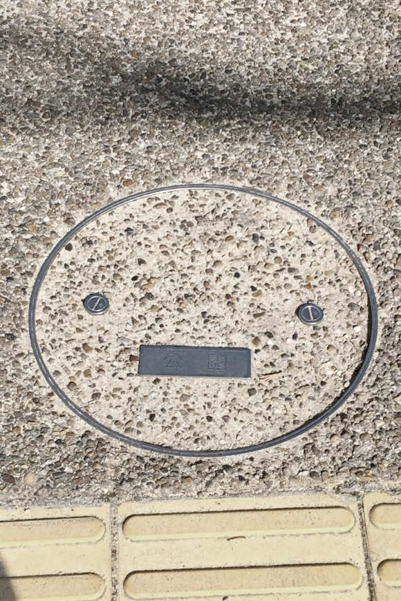
初めて出会った顔。マンホールさん。初めてだけに公園でしゃがみ込んで撮るのはとても恥ずかしく勇気が必要だった。いま思えば初めてにしては悪くない。
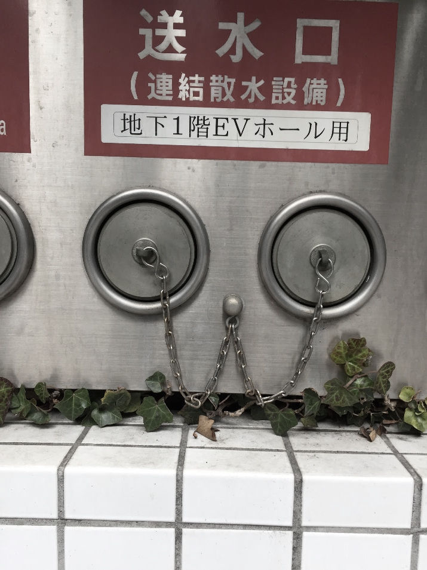
二人目に出会った顔。どこかクセが強い犬っぽい顔。しょっちゅう街で見かける。
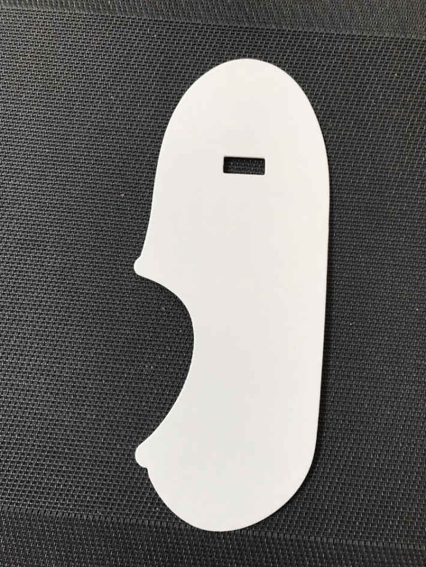
買ったばかりの靴下から出てきた顔。おそらくのんびりしている性格だろう。
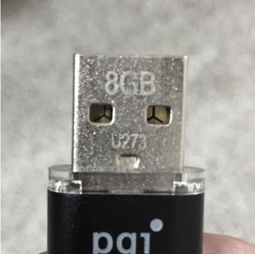
ＵＳＢさん。仕事でよくお世話になる顔。
姉の家には三兄弟がいるらしい。姉の作品。
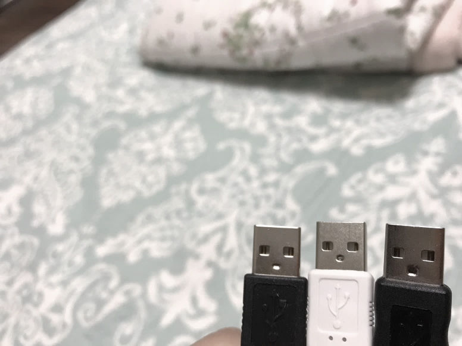
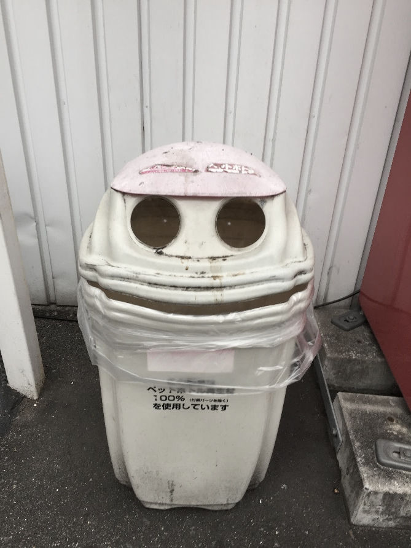
帽子をかぶっている顔。空き缶を食べてくれるが半笑いが怖い。よく見ないとわからないけれども、目の中にちゃんと点がある。
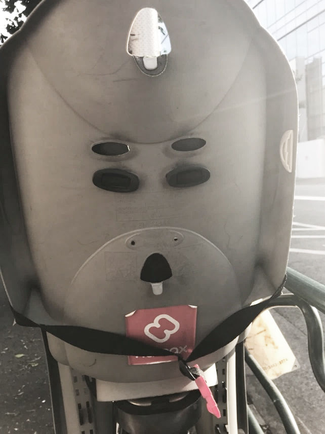
自転車のベビーカーにいる顔。姉の作品。なんとなく男性ホルモンが多い。
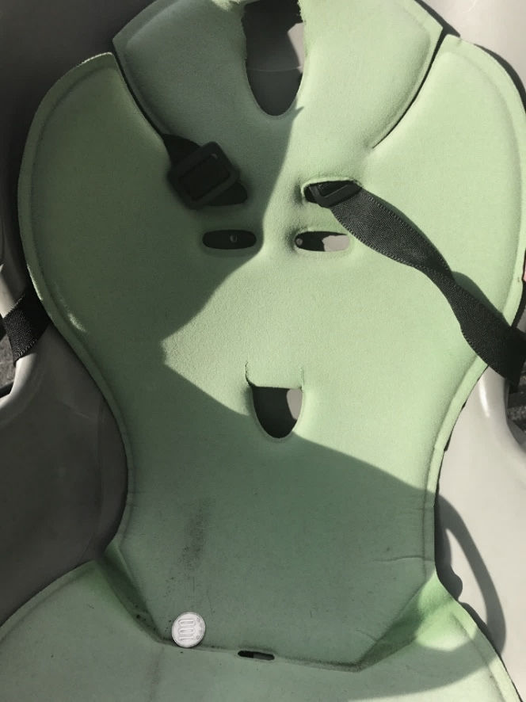
これも姉の作品。良いことがあった様子。１００円を拾ったからか？
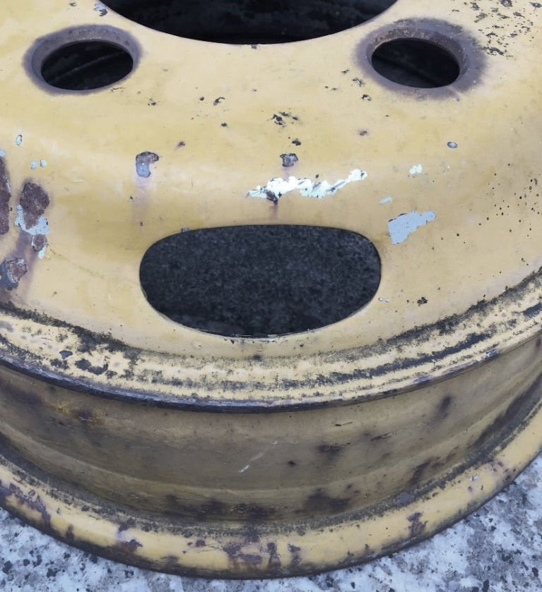
放心状態なのか？ 僕は気に入ってるけれど、うちの奥さんからは怖いと評判が悪かった。僕は疲れ切っている時、こんな顔になる。
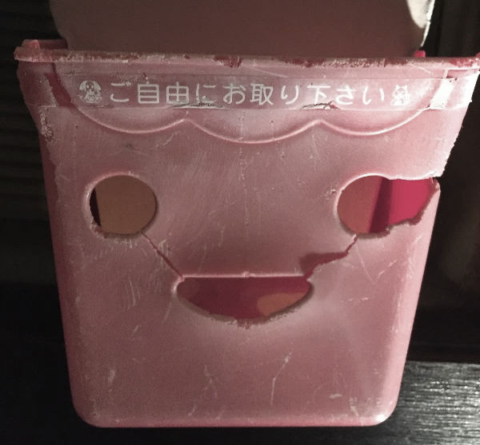
優しそうな幽霊っぽい顔。お気に入りだったのに壊れているせいか撤去された。
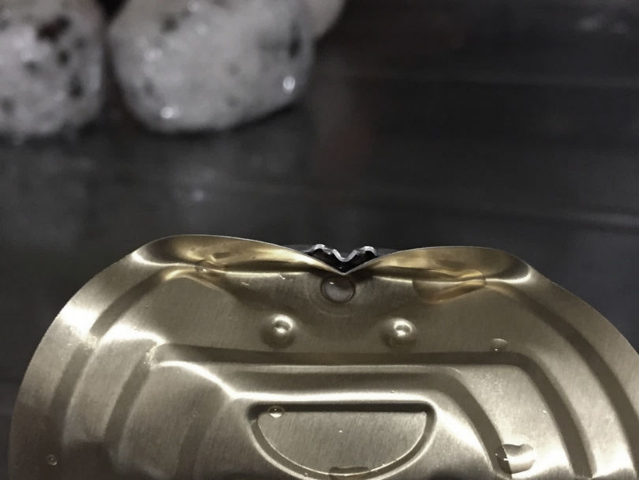
純真な笑顔。缶詰のフタなので晩ご飯の後によく会える人。こんな顔されたら実際よりおいしく感じてしまう。
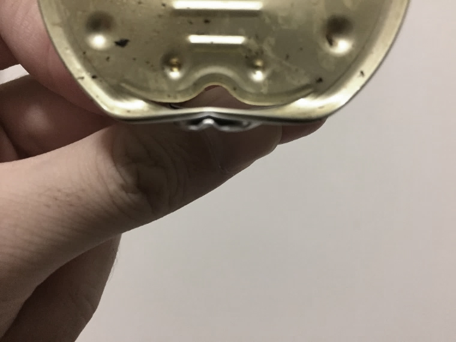
善い妖怪っぽい顔。この人も晩ご飯の後よく会える。
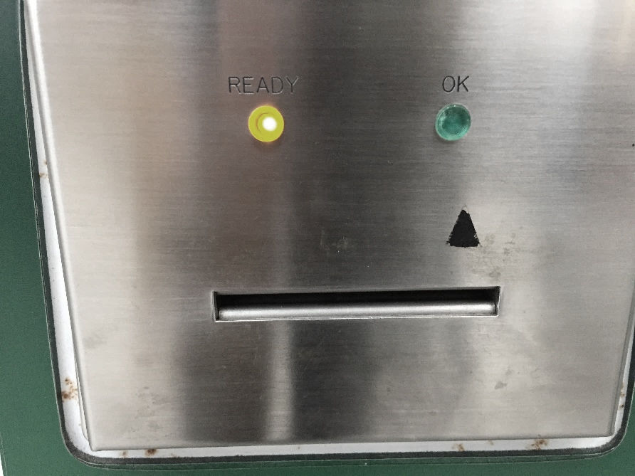
僕自身が辛いことがあった日に会った顔。仲間を見つけた気分。お前も泣いているのか。
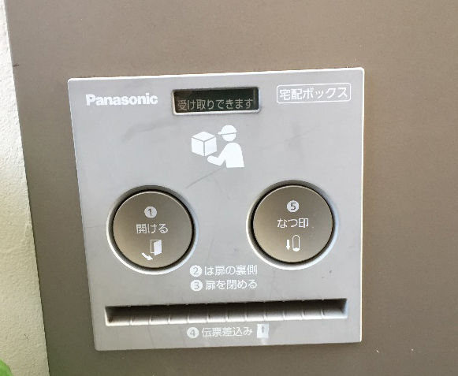
あまりにも顔過ぎる。メーカーの人もわざとやっているのではないだろうか。そう思うと少しうつな気分が減り、微笑んでしまう。
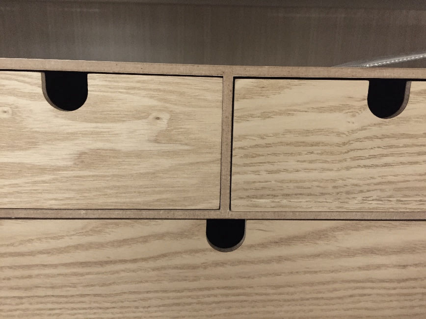
機嫌が良さそうな顔。雑貨屋には顔が多い。
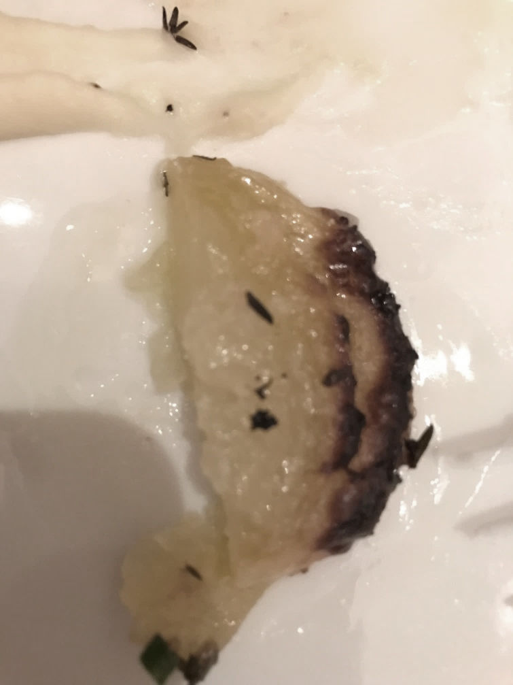
わかりにくいがアップルケーキにいた顔。これは僕が最も衝撃を受けた作品で、姪っ子が撮った物。ど真ん中に顔がいるのがわかるだろうか？ 姪っ子は海外で生活しているのだが、海外で育つと顔の感性が違うのだろうか。これは僕ではきっと見逃していた顔。
顔撮影初心者の姪っ子が適当に撮った顔に衝撃を受けたのは非常に悔しいが、この顔は認めざるを得ない。
＝＝＝＝＝＝＝＝＝＝＝＝＝＝＝＝＝＝＝＝＝＝＝＝＝＝＝＝＝＝
街で出会う顔の写真を撮ることは、10 年以上前にマンガ週刊誌で、そういう趣味があるというのを知ってからはじめました。それからずっと、なんとなく頭の片隅にありました。
でも、街に出て一人でマンホールや消火栓の写真を撮るのは、かなり気恥ずかしいです。僕はアラフォーの男性。そんな写真を撮っていて不審者扱いされたらどうしよう。ましてや僕はカウンセラー。通報されたらヤバい。最初はドキドキしていました。
ところが、一枚撮ってみるとなんだかうれしい。帰って家でスマホの写真を見ると、少し胸が高鳴る。思い切って奥さんに見せてみると、ちょっと微笑んでくれた。やっぱりうれしい。
10 年以上経ってやっと実行した趣味。１枚、また１枚と少しずつ顔の写真が増えていきます。
「こんなへんてこなものを趣味にしていいのだろうか？ 人にバレたら恥ずかしい」
最初はそう思っていたのに、だんだんと人に見せたくなります。
奥さんだけではなく姉に見せると、姉からも顔が届くようになりました。ある時僕は、久しぶりにあった高校時代の友達と出かけている時に、顔を見つけてしまいました。
「ここで撮ったら友達にバレる......。でも、これはめったに見つけられない良い顔やしな......」。
悩んだ僕は仕方なく事情を話し、その顔の写真を撮りました。次の日、ＬＩＮＥで友達が見つけた顔の写真が届きました。スマホを持っていたら誰でもできるためか、意外とみんな協力してくれます。
僕のことをいつもうつむいて歩くクセがあるといったうちの奥さんいわく、面白いという言葉の語源は、楽しいことがあると顔が上を向くので太陽の光が顔に当たり、面が白くなる。だから面白いという言葉になったそうです。
そんなのはただの言葉遊びだと僕は思ったけれども、いつも通る道でも顔を探して歩くと少し楽しい気分になり、次第に僕は上を向いて歩くようになりました。
なにしろ道にある顔は、大抵目線が高い場所にあります。心なしか以前に比べて、歩いているだけで憂鬱な気分になることは少なくなり、顔を見つけると一人でも微笑んでしまいます。
僕と同年代の人のスマホの中は、おしゃれなお店でのディナーやカッコいい趣味を楽しんでいる姿など、いわゆるＳＮＳ映えする写真がたくさん入っています。僕は自分がスマホのなかに顔の写真ばかり入っているアラフォー男性になるなんて、思ってもいませんでした。でも、顔の写真を撮るのと撮らないのでは、明らかに前者の方が微笑みの回数が増えています。
他人になんと思われようと、くだらない趣味を持つことは生活に微笑みを取り戻すためには、とても有効です。そもそも趣味なんてものは、他人からすればどうでもいいようなものなのです。そこにカッコいいとかおしゃれとか、他人の評価を持ち込んだ時点で、純粋な楽しみであるはずの趣味が、本来の目的からズレてしまいます。
他人からすればくだらなくても、自分が楽しいと感じればそれでいい。そういう純粋さは、いつもうつむいて歩いていた僕を少し上向かせてくれたし、顔を見つける度に微笑むことができています。後は不審者に間違えられなければ、なんの問題もありません。僕が職務質問をされた時は、この微笑みの練習帳をおまわりさんに読ませて説明しようと思います。
・今日の微笑みの練習帳
くだらない趣味を持つだけで、１日１回くらいは微笑める。
・今日の微笑みの練習方法
どれだけくだらないことでもいいから、何か趣味をはじめてみよう。
何も思いつかなければ、スマホで顔の写真を撮ってみればいい。
さて、ひとつ質問です。「一昨日の晩ご飯は、何だったか思い出せますか？」。微笑みの練習には全く関係ないように思いますが、読み飛ばさずにちょっと考えてみてください。
.........。
...............。
.....................。
どうでしょう。思い出せましたか？ 実はこの質問、認知症のチェックでよく使われる質問なのだそうです。ちなみに僕自身は、全く思い出せませんでした。一応、まだ38 歳ですし認知症の心配はないはず。それでも僕は、一昨日どころか、昨日の晩ご飯でさえなかなか思い出せません。
なんか不安になったので、奥さんにも聞いてみました。
「一昨日の晩ご飯、なにやったか覚えてる？」
「え？ う〜ん......。なんやったかな？ 全然、思い出されへんわ」と奥さん。作った本人が覚えてないなら、僕が覚えていなくても仕方ありません。奥さんの答えを聞いて、かなりホッとしました。
人間の記憶なんてそんなもので、お寿司とか焼き肉とか、よほど印象に残るものでないと、覚えていなくて普通なのです。
さて、僕はここで、重大なことに気づきました。それは、「おとといの晩ご飯も、ろくに思い出せない僕に、将来を心配する資格はない！」ということです。
僕はいつも将来のことを考えて、不安になってしまいます。うちみたいな小さな自営業のカウンセリングルームは、ちょっとしたことで潰れてしまうかもしれない......。体調が悪くなるとすぐに寝込む僕が、子供を育てていけるだろうか......。ときには政治経済なんて全く詳しくないくせに、少子高齢化の日本で、僕の老後はどうなっちゃうんだろう......。そんな不安が頭をよぎります。
そして不安が頭の中をぐるぐる回るだけで、何ひとつよい解決策など思い浮かびもしない。ただただ不安感が強くなるばかりで、しょんぼりしてしまった僕の顔からは、微笑みは消えてしまいます。
でも、考えてみてください。僕なんて人間は、おとといの晩ご飯さえ思い出せない人間です。たった２日前です。そんな直近の過去すら正確に思い出せない僕が、５年10 年先という不確定な未来などわかるはずがありません！
キリストは聖書の中で、「明日のことまで思い悩むな。明日のことは明日自らが思い悩む。その日の苦労は、その日だけで十分である」といっています。
２０００年以上前のキリストがそんなことをいっているくらいですから、はるか昔からぼくたち人間は、将来の不安でいっぱいだったのでしょう。
人間なんて弱い生き物。心配などするなといっても、それは無理というもの。いくら自分で気をつけたところで、気がついたときには頭の中に不安な事柄が思い浮かんでしまっています。
僕たち知性のある人間は、将来を心配する生き物です。それは未来のことを予測する能力が、他の生き物よりもずっと発達しているからです。
それを考えると、将来の不安がまったくない人は心が強いのではなく、もしかしたら何かしら脳に問題があるのかもしれません。それくらい僕たち人間の脳は、どんな人だって将来を心配してしまうものなのです。
それでもどうなるかわからない未来のことを心配するあまり、今日という１日を微笑んで過ごせなくなるのは、あまりにももったいない。
だから僕は、そういうときにはこの言葉を思い出すことにしています。
「一昨日の晩ご飯は、何だっただろうか？」
たかだか一昨日の晩ご飯すら思い出せない僕が、５年、10 年先のことを心配したところで仕方ありません。
ましてやどうなっているかわからない老後のことなど、一昨日の晩ご飯すら思い出せない人間が心配したどころで、何ひとつ役に立つ考えは思い浮かばないでしょう。
「一昨日の晩ご飯すら思い出せないのだから、将来の不安なんて考えるのはやめて、ただ今日１日をどうやったら微笑んで過ごせるかを考えよう」。それを思いついた瞬間、もうすでに僕はうっすらと微笑んでいました。
・今日の微笑みの練習帳
一昨日の晩ご飯も思い出せない僕たちは、将来の心配なんてしても仕方がない。
・今日の微笑みの練習方法
将来が不安になる度に、一昨日の晩ご飯を思い出せるか考えてみよう。
「最悪だ......」。それに気づいたとき、とうとうこの日が来たかと思いました。ある時から急にシャツの襟首が、黄ばみはじめたのです。「僕も30 代後半。これが加齢というやつか......」と少しションボリ。
ところが意外なことに黄ばみの原因は、なんと僕のメガネだったのです。パソコンに向かうことが多い僕は、ＰＣ用のメガネを使っています。仕事が終わった後もテレビやスマホを見ることが多いので、面倒くさいから人に会わない日はほぼ１日ＰＣ用メガネのまま。
ＰＣによる目の疲れは画面のブルーライトが原因らしく、ＰＣ用メガネはブルーライトを軽減するためにほんのりオレンジ色になっています。
そのメガネをかけたまま自分の脱いだ白いカッターシャツを見ると、襟首の黄ばみが無駄に強調されていただけ。メガネを外して裸眼で見ると、目立った黄ばみは全くありませんでした。僕はホッとして「まだそんなに歳じゃない」と安心しました。
ずっと薄いオレンジの色眼鏡をかけていると、世界がオレンジ色に見えていることを自分でもわからなくなってしまいます。おかげで奥さんが洗濯をしてくれても、僕が何度も自分で洗い直そうとするので、危うく夫婦ゲンカになるところでした。奥さんからすれば僕が急におかしなくらい神経質になったと、不思議に思ったはず。これほどわかりやすい色眼鏡の失敗はありません。
でも、色眼鏡による失敗はそれだけでなく、カウンセリングでも起こります。僕は電話カウンセリングも面談カウンセリングもするのですが、面談カウンセリングの時にどうしても相談者さんの外見に引っぱられる自分自身に気づきました。
あるとき、どうにも冴えない風貌の中年男性が相談に来られました。服装もなんだかヨレヨレで、失礼ながら見た目も話し方も鈍い。とても鋭い知性がある男性には見えません。その男性が世界を股にかけたビジネスで、社会貢献したいという計画を話されました。
「こんな壮大な夢を語って、この人は大丈夫だろうか......」
僕はだんだん怖くなってきました。それでもまずはカウンセラーとして、相談者さんの話を最後まで聴くことにしました。
その方はカウンセリングの後半になってから自分の学歴と職歴を話されたのですが、海外の有名な大学を出て世界的企業で勤めておられました。話し方からして、決して嘘ではありません。その経歴なら決して不可能ではない計画でした。おかしいのは彼ではなく、僕の人を見る目の方だったのです。僕は恥ずかしくなりました。
こういう失敗は電話カウンセリングではほとんどなく、面談カウンセリングの時に起こります。僕はどれほど自分が人の外見という偏見に影響されてしまっているか、思い知らされました。
人を外見で判断してはいけないという、人間としてあたり前のことすら僕はできていなかったのです。それで一体何がカウンセラーなのか！ この失敗は僕にとって、まさに痛恨といえるほど身にしみる教訓になり、それ以降なるべく偏見で人を見ないように気をつけています。
でも、言い訳をするわけではないですが、こういう失敗をするのは決して僕だけではありません。カウンセリングの神様といわれる心理学者カール・ロジャーズは、『結婚革命』という夫婦関係について研究した本の中でこんなことを書いておられます。
10 年前に出会ったある夫婦について、カール・ロジャーズはすぐに破局すると思ったそうです。ところが、その夫婦はとても困難な様々な問題を二人して乗り越え、彼ら独自の夫婦関係を作り上げ、とてもよい夫婦になりました。
そのことについてロジャーズさんは、『私の診断と予測能力はこの程度のものである』とおっしゃっています。カウンセリングの神様でさえ人を見る目がこの程度とおっしゃるのだから、僕がこの程度でも仕方のないことでしょう。
そもそも人間の人を見る目なんて、当てにならないもの。「俺は人を見る目には自信があるんだ」なんていうのは傲慢な考え方です。
それがどれだけ人生経験を積んだ人であっても、「こういう人はこういうタイプだ」と決めつけることはできません。だって、僕達自身も他人から傲慢に自分のことを決めつけられて、嫌な思いをしたことが必ずあるはずですから。
それでも僕達は人間である限り、自分自身も同じように傲慢な偏見で人を決めつけて、判断してしまいます。大人になるといろいろな経験を積み、何かしら自分なりの考えを持つものです。そしてその考えが正しいとどこかで思い込んでしまいます。
それは脳の仕組みとして非常に自然なことです。僕達の脳は毎日非常にたくさんの情報を処理するので、ある程度、「こんな感じの人はこんな人」というタイプ分けをして人や物を判断する仕組みがなければ、とても脳の処理が追いつかないのです。
そういうタイプ分けをすることで、脳は効率よく情報を処理します。つまり偏見とは脳の省エネ対策なのです。これらは錯視や錯覚などとほぼ同じ原理です。だから僕達人間は、その傲慢な偏見を完全に捨て去るなんてことは、脳を１００年後のスーパーコンピュータと交換でもしない限り、できることではありません。
つまり、どれだけ意識しても僕達は必ず傲慢な偏見を持っているし、自分の考えや人を見る目などそれほど信用できるものではない。それをわかった上で人と関わっていくと、なるべく早く自分の偏見から抜け出せます。それに気づいてやっと、僕は多少マシなカウンセラーになれたと思います。
僕達は必ず多少なりの偏見を持っています。人の外見も政治思想も宗教も恋愛も結婚も、最初は自分でも気づかない程度のほんの少しの考え方の偏りです。ＰＣ用メガネのオレンジ色と同じで、自分で気づかないくらいほんのりとした考え方の偏りなのです。
その偏りが少しずつ、少しずつ大きくなって、気づいたときには自分の考えが正しいと固執してしまう。だから、他人とのすれ違い、衝突が起きる。そして考え方の偏りは、他人から指摘されると腹が立つという特徴を持っています。
だから、人から注意されてもなかなか認められず、意地になるのです。時には注意してくれた人のことを、攻撃してしまうこともあります。
そんなふうに偏見とは非常にやっかいなものなのですが、微笑みに繋がる側面も持っています。それは自分の偏見に自分自身で気づいたときのはっとするような驚きです。
乳幼児にとっての学びとは、いままで知らなかったことを知ること。でも、大人の学びはそれだけでなく、いままで正しいと思い込んでいたものを、「ああ、これは僕の思い込みだったのか！」と気づくことです。
これは一度、世間の常識や偏見を身につけた後でしかできない学びで、小さな子供には絶対に味わうことのできない驚きと喜びがあります。
偏見や思い込みは、他人から指摘されると腹が立ちますが、不思議なことに「ああ、これは僕の思い込みだったのか！」と、自分自身で気づいたときには意外なほど爽快感があり、うれしいものです。そこには何か難しいなぞなぞやパズルを解いたときのような快感があります。
そして人生がうまくいっていない時期は、たいてい何かしら自分の思い込み、固定観念が影響しているものです。
シャツの黄ばみがＰＣ用メガネのせいだと気づいたとき、「なんや、こんなことやったんか！ 加齢のせいやなかったけど、頭がちょっとボケとったな」と、僕は思わず一人で微笑んでしまいました。
もし何かがどうしてもうまくいかずに行き詰まったとき、「これはどこかに自分の思い込みがあるのかもしれない......」と疑ってみることは、新たな微笑みに出会えるきっかけかもしれません。少なくとも他人を疑い攻撃するよりかは、ずっと微笑みに出会える可能性は高いことでしょう。
・今日の微笑みの練習帳
自分の偏見に気づくことは、自分にもまわりにも微笑みをもたらす。
・今日の微笑みの練習方法
自分がどんな偏見を持っているのか、書きだしてみよう。
僕が子供のころ飼っていたシーズー犬は17 年も長生きしたけれども、お世辞にもあまり賢いとはいえませんでした。お座りやトイレはなかなか覚えず、もちろんお手なんてできません。
酷いときには散歩の帰りに自分の家と間違えて、隣の家にはいっていったことがありました。「どうもよその犬の話を聞く限り、うちの犬はあまり賢くないらしい」というのが、我が家の共通認識になっていました。
僕の父はお酒を飲んでは暴力を振るう人で、母や僕たち子供だけでなく、犬にもよく手を上げていました。もちろん僕や姉は父には近寄ろうともしません。父が玄関を開ける音がすると、サッと居間から人がいなくなるのです。
ところがうちの犬は、父がえさを持っていたらしっぽを振って寄っていきます。昨日、あんなに殴られていたのに。それどころか、父が居間で寝ていると、その隣で平気で寝ていました。父の隣がストーブの近くで暖かいという理由だけで。
子供のころの僕は、「あの犬はなんてプライドのない犬なんや。本当にアホなんちゃうか？」と思っていました。決して父に懐いていなかったのですが、僕たち家族のように極端に避けもしませんでした。
ちなみにうちの犬は、僕にもあまり懐いていませんでした。というのも子供のころの僕は、とにかく毎日犬にいたずらをしていたのです。脱いだ靴下をはかせてみたり、犬のおでこにシールを貼ったり、わざと犬の鼻の前でおならをしてみたり。
複雑な家庭で育った僕にとって、遊び相手になってくれるのは犬しかいなかったのかもしれません。こちらは兄弟のようなつもりで遊んでいたのですが、一日中追いかけられる犬からしたら、はた迷惑な話です。
さすがにそういうことが何年も続くと、うちの犬は僕を見ただけで逃げていくようになりました。それでもうちの犬は、僕が風邪を引いて寝込んでいると、必ず僕の布団に入ってきて添い寝をしてくれるのです。昨日まであんなにいじめていたのに。うちの犬は物覚えは悪いものの、嫌なことを忘れるのはとてもうまかったのです。
僕は夫婦ゲンカをしたとき、いつもその犬のことを思い出します。
「こんなとき、うちの犬やったら、何もいわずに布団に入って添い寝ができるのに......」
僕は無駄なプライドが邪魔をして、それができません。
僕は嫌なことを忘れるのが苦手で、ちょっと嫌なことをいわれると、何日も恨みがましくそのことを引きずってしまいます。つまり一度機嫌を損ねると、しつこくて長いのです。
もう気持ちを切り替えないと自分がしんどいだけだと、頭ではわかっています。でも、嫌な気持ちがなかなか心から離れません。夫婦ゲンカだけではなく、仕事で嫌なことがあっても、なかなか気持ちを切り替えられません。そういう自分の性分には、ずいぶんと苦しめられています。
そうやって気持ちを切り替えられずに苦しんでいる時、いつもあの犬のことを思い出します。そして、最近やっと気がついたのですが、あの犬は忘れていたのではなく、許していたのかもしれません。いや、許すことと忘れることは、ほぼ同じ意味なのでしょう。
嫌なことをされたら、他人を恨んで当然です。恨むという気持ちは、危険な人から自分を守るためにあります。恨む気持ちを持ち相手に怒りを表明することで、されたら嫌な行動を抑制することができます。これは恨みという感情の、とても重要な機能です。
かといって、必要以上に嫌な気持ちを引きずったところで、僕の毎日は微笑みから遠ざかるだけで、なにも得することがありません。
だから、忘れることが大事です。忘れるという漢字は、心を亡くすと書きます。心を亡くすなんてなんだか悲しい感じがしますが、僕たちは嫌な記憶を忘れることで、また微笑みを取り返すことができます。それを考えると、忘れるとは非常に精神性の高い能力です。
そして、うちの犬はお世辞にも賢いとはいえなかったけれども、嫌なことをされても忘れられる能力を持っているという点においては、僕よりもずっと精神性が高かったのです。
僕は自分に嫌なことをした人と一緒に笑いあうなんて、なんだか悔しい気分になります。その悔しい気持ちは、余計なプライドだともわかっています。そのプライドが邪魔をして、なかなか忘れることができません。
それでも忘れなければ微笑んで暮らせないということは、日々自分の恨みの心に苦しめられている僕自身が、誰よりもよく知っています。
自分に嫌なことをした人と一緒に笑い合うなんて、なんだかバカみたいに感じてしまいますが、必要に応じて忘れることほど、賢く精神性の高いことはありません。
ただ、ここまで考えてさらに問題が出てきます。それは、やっぱり嫌なことをされたのを忘れるなんて、現実問題、とても僕にはできそうにないし、ちょっと高尚すぎて堅苦しさを感じる点です。
そんなに堅苦しくては、「ああ、僕はまた嫌な気持ちを忘れることができず、引きずっているのか。カウンセラーのくせに情けない......」と自分を責めてしまいそうです。それでは本末転倒。逆に僕から微笑みを奪ってしまいます。
そういうときは「僕は犬と違って賢すぎるから、嫌なことを忘れられないのも仕方ない。人間という賢すぎる生き物は、多少、恨みを引きずるところがあるもんや」と考えるくらいが、微笑んで生きるにはちょうど良いのでしょう。
恨みを忘れて微笑んで暮らすことが一番いいけれど、そんなことを人間に求めるのは、あまりにも無理があります。だから、本当は恨みを忘れた方がいいけれども、プライドが邪魔をして自分を苦しめている。
そのことを認識できていれば、人間としては非常に良いできなのでしょう。そして、この点だけにおいては、僕はずっとあの犬に勝てないのでしょう。
・今日の微笑みの練習帳
多少、頭が悪くても恨みを忘れるくらいが調度いい。
・今日の微笑みの練習方法
今日１日だけ、忘れたふりをして自分から歩み寄ってみよう。
幸福に関する研究で、良いニュースと悪いニュースがあります。
まずは悪いニュースから。せっかく宝くじに当たっても、たった数年で僕たちの幸福感はほとんど元に戻ってしまいます。せっかくの希少な幸運もその程度。これは残念なことです。
次に良いニュースを。もし僕たちが交通事故に遭い下半身麻痺になっても、たった数年で僕たちの幸福感はほとんど元に戻ります。そして驚くべきことに、宝くじに当たった人も下半身麻痺になった人も、数年経過した統計的なデータによると、その幸福度の差は非常に小さいものだったのです。これはフィリップ・ブリックマンの有名な研究です。
僕たちの心には「順応」という働きがあります。簡単にいうと僕たちの心は、良いできごとも悪いできごとも非常に短期間で慣れるようにできています。だから、宝くじに当たってもその高揚感にすぐに慣れてしまい、お金をたくさん持つことの悪いところに目が行くようになる。逆に下半身麻痺になっても、思っているよりずっと早く車いす生活に慣れて、その生活のなかで喜びややりがいを見つけるようになります。
もちろん僕も下半身麻痺になるより、宝くじに当たりたい。それでもいま僕が想像しているよりも、実際になってみたときに感じる幸福感の差は、非常に小さなものなのです。喉元過ぎれば熱さを忘れるとは本当で、嬉しいことも辛いことも実は最初だけで、あっという間にその状況に慣れてしまいます。
別の研究では配偶者の死という非常に辛いできごとでさえ、男性で約４年。女性はたった２年で元の人生の満足度に戻るという研究があります。逆に結婚した時の幸福感もたったの２年間しか続かない。子供を持つことの喜びにおいては、実はたったの１年間しか続かず、それ以降の数年間、特に子供に手がかかる間はむしろ幸福感が下がるという研究があります。僕たちにとって良いできごとも悪いできごとも、実は非常に賞味期限が短い商品なのです。
この研究は「そんなことあるはずがない！ 結婚も子育ても幸せに違いない！」とかなり議論や批判を生んだようですが、結婚して２年もするともうすっかり初々しさもなくなり、日常生活になるのは当然です。また子育てについても、子供ができてから夫婦ゲンカが増えた、夫婦の夜の営みがなくなったというのはよく聞く話です。
ただ、それを考えてもこういう研究にはかなりの個人差が出てくるし、素直に文字通り受け入れるのが正しいとは思えません。あくまでその瞬間の幸福度であり、80 〜１００年という生涯を振り返っての幸福感となると、結婚や子育ての幸福度にはまた別の結果が出るかもしれず、簡単に答えを出すことはできません。
それでも良いできごとや悪いできごとに対して、僕たちが想像するイメージと、実際に自分が当事者になった時に感じる幸福感には、大きな差があることは事実です。僕たちは良いできごとにも悪いできごとにも思っているよりすぐに慣れるので、数年単位で見るとそれほど幸福感に差は出てこない。これが非常に重要な事実であることには変わりありません。
なぜこれが重要な事実かというと、僕たち人間は自分より幸福そうな人を見ても、なにひとつ羨ましがることも嫉妬する必要もないからです。幸福そうに見えるその人達も、おそらく僕たちには想像もつかないような悩みを抱え、苦しんでいることでしょう。昔話に出てくる王様がみんな悩み事を抱えているのを考えると、これは人類の歴史上、ずっと変わらない部分なのでしょう。
また、もし自分がこの世で最も不幸だと思うことがあっても、必要以上に落胆することはありません。安易な励ましの言葉など、なにひとつ役に立たないけれど、時間は思っている以上に早く、そして確実に僕たちの心を癒やしてくれるということが、統計的データで証明されているのです。そう考えると、これほど平穏な気持ちを取り戻させてくれる研究は、他にありません。
だから、僕たちは良いことが起きた、悪いことが起きたと一喜一憂する必要すらないのです。どれだけ歯を食いしばって良いできごとを追いかけても、どうしても手に入らない。にもかかわらず、他の人はあっさりと自分が欲しかった良いできごとを手に入れることがある。悪いできごとなど、誰だって起きて欲しくない。にもかかわらず、自分にだけ悪いできごとばかり起きることがある。生きるとは本当に不公平で不条理です。
でも、それすら憂う必要はない。良いできごとにはすぐに慣れて別のストレスが出てくるし、悪いできごとにもすぐに慣れて別の喜びややりがいを持てるようになる。それはこの世に常に幸福な人はいないし、常に不幸な人もいないということ。そこにさえ気づけば、僕たちは良いできごとを追いかける必要もなければ、悪いできごとから逃げ回る必要もない。神様が人間に与えた「順応」という心の働きは、なんとも偉大なものなのです。
僕たちが満たされた人生を生きる方法は、良いできごとを追いかけることでも、悪いできごとから逃げ回ることでもありません。
人間は大きな良いできごと、悪いできごとにはすぐに慣れてしまうけれど、今日という１日に微笑みを見いだす能力を身につければ、これからの一生、飽きることなく幸福でいられることでしょう。そう考えてみると、この不公平で不条理な世の中も、それほど悪くないのかもしれません。
・今日の微笑みの練習帳
自分より幸せそうな人を見ても妬む必要はないし、思っているよりも時間が僕たちを癒やす力は強い。
・今日の微笑みの練習方法
一般的には不幸だと思われることだけど、思ってたより平気だったことを書きだしてみよう。
〈参考文献〉『幸福の計算式』 ＣＣＣメディアハウス ニック・ポータヴィー (著)、阿部直子 (翻訳)
経済学者が統計的なデータを基に書いた本なので、ちょっと堅苦しいです。それでもここに紹介した以外にもいろいろな幸福についてのデータがあり、幸福感に関する統計的データが実際の僕たちの想像と大きく違うことには、きっと考え直させられるはずです。
僕は速読が嫌いです。少なくとも僕は、速読をするような大人には、なりたくありません。
ビジネスマン、特に経営者には速読が好きな人が多く、「１日１冊は本を読みます。月に30 〜40 冊は読みますよ！」と自慢げに語る方がおられます。僕はそういう人に自分の本が読まれると思うと、悲しくなります。
自分の本を速読されるというのは、記念日のために何日もかけて下ごしらえした料理を、全く味わうことなくお茶漬けにして胃の中に流し込まれたような気分になるのです。「お願いだからゆっくり読んで！」と心の中で叫びたくなります。
ミシュランの星をとるようなお店に行って、早食いチャンピオンのような食べ方をする大人には、みなさんもなりたくないでしょう？ 僕の本がミシュランの星を取れるとは思えないけど、誕生日の手作りケーキレベルには丁寧に書いているつもりです。
僕自身の場合は文章を書くときに、Ａ４のコピー用紙に必ず下書きをします。その下書きを見ながらパソコンに打ち込み、さらにパソコンに打ち込んだものを印刷して３〜５回修正をします。それはメルマガやブログなど、ネットにあげる文章でも同じです。
もっというと、本気で伝えたいことを書くときや自分が長年温めてきたテーマを書いているとき、「この一行を思いつくために、丸３年はかかった」ということが実際にあるのです。
原稿に向かっている時間は短くても、何年も電車の中やお風呂、眠りにつく布団の中、歩いているときもずっと考え続けます。これは僕だけではなく、書くことが好きな人はみんな同じでしょう。また文章だけではなく、物づくりに関わる人はきっと同じです。
正直にいうと、本を読んでいて「ああ、この本は締め切りに追われて、よほど急いで書いたんだろうな」と思うこともあります。もっと正直にいうと、僕だって締め切りに追われて急いで書いた経験はあります。（この本は違いますよ）だから、文章を書く方にも責任があり、速読されても仕方ないのかもしれません。
それに単に情報収集が目的の場合は速読の方が適しているし、仕事上必要なこともあるでしょう。最後は価値観の問題だし、速読と遅読ではそもそも用途が違います。
それでも自慢げに月に何十冊も速読するという人は、子供に絵本を読むときも、早口ですますのでしょうか。恋人からの手紙も、効率重視で読むのでしょうか。死んだ親が残した日記を、涙なく読めるのでしょうか。
きっとそんなことはない。すみずみまで味わい尽くし、行間までなめ回すだけでは飽き足らず、何度も読み返しては、しばらく沈黙の時間を過ごすはずです。
実は本を読んで良い経験ができるかどうかは、本の内容ももちろん大事だけれど、それ以上に味わう人の心の態勢が整っていることが重要です。同じ本を２回読んで全く違う感想になるのは、そこに理由があるのです。ゆっくり読まずに、味などわかるわけがありません。
僕自身、仕事上、急いで読まなきゃいけない本があり、その本を読んだときの感想は、「この本はいまいちだな〜。著者が手を抜いたのか訳者が良くないのかな」と感じました。
ところが、数年後、時間に余裕があるときにもう一度読み直してみると、「なんて深いことを書いてあるんだ！ あの時の僕にはこの本を味わえるだけの余裕がなかっただけなのか」と恥ずかしくなったことがあります。
よくよく考えてみると、中学生のころ週刊少年ジャンプを買っていた僕は、次の号が出るまでの１週間に同じ１冊を何度も何度も読んでいました。
「ええ加減ドラゴンボール、先延ばししすぎやろ」と友達と文句をいいつつも、当時たった２４０円のジャンプを次の号が出るまで待ちきれず、同じ号を何度も何度も読んでいました。それは周りの友達も同じでした。
自分のお小遣いで買った江戸川乱歩の推理小説も、姉から借りた中島らものサブカル小説も、初めて読んだユング心理学の本も、今よりじっくり読んでいました。正直いうと、本を書く側になった今の僕よりも、中学生のときの僕の方が、読者としてはずっとレベルが高いと思います。それを考えると、やっぱり僕も少しは嫌な大人になったのかもしれません。
「早く読まなければ」「早く書かなければ」
そういう効率重視の価値観が、気づかないうちに僕をうつな気分にさせていて、読書を楽しむ余裕を奪っていました。
やっぱり本を読むのは、早食いチャンピオンとは違います。月に何十冊読んだと競い合うことは、なんて無意味なことなんだろう。
さて、結論を書きます。やっぱり僕は速読が嫌いです。少なくともゆっくり味わって読んでもらった方が、読者も著者も微笑みに包まれることでしょう。読書も料理もゆっくりと味わうことは、微笑むためのコツなのです。
・今日の微笑みの練習帳
ゆっくりだからこそ、味わえるものがある。
・今日の微笑みの練習方法
この本の次の１ページだけでかまいませんから、いつもよりゆっくり読んでみませんか？
僕のダイエット成功法は美味しいって特別なんだと気づいたこと。30 歳を過ぎた頃、ずいぶんと体重が増えてしまって、80 キロ近くになってしまいました。そこから１年ほどで13 キロ痩せて67 キロ。リバウンドせず。僕の数少ない自慢のひとつです。
ダイエットのきっかけは、体重計を見て「これはヤバいな......」と思っていたときに、テレビで一口30 回噛むと、満腹中枢が刺激されて無理なくダイエットできるという番組を見たことです。ものは試しにと実際にやってみたところ、一口30 回噛むというのがすごく難しい！ 生半可な気持ちでは30 回噛むなんてとてもできません。
やってみてわかったのですが、１口10 回噛むのもかなり意識していないとできません。それまでの僕は３〜４回噛んだら飲み込んでいました。おそらく特に男の人は、ほとんどみんなそんなものです。テレビを見ながらご飯を食べていると、気がついたら飲み込んでしまっていて、ほとんど噛んでいません。
ほとんど噛まずに食べる習慣は、学生時代のアルバイトで休み時間が少なくて、急いで食べるようになったからです。社会人になるともっとゆっくり食べる時間はなくなりました。僕は気づいたら、ごはんを味わって食べる余裕すらなくしていました。
うつな気分に深く取り込まれると、食欲はなくなるし何を食べても美味しく感じなくなるけれども、そもそもゆっくり噛んで食事を味わうゆとりすら、持っていなかった。そんなにゆとりがないから、うつな気分に取り込まれたのかもしれません。
これは僕にとって大きな発見でした。
「僕はこんなに噛んでいなかったのか。ちゃんと30 回噛むようになったら、一体どんな変化が起きるんだろう？」
ダイエットが目的というより、ただ実験したくなっていました。カウンセラーの僕は新しく心理療法を学ぶと、とりあえず自分自身を実験体にします。その習慣がここでも出たのです。
それから毎食１口30 回噛むを目標にしました。１、２、３......と数えながら食べていきます。最初に気づいたのは、１食に時間がかかって仕方がないということ。普通に夕飯を食べようと思ったら、１時間はかかってしまいます。刑事ドラマを見ながらだと、犯人が捕まってもまだ食事が終わらない。食器を洗えないので、奥さんにはいい迷惑です。
その次に気がついたのは、本当にあっという間にお腹いっぱいになってしまうこと。今までの半分の量でお腹いっぱいになってしまいます。30 回噛むのが習慣になった頃には、友人と外食をしても全然量を食べられないので、逆に迷惑をかけてしまうほどでした。そして実際に確実に着実に体重は落ちていき、67 キロに。20 代の時とほぼ同じ体重です。
でも、体重が落ちたことよりも、もっと大きな収穫がありました。それは食べ物というのは、噛めば噛むほどより美味しくなるということ。同じメニューでも３、４噛みで飲み込んでいたときと、30 回噛んだときとでは全く味が違うのです。
「白ご飯ってよく噛むとこんなに甘いのか！ ハンバーグってこんなにもいろんな味が出てくるものなのか！」
とにかく驚くと同時に、いままで僕にご飯を作り続けてくれた母と奥さんに対して、とても恥ずかしい気持ちになりました。そのことを奥さんに話すと、「ちゃんとそうなるように、一手間加えてるんやで」とチクリ。
（恐ろしいことにポテトチップスですら、15 噛みくらいから、ちゃんとジャガイモの味が出てきます。騙されたと思ってやってみてください）
今の世の中は、美味しいものがあふれています。僕が子供の時と比べると、コンビニのお弁当やスイーツ、パンですら驚くほど美味しくなっています。20 年前のデパートのケーキより、今のコンビニスイーツの方が味そのものは美味しいと思います。そういう食べ物もどこかで誰かが一生懸命商品開発をして、今の味にたどり着いています。
料理研究家の辰己芳子さんは『味覚日乗』のなかで、「〝美味しい〟ってこと。あたり前じゃないんですよ」とおっしゃっています。僕は美味しいのがあたり前だと思って、それを味わうための口を持っていなかった。そして美味しいという感情は、自然と人を微笑ませる力を持っています。
美味しいを感じるために必要なのは、高いお金を払うことではありません。ちゃんと噛んでしっかり味わってあげること。たったそれだけのことで「ああ、美味しい」と自然と微笑むことができます。そしてその一瞬だけでも、うつな気分を忘れることができます。
１万円のディナーより、普段の夕食を30 回噛むことの方が、日々の生活に微笑みを取り戻すには重要なのです。
・今日の微笑みの練習帳
１回１回の食事をしっかりと味わうだけで、１日に数回微笑むことができる。
・今日の微笑みの練習方法
次の食事だけでかまいませんから、一口30 回噛むのを試してみましょう。
過去の偉大な哲学者や聖人とされる人たちの言葉で、奇妙なまでに共通する考え方があります。しかもそれは、現代社会では間違っているといわれる考え方です。それは「将来のことなんて考えるな」です。それっていってしまえば、「その日暮らしが一番」だということ。
まずはお釈迦様の言葉から。お釈迦様はこんなことをいっています。
「過ぎ去れるを追うことなかれ。いまだ来たらざるを念 うことなかれ。過去、そはすでに捨てられたり。未来、そはいまだ到らざるなり。」
ちょっと難しい言葉なので、わかりやすく僕なりにいうと、「過去のことを引きずるな。未来のことばかり考えるな。過去はもう過ぎてしまったし、未来はまだ来ていないじゃないか。もう過ぎてしまった過去や、まだ来ていない未来のことを今考えたって、何も解決できないじゃないか」という意味です。
過去を引きずるなはわかるけど、未来のことを考えるなというのは、少し不思議な感じがします。何しろ僕たちは、子供のころからいい学校に入ること、いい会社に入ること、仕事の成果が出るように準備して、将来の目標を達成することばかりを教育されて生きているのですから。
「将来に備えて徹底的に努力をしろ！」というのが、現代社会の考え方です。
現代人の僕たちからすれば、将来のことを考えないと、人生は行き当たりばったりになってしまう。それが不安だから、今のうちから準備をしています。でも、いくら準備をしても不安はなくならない。だって未来のことなんて、誰も保証してくれないのですから。
しかも、歯を食いしばって努力に努力を重ねたところで、自分の思うようにはなりません。それが未来というものです。「努力したら人生全て思う通りになった」という人を、僕は一人として見たことがありません。１年、２年くらいなら順調にいくことはあっても、それが何十年と続くことはありません。ある程度長く生きていれば、「こんなはずじゃなかったのに」ということを嫌というほど経験するものです。
それでも僕たちは将来が不安で、少しでも自分の思い通りの将来にするために、歯を食いしばるのをやめられず、未来におびえて努力をします。そして気がついたら、歯を食いしばる表情が顔に染みついて、微笑みのない生活になっています。将来、楽をするために努力をしてきたはずが、歯を食いしばるだけの一生になってしまうのです。
つまり、未来のことを考えはじめた瞬間から、僕たちの人生から微笑みが減っていくのです。だから過去の偉大な哲学者や聖人達は、その日暮らしを推奨してきたのです。
古代中国の老子や荘子の思想は、あるがままに天命を受け入れろと考えています。これって将来のことなど考えずに、流されるままに生きてしまえといっているのと同じこと。実際、老荘思想では人の正しい生き方を、水にたとえて流れに逆らわないことが大事だと考えます。これってやっぱりその日暮らし。
西洋も同じで哲学者ディオゲネスは、土管（樽）に住んでいたといういい伝えもあるくらいで、現代でいうホームレスと同じ生活。まさにその日暮らしです。それでもアレキサンダー大王に「次に生まれ変わったらディオゲネスになりたい」といわせたほどで、相当に魅力的な生き方をしていたようです。
そして、僕が一番気に入っているのは、先にも紹介したキリストの言葉。「明日のことまで思い悩むな。明日のことは明日自らが思い悩む。その日の苦労は、その日だけで十分である」。これには思わず、なるほどと思ってしまいました。来年の悩みは、来年の僕がなんとかしてくれるだろうし、老後の悩みは年老いた僕がなんとかするはずです。
たとえ、なんともならずに死んだとしても、それはそれで悪いことではないのかもしれません。老後を心配してうつな気分で何十年も過ごすより、その日暮らしで微笑んで過ごした方が、僕にとってはまだマシだからです。
過去の偉大な哲学者や聖人の言葉を見ると、西洋も東洋も関係なく「将来のことなんて考えずに、今の生活を充実されることを考えた方が良い」といっています。現代の心理学も東洋哲学の影響受けているものが多く、ゲシュタルトセラピーなどでは「今この瞬間を生きる」ことを大事にしています。
ただ、それでも僕は本当のところ、将来が不安で仕方がないのです。どれだけ偉人や聖人の言葉を集めても、どれだけ心理学やカウンセリングを勉強しても、将来の不安は僕の心に大きく居座って、出て行ってくれそうにありません。
将来、惨めな老後になったらどうしよう。孤独な老後になったらどうしよう。たくさんの不安が僕に歯を食いしばらせます。どうやら今回の人生で僕に任された役は、聖人ではなく迷える子羊のようです。
だから、将来が不安に感じてもいいことにしました。生身の人間である僕の心から将来の不安をなくすだなんて、そもそも無理な話なのです。何しろ僕は迷える子羊なのですから。迷える子羊らしく、不安で悩んで歯を食いしばって生きたらいい。聖者や哲学者のように、スマートに生きなくて良い。
でも、その代わりに不安になるたびに「その日暮らしでいいんだ。どうせ同じ１日を過ごすのなら、ほんの少しでいいから微笑める過ごし方をしよう。来年の悩みは、来年の僕がなんとかしてくれるはず」と、心の中で唱えることにしました。
下町のカウンセラーである僕には、偉大な聖者にも哲学者にもなれそうにないけれど、マネっこくらいはしたほうがうつな気分を手放すには効果的です。
・今日の微笑みの練習帳
昔から偉い人はみんな、その日暮らしを説いていた。
・今日の微笑みの練習方法
今日１日だけ、将来のことを考えるのはやめて、その日暮らしをしてみよう。
「小さな変化は、より大きな変化を起こす」
認知行動療法や解決志向ブリーフセラピーでは、そのように考えます。僕たち夫婦がうつな気分に深く取り込まれていた時期を救ってくれたのも、実際に小さな小さな変化でした。
僕たち夫婦を救ったのは、一台のミシンでした。どの家庭の誰の人生にも、うまくいかない時期というのは、必ずあるものです。暗雲が垂れ込めて、永遠に晴れの日など来ないのではないか。そう思う時期が必ずあります。
実は僕も奥さんもあまり身体が頑丈とはいえず、ちょっとしたことですぐに寝込んでしまいます。ある時期、二人とも体調がすぐれないことが続きました。悪いことというのは重なるものです。その時期に僕も奥さんも仕事やプライベートで、いろいろ問題を抱えていました。
健康状態も仕事もプライベートもうまくいかないとなると、どれだけ心が強く柔軟な人でも、必ず気が滅入ってしまいます。僕達もそれから逃れることができず、家の中が深海のように重い空気で張り詰めた時期が長く続きました。
それを救ったのが、一台のミシンでした。最初の小さな変化は、僕がカッターシャツに刺繍を入れたことでした。僕は働く人のカウンセリングという仕事柄、「不安があっても新しいことにチャレンジするのは大事ですよ」とよく相談者さんにいいますし、今まで自分が書いた本にもそう書いています。
でも、それを書いている僕自身が何か新しいことにチャレンジしていないと、なんの説得力もありません。そこで僕は何年かに一度、やってみたいけどまだやったことがない何かに、チャレンジしています。
そんなときに大阪の無印良品で、オリジナルのシャツを作れるというサービスを見かけました。僕は高校生の頃、ファッション雑誌を読んでモデルさんが自分で服をアレンジするというのを見て、なんだかカッコいいと憧れました。
でも、服のアレンジなんてセンスが必要だし、そもそも針仕事なんて小学校の家庭科でしかしたことがない。自分なんかにはとても無理だと思いました。
ところが、それから15 年ほど経ち、その時見た無印良品のサービスはこんなものでした。まずは白いシャツを買う。いろいろな種類のボタンが置いてあって、気に入ったものを選ぶ。希望すれば簡単なデザインの刺繍を入れてくれる。自分に合ったサイズの白いシャツといくつかのボタンを選び、胸に入れる小さな刺繍を決める。後はお店の人が完成させてくれるのを待つだけ。
できあがったシャツを着た僕は「うん、まあ悪くない」と思いました。しばらく僕は、そのシャツを着て過ごしました。でもまだどこか違う。もうちょっとナチュラルで体にフィットするサイズ。それに当時30 代半ばの僕には、ボタンも刺繍も少し子供っぽい。
そのことを奥さんに話すと、ユザワヤという大きな手芸屋さんがあり、そこに行くともっとたくさんの種類のボタンがあるから、きっと気に入るものがあるというのです。
男の僕は、手芸屋さんに入るのに、かなり抵抗がありました。奥さんは「男の人がいても、誰も気にしてへんよ」といいました。僕は「でも、女の子はラーメン屋とか牛丼屋に入りにくいんやろ。それと同じや」といいました。
数週間後、僕はソワソワしながら奥さんと一緒に手芸屋さんに行き、深く落ち着いた色の木のボタンを見つけました。大人の男性がつけてもおかしくない刺繍プリントも見つけました。男性向けは数が少なく、探すのが大変でした。
次はユニクロでスリムな白いカッターシャツを買いました。一度全てのボタンを外し、ナチュラルな木のボタンに付け替える。そして胸にワンポイント、小さな刺繍をつける。文章で書くと簡単なのですが、実際にやるのはいかに大変か。
まず意外なことに、ボタンを外すのが難しい。機械で頑丈に縫い付けてあるので、簡単には外れません。それから木のボタンに付け替えるといっても、ひとつではありません。前のボタンだけで７個。ボタンダウンにしたかったので首元に小さなボタンが２つ。合計９個。失敗したときのために予備を１着準備していたので、全てで18 個。おそらく、それまでの人生で僕がつけたボタンの数より、ずっと多いです。
テレビを見ながらのんびりやればいいと思っていたのですが、ちっともうまく進みません。慣れない針仕事で目が疲れてイライラしてきます。糸がおかしく飛び出して、おしゃれなボタンも無残な有様。
それを見ていた奥さんが「わたしがやってあげようか？」といいました。最初、僕は奥さんに気を遣わせてしまったのだと思い、「いいよ。自分でできるから」といいました。
でも、イライラするばかりで、全然キレイに仕上がらないのです。なにより、せっかく気に入った木のボタンが無残な有様になるのは、なんだか悲しいことでした。
「ごめん。やっぱり手伝って......」
１時間もすると僕が家庭科で習ったことのない不思議なやり方で、２着ともキレイにボタンがつき、刺繍プリントも頑丈に付きました。
奥さんは「手先を使う細かい作業は、無心になれてストレス発散になるねん」といいました。そういえば結婚してすぐの時も、何かポーチのようなものを作ろうとしていたっけ。
完成したシャツを見た僕たちは、「これはいい！ これはすごい！」といいました。ちょっとアレンジしただけなのに、なんだか自分たちの作品ができたような気がしました。
でも、完成した後にこんな恐怖心が湧きあがってきたのです。
「もしかして自分たちが自己満足しているだけで、他の人から見たらダサかったらどうしよう......」
加熱したテンションなんて冷めるのも早いもの。
「やっぱりこれは家の中だけで着て、外には出ないようにしよう」と決めました。
ところが人間の恐怖心とは、すぐに慣れてしまうものです。数日経つと、だらしない僕は「まあ、ちょっとコンビニ行くだけやったらええか」とそのシャツを着て家を出ました。それからさらに数週間が経つと、「まあ、近所の商店街くらいいいか」。だんだんとシャツは遠出をしました。
そしてここで、小さな奇跡が起こります。僕は文章を書くことが多い仕事柄、肩こりや腰痛に悩まされて、あるとき近所の商店街の中にあるクイックマッサージ店に入りました。例のシャツを着ていることなど、すっかり忘れていたのです。
するとそのクイックマッサージ店の女性店員さんが「おしゃれなシャツですね」といいました。僕は早足で家に帰りました。普段、物静かな僕たち夫婦が、あれほどはしゃいだことはありません。しばらくすると、僕の名前で手芸屋のポイントカードができていました。
普段、優柔不断で控えめな奥さんが、手芸に関してはテキパキと自分で物事を決めていきます。手芸をしていると、奥さんの顔に活力がみなぎり声に張りがでてきました。それにつられるように、僕たちの体調は良くなっていきました。我が家に垂れ込めていた分厚い暗雲に裂け目ができ、ほんの少し太陽の光が差し込むのを感じました。潮目の流れが変わるのを、僕は感じました。
最初は店でボタンを付け替えるという小さなきっかけから、自分でボタンを付け替えることになり、目に見える変化が起こってきたという劇的な日々です。それでも僕たちは消極的で、手芸屋さんに行くたびに「自分たちにミシンはまだ早いよな......」といいました。当時の僕たちには、あまりにも自信がありませんでした。
季節が変わるたびに、僕たちにはひとつずつ作品が増えていきました。何日も計画を立てて作ったＴシャツは、ビックリするくらいダサい仕上がりで、二人で腹がねじれるほど笑い続けました。数日後、ハリネズミと子鹿、そして子ヤギのおしゃれなＴシャツができました。もちろんこれも最初は自宅だけで着ていました。そして近所のコンビニまで、商店街へとステップアップ。
春になると花粉症の僕は、仕事カバンの中にいつもポケットティッシュが散乱します。「かわいいのじゃなくて、ダンディーなやつがええねん」。僕は奥さんに依頼を出しました。
また一緒に生地を選びに行き、数週間後、奥さんはハリスツイードの生地でポケットティッシュケースとマスク入れを完成させました。
「うん、これなら男が仕事に持っていっててもおかしくない」。僕のカバンの中はちょっぴりきれいに整理されました。鼻をかむたびに、少し微笑みが生まれます。
さらにいくつかの簡単な小物ができ、奥さんはしょっちゅうスマホで手芸サイトを見るようになり、二人でハンドメイド展に出かけて他の人の作品を見に行きました。
12 月の中頃、僕は内心、まだ早いと反対されるかもと思いながらいいました。「なあ、今年のクリスマスプレゼントは、ミシンにせえへん？」
僕は、ミシン限定20 名様と書いてある手芸屋さんのチラシを見せました。奥さんは緊張した面持ちでしばらく沈黙し、「うん」と応えました。
僕たちは二人でお金を出し合って、一番安い初心者用のミシンを買いました。店員のおばさんは、とても親切に使い方を教えてくれました。
僕たちのミシンは、とても静か。早く縫うときは「カタカタカタ」と音がして、ゆっくり縫うときは「シンシンシン」と音がする。ミシンのカタカタカタという音色は、本を読んで昼寝をするには、ちょうど良いＢＧＭになります。
今でもお金や健康、そしてプライベートなど、我が家にはまだまだ問題が山積みです。ミシンはそれらを何ひとつ解決してくれないけれど、僕と奥さんにはあきらかに微笑みの回数が増えました。
カタカタカタ、シンシンシン。カタカタカタ、シンシンシン。この音に幸福を感じないのなら、僕はこの先何を手に入れたとしても、幸福にはなれないでしょう。今思い返しても、やっぱり僕たち夫婦を救ったのは、たった一台のミシンでした。
その後、奥さんはお金を貯めて洋服のパターンの学校に通うようになり、これを書いている今現在、ハローワークの職業訓練で洋服のリフォームの勉強をしています。
やはり僕が学んだ「小さな変化はより大きな変化を起こす」という心理学は正しかったのです。あの日、無印良品でボタンを付け替え刺繍を付けたという小さな小さな行動の変化は、僕たち夫婦の日常も服装も表情も、大きく変えてしまいました。
・今日の微笑みの練習帳
小さな変化は必ず大きな変化を起こす。
・今日の微笑みの練習方法
小さな小さなことでいいから、興味はあるけどやったことのないことを、まずは書きだしてみましょう。
僕は20 代半ばの頃から、自分なりの哲学を持っていました。当時の僕は転職を繰り返していて、仕事でも恋愛、結婚でも同年代の友達に差をつけられることが多く、僕にとってとてもしんどい時期でした。
そういうしんどい時期を乗り越えて、僕はカウンセラーとして独立をしました。当時の僕を支えていたのは、僕なりの哲学でした。哲学なんていうと堅苦しく感じるかもしれませんが、もっと誰でも持っている人生に対する思い込みのようなものです。
たとえば、僕の奥さんは「人間の運は最初から決まっているから、無駄なことで大きな運を使うと損をする」なんて哲学を持っています。哲学といっても、その程度の気楽なものと考えてもらって大丈夫です。
僕自身の哲学は、「人間、生きて死ねば、それで合格」。たったこれだけのことです。僕たち人間は、社会的な生き物です。だから、ちゃんと社会に適応できているかどうか、世間的な人生の合格点を取れているか。どうしてもこれが気になってしまいます。
でも、よくよく考えてみると、僕たちは人生の合格点を、高く設定されすぎているのです。
・それなりにいい学校に進学して、
・20 歳までに童貞・処女を捨てて、
・30 歳前後で素敵な結婚をして、
・ひとつの仕事をずっと長く続けて、
・30 代では子供を産み育てて、
・恥ずかしくないおしゃれをして、
・ちょっとはキラキラしてみられて、
・たくさんの友人に囲まれて、
・何も心配ないだけの貯蓄があり、
・40 代までにマイホームを買って、
・離婚することなく添い遂げて、
・老後の心配なく過ごして、
・家族に惜しまれながら死んでいく......
正直、もう、うんざりです！ こんなもの、全部満たせるはずがない。これらのうちにひとつ満たせないことがあると、まるで人生、不合格者のように思われる......。こんな世の中はやってられない。
時代はだんだん変わってきて、それぞれの価値観で生きることが尊重されるようにはなってきました。それでも今の日本人のメディアだと、これらを全て満たしている人のことを、幸せの代表者のように持ち上げます。もちろん、僕を含めたほとんどの満たせない条件をいくつか持った人は、まるで自分の人生に欠点があり、人生が合格点に達していないような惨めな気分になります。
実は僕自身、今でも惨めな気分になることがあります。カウンセラーは儲からない仕事です。ましてや僕のような個人事業者は、身体を壊せば一気に赤字です。本を書いて雑誌に取り上げられても、安泰とはほど遠くいろいろな不安を抱えて生きています。
友達の多くが、結婚して家を買い、立派に子供を育てているのを見ると、なんだか自分だけが置いていかれたような気がして、惨めな気分になります。
僕は本を出して雑誌に載ったりしているので、そんな惨めな気持ちになるというのは、世間のイメージと違うかもしれません。中には僕を成功者だと思っている人もいますし、カウンセラーは平穏で聖人のような心を持っているとイメージしている人もいます。
もちろん僕も、普段、自分の相談者さんと接するときは、なるべく穏やかに相談者さんの心に寄り添うことを意識します。でも、ふと自分自身の時間になって、カウンセラーという役割を脱いだ後は、やっぱり嫉妬もあれば焦りもある。僕も世間の合格点に足りていないと、いつも不安を感じています。だから劣等感だってもちろんあります。
でも、それとは別に深いところで、「自分の人生は、十分に合格点だ」と思っています。なにしろ、僕の哲学では、「人間、生きて死ねば、それで合格」なのですから。
人間だって偉そうにいったところで、しょせんは動物です。犬や猫、虫、草木たちと、本質的には変わりません。動物は生まれてきて死ねば、どのような生涯であっても、それで十分、合格なのです。子孫を残せずに死ぬ動物なんて、本当にたくさんいます。だからといって、その動物の生涯が不合格だなんて、この世の誰にもいえません。だから、動物は生まれてきて死ねば、それで合格なのです。
僕たち人間だって本質的には同じです。僕たち人間も、ほんの数千年前まで、生きて死ぬだけで合格。そういう世の中を、生きてきていたのです。人類６００〜７００万年の歴史のなか、お金、仕事、結婚、子育て、老後は第二の人生。こんなに合格点が高くなってしまったのは、今の時代が初めてです。
結婚なんて制度もなければ、子供がいないなんてざらにあった。貯金するなんて農耕民族以降のこと。狩猟時代なんて、狩りをしているだけ。まさにその日暮らしです。結婚とか子育てとか老後の心配とか、考えたこともなかったのです。
だから本来、「人間、生きて死ねばそれで合格」。それでいいのです。人間以外の全ての生き物はそうやって生きているし、人間だってそれらの生き物のひとつに過ぎないのですから。
さて、この「人間、生きて死ねばそれで合格」という考え方のおかげで、ずいぶんと僕は楽になりました。だって、考えてみてください。
・進学できなくてもいい
・いい歳して童貞・処女でもいい
・30 過ぎたからって結婚しなくていい
・耐えられなかったら離婚をしてもいい
・どうしても無理な仕事はやめてもいい
・子供がいない人生だっていい
・おしゃれじゃなくても問題ない
・キラキラせずに平凡でいい
・友達なんて一人か二人で十分
・貯金がない大人がいてもいい
・無理してマイホームなんて買わなくていい
・成功なんて全く必要ない
・無理して長生きする必要もない
それでも僕たちは、「人間、生きて死ねばそれで合格」。
つまり、僕たちはもうすでに、合格しているのです
この世に生まれて死ぬ。それだけで全肯定であり、残りのものはおまけ程度にしか過ぎません。
この考えを不自然だと思う人もいるかもしれません。けれども、人間以外の全ての生き物は、みんなこの原則に沿って生きています。
夏に咲くひまわりも、冬に咲く椿の花もお互いに比べ合ったりしていない。どちらが早いとか遅いとか、全く気にした様子は見せない。ただ、それぞれに芽を出して花が咲き、種を落としてまた枯れていく。ただ生まれて死んでいるだけ。そしてそれで十分合格です。条件によっては落とした種から芽が出ないこともあるけれども、彼らはそんなことすら気にしているようには見えない。
彼らはただ淡々と、自然の摂理に沿って生きて死んでいっている。ただ生きて死ねばそれで合格だということを知っているからこそ、あくせくと無理にがんばったりする不自然な生き方をしないのでしょう。僕はそういう彼らが羨ましい。
だから今でも、しんどいことがいくつも重なって、心が耐えられなくなりそうなとき、「人間、生きて死ねばそれで合格なんだ」と心の中でつぶやくようにしています。たったそれだけのことでも、ずいぶんと気持ちが楽になるものです。
「僕はもうすでに合格しているのだから、もうこれ以上何ひとつ無理してまでがんばる必要はないんだ」
そう考えると、ほんのちょっとだけ微笑むことができます。僕たちはもう、合格しているのです。
・今日の微笑みの練習帳
人間は生きて死ねばそれで合格。そう思えるから、今日という１日を微笑んで過ごせます。あなたももう、合格しているんですよ。
・今日の微笑みの練習方法
今日という１日が辛いなら、「人間、生きて死ねばそれで合格」と心の中でつぶやいてみましょう
業界の裏話をひとつ。団体や企業に勤めているカウンセラーは別として、自営業のカウンセラーの出世コースというものがあります。それは講演やセミナーなど、人前で話す仕事をたくさんすることです。企業や団体からの講演やセミナーの依頼は、安くても５万円、基本的には10 〜20 万円が相場、多い人ではもっと高額になるそうです。
カウンセラーの知識、経験は幅広い分野に適応できるので、子育てや夫婦関係の改善、自分のコンプレックスにとどまることなく、最近では企業の中でのパワハラ、モラハラ対策、モチベーションアップ研修としてカウンセラーが呼ばれることも多いです。
実は自営業のカウンセラーの場合、講演やセミナー活動が主でカウンセリングそのものはほとんどしていないという人もいます。
ちなみに本を出版して「著者」という肩書きがつくと、大きな企業や団体から講師として呼ばれるようになり、一回の講演料も高くなります。そのためにせっせと出版の企画書を書くカウンセラーもいます。おそらくテレビに出るというのも、同じような理由からでしょう。
僕自身の経験からすると、実は本を書くという仕事は非常に時間がかかるのであまり収入にならず、おそらく同じ時間をかけるなら深夜のコンビニでアルバイトをしていた方がよっぽど収入になります。著者という肩書きをもらい、本屋さんに自分の本が並ぶというのは、十分に承認欲求を満たしてくれるしコンプレックスの解消にはなるものの、収入としてはまったく割に合いません。
またカウンセラーの基本である対面のカウンセリングも、一人一人の相談者さんの話をゆっくり聴いてカウンセリングするというのは、精神力も時間もとても消費が激しいです。だから、１日にたくさんの相談を受けるのは実質的に不可能。体力のない僕は、１日３名までと決めています。決して利益率の良い仕事ではありません。
そうなると最終的に大きな企業・団体から講演・セミナーに呼んでもらう。これが自営業カウンセラーの出世コースになります。１回10 万円の講演や研修を、週２回もらえるようになれば、それだけで月収80 万になります。これはかなり安く見積もっていて、ベストセラーを書いている著者の場合だと、50 〜１００万なんてこともあります。
カウンセラーもそういう金勘定をするのかとがっかりするかもしれませんが、日本ではまだまだ実際にお金を払ってカウンセリングを受ける人の割合は少なく、そうでもしなければ家族を養っていくのが難しいという、カウンセラー業界全体の問題でもあります。
そして講演・セミナー業というのは、最後は人気商売になります。笑いを取り入れた面白くて飽きさせない話術や、インパクトあるビジュアルが必要になるのです。つまりはタレント性が重要です。いまのセミナー講師業界は、面白くて飽きさせない講座をする人がたくさん出てきて、受講生が寝てしまう講師はなかなか次の声がかかりません。
こんなふうに書くと講演・セミナー業をやっているカウンセラーがお金目当てのように聞こえるかもしれませんが、それも違います。どれだけカウンセリングや心理学の知識、経験があったとしても、それを面白くてわかりやすく伝えなければ、決して世の中に広まっていきません。小難しい心理学の講義では居眠りする人が増えるだけで、実用的とはいえません。
みなさんが会社でパワハラ対策のコミュニケーション研修を受けるとして、難しい言葉で眠たくなる心理学の講義より、誰でもわかる言葉で事例をふんだんに取り入れ、ちょくちょく笑いもある講師の方が受講生も主催者もみんな幸せです。
そうやって心理学を伝えていくことには、非常に大きな社会的な意義があります。つまり自営業のカウンセラーにとって、講演やセミナーにたくさん呼んでもらえるというのは、大きな収入になる上に、やりがいとしても重要なのです。だからこそ自営業カウンセラーにとって講演・セミナー講師というのは、出世コースでもありひとつの憧れでもあります。
ここまで書くと、今までたくさん本を書いてきた僕も、たくさん講演やセミナーに呼ばれて儲かっているんだろうと思われる読者のみなさんもいらっしゃるかもしれません。けれども、残念ながらこれがうまくいきませんでした。そして僕は長い間、そのことを引きずっていました。
どうも僕には人の注目を浴びるという華やかな仕事が、性に合わないのです。他のカウンセラーと同じように、僕も独立してから講演・セミナー業をやろうとしました。独立して何年か経った頃から、相談者さんや本の読者さんから講演・セミナーをやって欲しいといわれるようになりました。
でも、ちょっとやってはまた辞めての繰り返し。特に結婚をしてからの一時期、本気でもう少し収入を増やさなければと思って、講演・セミナー活動をがんばったことがありました。
たくさん時間をかけて資料を作り、家で何度もリハーサルをする。奥さんにも準備を手伝ってもらい、夫婦二人三脚。おかげさまで全国から受講生も集まりアンケート結果も上々。
「これからは中越さんも全国を飛び回って講演・セミナーですね。楽しみにしています」なんていってくれる受講生もいました。たくさんの拍手をもらい、お世辞でも褒めてもらえるというのは気分がいいものです。
それでもどうしても僕には、人前に出る華やかな生活が性に合いませんでした。非常に強い疲労感と違和感ばかりが残り、イライラしたり落ち込んだりする日が増えました。人前で話した後は、２日ほど寝て過ごすようになりました。しまいにはじんましんが出るようになり、せっかく好きではじめたカウンセリングをやる日数も、減らさざるを得なくなりました。
元々、僕は地味で物静かな性格です。講演・セミナー講師という派手で華やかな生活は、僕には刺激が強すぎてうまく生活できなくなりました。受講生に喜んでもらえたことはやりがいになったけれど、どうしても自分の性にあわなかったのです。
でも、派手で華やかな生活が自分に合っていないこと、地味で物静かな生活の方が性に合っているということを受け入れるのには、かなりの時間がかかりました。なにしろそれは、自営業のカウンセラーとして出世コースをあきらめるということなのですから。
このことを誰に話しても、「中越さん、もっと回数をこなして慣れていけば大丈夫だよ。人前で話すのが緊張するからって、逃げちゃダメだよ」といわれました。僕自身の中にも、「自分は人前で話すことが苦手だから、逃げているのだろうか......」と、なんとなく自分を責める気持ちがありました。
「あと少しで出世コースに乗れるかもしれない。それなのにこんなところで逃げ出すのか？ それで本当に後悔しないのか？ 性に合ってないなんて、そんなのちょっと我慢すればいいだけだろ？ そのうち慣れるはずだよ？ 僕が出世しなかったら、ずっと奥さんに苦労をさせるかもしれないんだぞ？ 人前に出る仕事を続ければ、一番しんどい時に支えてくれていた奥さんに楽させられるんだぞ？」
あるとき僕はどうしても寝付けずに、一人布団の中でずっと考えました。そしてこっそりとひとつの決断をしました。
「僕の人生に、華やかさはいらない」と。
相談者さんの期待の声に応えられないかもしれない。収入も少ないままかもしれない。それでも、僕にとっては華やかに全国を飛び回り派手に拍手をもらうより、地味にカウンセリングをして、あまりお金にならなかったとしても物静かに文章を書いている生活の方が、微笑みの回数が多いのです。
いくらおいしいごちそうがあるからといって、魚が山の上にエサを取りに行こうとしてもしんどいだけだし、犬が海の底までエサを取りに潜ってもしんどいだけです。それではせっかくおいしいごちそうを手に入れたところで、息を切らして疲れ切った生活になるだけです。
しばらくして奥さんにこのことを話しました。出世コースをあきらめるのですから、奥さんに話すのは相当に勇気がいります。ところが奥さんには、「講演してしんどそうな顔されるくらいなら、私は今のままの方がずっと気が楽や」とあっさりいわれました。
結局、僕が勝手に「奥さんに苦労をかけているのでは......」と気にしていただけ。またせっかく条件が整っているんだから、出世せねばならないと思い込んでいただけでした。
無理をしてまで出世しようとしては、どれだけ好きなことを仕事にしても、微笑むことはできなくなります。働く人のカウンセリングを10 年以上やってきたのに、そんなあたり前のことを今さら気づかされました。
・今日の微笑みの練習帳
しんどい思いをして出世するよりも、気楽に生きた方が微笑める。
・今日の微笑みの練習方法
出世のために自分から微笑みを奪っているものを、ひとつだけ書きだしてみよう。
心理学の研究でよく使われる例え話で、ゴールデンガールのお話があります。生まれつき美人でお金持ちで頭もいい。周りの人からいつも褒められていて、愛情深い両親を持っている。にもかかわらず彼女は、抑うつ状態になってしまうのです。
それは一体なぜなのか？ それは彼女が持っているものは、何ひとつ自分の力で手に入れたものではないからです。いくら周りの人から褒められても、ゴールデンガールの視点からすれば、「良い環境と肉体に生まれついて運がよかったわね。でも、あなたはただそれだけよ」といわれているように聞こえるのかもしれません。
彼女が高学歴で良い仕事に就き高級車に乗っていようと、穏やかな心で素敵な恋人と手をつないでいようと、「そりゃあ、あれだけ恵まれた頭脳と肉体、家庭環境なら当然よね」と思われてしまいます。
いや、重要なのは他人にどう思われるかではなく、ゴールデンガールである彼女自身が「私は偶然いろいろ持って生まれただけで、別に何ひとつ自分自身の力で手に入れたわけではない......」と感じてしまうからこそ、苦しくなるのでしょう。何ひとつ自分の力で手に入れたわけではないのに、たくさんのものを手に入れ周囲から賞賛されるというのは、非常に苦痛に感じるようです。
僕たち人間は、「自分なりに努力をして壁を乗り越え、必要な物を手に入れた」という経験を持っていると強くなれます。それは「生きていると大変なことはあるけれども、自分なら努力して乗り越えていける。だって今までもそうやってきたのだから」と生きることに自信を持つことができるからです。
つまり、ある程度は自分の人生を、自分自身の努力でコントロールすることができると思えるようになるのです。これを心理学ではコンピテンスといいます。そして自分なりの努力と苦労の末に、何か必要な物を手に入れる。そこに生きる喜びがあるのでしょう。
たとえば、子供のころから車が好きで、どうしても乗りたい車があった。大人になってからその車に乗るために、すごく仕事をがんばった。そして、念願叶って今その車に乗っている。
それならばその車に乗っていること自体、自分自身の誇りになり満足感を得られます。ただ親から高級車を買い与えられたのとは、同じ車に乗っていても大きく意味が違います。
苦労はみんな嫌がるのですが、不思議なことに人間というのは、ある程度苦労というものがなければ、ただ欲しいものを手に入れても満足感を味わえないのです。そして満足感のない人生というのは、非常に辛いものです。なんの物語もなく欲しいものがポンと手に入っても、それは空しくなってしまうだけです。ゴールデンガールの例え話は、それを僕たちに教えてくれています。
ただ、僕にとって問題なのは、そんなことはよくわかっているのにゴールデンガールのように生まれつきたくさんのものを持っている人のことを、やっぱり羨ましいと思ってしまうことです。「僕にも親の遺産がたくさんあって、大して勉強しなくても一流大学には入れるような頭があれば、こんな苦労はしないですんだのに......」と、やはり思ってしまいます。
そうするとやはりゴールデンガールに対して、僕の中でどこか妬ましい気持ちがわいてきます。生まれつきたくさんのものを持っている人を羨んでしまうのは、人間ならばどうしても起きてしまう感情で、仕方のないことでしょう。
でも、そういう妬み感情がわいてくると、途端に僕の顔から微笑みは消えてしまいます。だから、羨ましい人を見てしまうたびに、「ゴールデンガールだって１００点満点の幸せではなかったのだから、僕が羨んでいるこの人にも、きっと僕が知らないだけでいろいろな悩みや苦悩があるのだろう」と思うことにしています。
ゴールデンガールでさえ幸せでないと思えれば、今の自分の境遇に対しても少しは慰めになり、ほんの少しはうつな気分が減るかもしれません。
ただ、この考え方はどうにも慰め程度で、どうもスッキリと微笑めているように思えません。これでは、他人の苦しみを見て気を紛らわせているだけのような気がします。
スッキリと微笑むためには、僕自身が満足感を得る必要があります。そして今までのことを踏まえて考えると、やはりただポンと与えられるのではなく、僕自身の力で何かを手に入れる必要があるようです。
そして特に重要なのは、「どのような苦労を乗り越えて、それを手に入れたのか？」という物語です。
たとえば、傍から見ると仲良く見える50 年間連れ添ってきた老夫婦には、どんな物語があるのでしょう。おそらく何十回、何百回とケンカもしたことでしょうし、何度も倦怠期を乗り越えてきたはずです。お金や子育てで揉めることもたくさんあり、何度かは離婚が頭によぎったこともあるはずです。
それでもギリギリのところで折り合いをつけ、どちらかが病気になったときは支え合い、どうしても譲り合えないことは、どうでもよくなるまで何年も我慢し続けて、なんとか50 年連れ添ってきたのです。そんな物語がその老夫婦の背景に見えるからこそ、「50 年も連れ添って仲が良いなんて、素敵なことですね」と微笑ましく思うことができます。
また、パン屋さんや居酒屋さんなど小さいながらも自分のお店を長年やり続けている人には、どんな物語があるのでしょう。おそらくお店を立ち上げるときには、不安と喜びが入り交じった気持ちで、友達と遊ぶ時間も寝る時間も削って準備をしたことでしょう。立ち上げてからも長く運営しているなかで、もう潰れるんじゃないかと思うような苦境が、何度もあったはずです。少なくとも僕のカウンセリングルームはそうでした。
それでもなんとかギリギリ潰れないように運営をして、誰かに助けてもらうこともあれば、ギリギリのところで起死回生の策がうまくいったこともあったはずです。どれだけ好きではじめた仕事でも、長い年月があれば仕事がうまくいかない時期があって当然。それをなんとか乗り越えて、お金持ちとはいえないけれども、慎ましく生活するくらいのことはできている。そんな物語がそのお店の背景に見えるからこそ、「とても味のある店構えですね」と微笑ましく思うことができます。
なんの文句もいわず、ただ自分の思う通りに動くロボットをパートナーとして連れ添ったのでは、味わい深い夫婦関係にはなることはできません。そこに微笑みは生まれないでしょう。ただ莫大なお金を偶然手に入れて、赤字など気にすることなくお店の経営をしていたのでは、長く続けてきた自分のお店を見ても感慨深く微笑むことはできないのでしょう。そこにはなんの物語もなく、ただ形だけの成功があるだけです。
結局、どれだけゴールデンガールを羨ましがっても、僕自身が僕自身の物語を築き上げなければ、うまく微笑むことはできません。現実の生活はどうにもうまくいかないことが多く、僕たちの人生はコーヒーなんかよりずっと苦い時期の方が長いです。
でも、物語には多少の苦みが含まれていなければ、読み終わった後に味わい深さを得られないのも事実です。甘いだけの物語は、安物のお菓子のような味になってしまいます。
何かを手に入れて微笑めるかどうかは、それを手に入れるために自分がどのように苦労を乗り越えたのかという物語が必要です。
そこまで考えてみてやっと、ゴールデンガールに生まれつくことは、あまり僕には必要のないものだと思えました。これでやっとゴールデンガールを妬まずにすみそうです。
・今日の微笑みの練習帳
苦労して手に入れたという物語がないと、満足感は得られない。それを考えると、ゴールデンガールを妬む必要などなくなる。
・今日の微笑みの練習方法
今日１日は、ゴールデンガールを羨むのをやめて、欲しいものを手に入れる苦労を楽しむ時間を、５分だけ作ってみよう。
僕が衝撃を受けた考え方。それは古代中国の思想家、荘子の死に対する考え方です。この考え方は、僕の人生からうつな気分を和らげ、多少なりとも微笑みを増やしました。
どこが衝撃的かというと、荘子は生きていることと同じくらい、死ぬこともいいことだというのです。いや、むしろ積極的に死を賛美さえしています（それでも決して自殺を推奨しているわけではありません）。
現代人の僕たちにとっても、おそらく当時の中国の人にとっても、かなり突飛で理解が難しい考え方です。また荘子自身もこの辺りには多少ブレる所があるようです。荘子は一人の人物が書いたのではなく、非常に長期にわたっていろいろな人が書いたからのようです。
※引用しようかと思ったのですが、難しい言葉が多く読者の微笑みを失ってしまいそうなのでやめておきます。
ただ、それでも生きていることと同じくらい死ぬことも良いことだという考え方は、荘子の中に確実にあったようです。そもそも荘子の考えの中心にある「万物斉同（ばんぶつせいどう）」とは、「この世のありとあらゆるものは、等しく同じ価値である」というもの。
金持ちも貧乏人も、美人も不細工も、大きなゾウも小さなアリも、満開の桜もアスファルトのブタクサも。あらゆるものは全て同じ価値。人間が勝手に良い悪いと決めつけているだけに過ぎない。本来同じ価値であるものを、勝手に良い悪いと判断するから苦しくなる。それが荘子の考え方。
それを徹底して突き詰めると、生きるのも死ぬのも全く同じ価値であり、闇雲に死ばかりを悪いものと決めつけてはいけないとなるのです。死を悪と決めつけるから、早死にだとか長生きしたとかで、一喜一憂してしまいます。原始時代に比べれば、ほぼ全員長生きなのに。
とはいえ、正直、僕自身もこれを頭では理解できても、心の底から完全に受け入れられたわけではありません。やはり死よりも生きていることの方がいいことのように感じるし、生まれ変わったらイケメンでスポーツが得意で頭もよく、お金持ちの家に生まれたいです。ただ、荘子の考え方に触れていくうちに、死に方についてのとらえ方が大きく変わりました。
それは、「のたれ死にというのも、それほど悪くないかもしれない」と思うようになったのです。現代の日本社会での良い死に方とは、高級老人ホームに入って高度な医療を受け、子供や孫達などたくさんの家族に見守られて、できるだけ健康で長生きし、歳をとっても趣味や社会貢献活動にも参加して、苦しまずに眠るように死んでいく。
そういう終末期が理想とされて、それが日本人のちゃんとした死に方であり、それ以外の死に方をするのは、家庭に問題を抱えていたか、健康管理をちゃんとできてなかったか、老後の貯金をちゃんとしていなかったか。いずれにせよ、それまで生きてきた人生が失敗であるかのような印象を与えます。これは非常に歪んだ考え方で、人を苦しめます。
だって、ちゃんとした死に方をしなきゃいけないと思うと、もう30 〜40 代くらいから準備が必要になります。孤独死が嫌なら、まずは結婚をしなきゃいけない。自分の子供に老後の面倒を見て欲しければ、複数人の子供を産み育てなきゃいけない。
しかもその子供達が立派な社会人になり、老後の生活を支えてくれるように育てる必要がある。離婚をしないように、子供に見放されないように、きっちりと家族関係を維持し続けなきゃいけません。
さらに健康に長生きをしようと思えば、ある程度若いときからスポーツやトレーニングをすることも必要で、好きでもないのに体を動かす趣味を持つ必要があります。
さらにそれらをしながら、しっかりと収入のある仕事を何十年も続けて節約生活もして、長い長い老後のための貯金をしなければいけない。政治に疎い僕からしても、年金や社会保障が当てにならないことは明白なのですから、かなりの部分が自己責任です。
結婚、子育て、健康、仕事。どれかひとつでもとても困難なことなのに、ちゃんとした死に方をしようとすると、それら全てを高レベルでまとめあげる必要があります。それは恐ろしいほどの努力が必要で、毎日が我慢に我慢の生活。何十年にわたってそれをやり続けることが、いかにストレスフルで僕たちの生活から微笑みをうばうことか。それは死ぬより辛いことかもしれません。
これからの時代、寿命が１００年になるといわれています。そうなると死ぬ寸前の10 年間をちゃんとした老人ホームで過ごすために、90 年間、我慢に我慢を重ね、しかめっ面で生活をすることは、どうしても僕にはバカバカしく感じてしまいます。僕は短くてものたれ死にでもいいから、人生の中の微笑んでいる時間を増やしたい。
生死に関わることに絶対的な答えはなく、最後は個人の価値観です。ただ、僕個人としては、ちゃんとしたスマートな死に方を追い求めるのは、もうやめようと思います。
死に方くらいは、世間体なんて気にしたくない。みすぼらしい老後はみっともない。寂しく退屈な老人と思われたくない。そういう世間体を気にするあまり、老後の準備で長い人生を我慢で過ごす。そんな人生には、僕はもううんざりしています。
荘子の思想の中心は、「万物斉同」。この世のありとあらゆるものが等しく同じ価値であるということ。それを考えると死に方に良いも悪いもありません。ただ肉体から魂が離れるだけのこと。死に方まで世間体を気にして、うつな気分で過ごす必要はありません。
現代的な「ちゃんとした死に方」にこだわるあまり、生きている間の人生が我慢に我慢で縛られるくらいなら、僕はのたれ死んでもかまわない。その方がきっと微笑んで死ねるはずですから。
・今日の微笑みの練習帳
老後のために我慢をして、今日の生活から微笑みを失っては意味がない。
・今日の微笑みの練習方法
将来のため、老後のためと思ってやっていることを書きだしてみよう。その中で自分から微笑みを奪っているものがあれば、大きく×をつけてみよう。
思わず笑顔が引きつる飲み会は、誰もが経験することです。同級生の集まりも、結婚や出産の報告ばかりになってくると、正直うんざりしてきます。それから僕のような自営業者の場合、経営者の集まりや懇親会なんて、ほとんどが見栄の張り合いで疲れます。学生時代のように、バカ話ばかりするのはなかなか難しくなってきました。
学生時代の友人も親戚も会社の同僚も同じで、人が集まれば比べあいがはじまり、無意識のうちに順列をつけて幸せな人ランキングができあがります。こういう時の人間は恐ろしいほどの精度で空気を読みあい、これはあくまで挨拶程度の世間話ですよという雰囲気を醸し出しながら、はっきりとした攻撃とならないギリギリのラインで探りを入れ合います。
そういうときの僕は余裕ぶってはいるものの、その笑顔は確実に引きつってきます。そして僕も静かに反撃し、相手の顔も引きつります。お互いに相手の笑顔が引きつっているのを確認して、「あいつよりかは、マシかもしれない」、「幸せそうに見えて、あいつも大変そうだ」と、どこかホッとしているのです。（誰一人完璧に幸せな人などいないという事実は、こんなところでも確認できます）
そんな集まりなんて面倒くさいだけなのに、なんで参加してしまうんだろう。飲みにいったところでしんどくなるだけのグループなんて抜けてしまえばいいのに、どうして僕は身を引けずにずっと参加しているんだろう。自分でも不思議に思って、真剣に考えてみたことがあります。
よくよく自分の心を観察してみると「逃げたと思われたら悔しい......」という気持ちが僕の中にあることに気づきました。
「あいつは結婚していないから、この飲み会に参加しにくいのだろう」。
「あいつは子供がまだだから、引け目を感じているんだろう」。
「あいつは仕事がうまくいってないから、顔を出せないんだろう」。
そう思われるのが不安で、苦手なグループから抜けるに抜けられなくなっていたのです。
本当に正直に僕の心を打ち明けると、なんとなく負けているように感じることもあったし、劣等感もあったと思います。そのグループで僕は幸せランキングの下の方に位置していたというのは、多少の被害妄想はあるかもしれないけど、いくぶんの真実も含んでいるはずです。
どれだけきれい事を並べても、僕が欲しくても手に入らないものをたくさん持っている人はいて、そういう人に囲まれて生活をしていると、どれだけ健全な精神を持つ人でも心をかき乱されてしまいます。そんなことを繰り返していては、うつな気分になって当然です。
人が集まれば比べあいが起きるというのは、人類の歴史上、ずっと続いてきたことです。そんな自然な行動を誰も責めることはできません。チンパンジーの群れに権力闘争があるのと同じで、人間も群れになると誰が一番幸福かを決めないと、収まりがつかないのでしょう。
なので、いまさら他人と比べてはいけないなんていうよくあるアドバイスは、なんの役にも立ちません。
ただ僕たちにできることは、自分にとって居心地が悪いグループだなと感じれば、すっとそのグループを抜けることだけです。たとえ逃げたと思われても、やせ我慢をして引きつった笑顔を続けるよりは、居心地の悪いグループから解放されて自然な微笑みを取り戻した方が、ずっときれいな顔になっているはずです。
そのために大切なことは、「最近はあのグループのなかにいると、なんだか劣等感を無理に刺激されているみたいで、しんどくなってしまう」と、まずは自分自身が認めること。これは辛い作業ですが、これをやらないと見栄の張り合いのグループから抜け出すことができません。
そしてまた別の人たちと新しい関わりを築くようになったら、今度は幸せな人ランキングや劣等感のつつきあいにならないように、できるだけくだらないバカ話ばかりを提供するように心がけた方がいいでしょう。たとえ本当にバカだと勘違いされたとしても、引きつった笑顔で牽制し合うよりも、ずっと微笑んで人付き合いができるはずです。
・今日の微笑みの練習帳
うつな気分の時まで、無理して苦手なグループとつきあう必要はない。
・今日の微笑みの練習方法
どのグループに関わっているときにしんどくなるのか、書きだしてみよう。
自分をごまかす能力がいかに大事なものか、ここ数年、思い知らされています。僕は数年前から、うつな気分に深く取り込まれ、夜もなかなか寝付けないようになりました。いわゆる抑うつ気味になったのです。
その理由は主に問題のある父親に育てられた幼少期を、30 歳を過ぎて振り返るタイミングが来ていたからです。でも、どうもそれだけではなく、他にも理由があるように感じていました。
最近、その理由がわかったのですが、それはかなり意外なものでした。というのも、文章を書くことが僕にとってうつな気分になる原因だったのです。夏目漱石は文章を書くことでうつ病を克服しようとしたそうです。でも、僕は逆だと思っていて、文章を書くような仕事をしていると、抑うつ傾向になりやすいのです。
文章を書くにもいろいろあって、簡単な日記をつけることなどは、むしろ心の中が整理されて精神的な健康に役立つので、心理療法としてもよく使われます。でも、あまりに深く心の奥底をのぞいたり、ありのままの自分自身を見つめる文章の書き方は、心を疲弊させます。
僕自身も含めて多くの執筆業の人たちは、自分自身を深く見つめ直して自分の体験を通して書くことが多いのですが、やはりしんどくなるようです。普通の人なら多少ごまかして、自分に都合よく解釈するようなできごとを、深く正確に突き詰めてしまうと、自分自身の精神を追い込んでしまうのです。
僕の場合は心理学をわかりやすく伝えようと、なるべく自分の体験を通して語ろうとして、自分自身を見つめすぎてしんどくなることがあります。
フロイトの有名な防衛機制を説明しようとすると、よくイソップ寓話の酸っぱいブドウの話が例え話にされます。キツネがおいしそうなブドウを見つけます。そのブドウを食べようと何度もジャンプするけれど、どうしても届きません。そしてキツネは「ふん。どうせあのブドウは酸っぱいに決まっているさ。食べる気にもならないよ」といって立ち去りました。
本当はあのブドウを食べたい。けれども、それに手が届かなくて悔しがっている自分自身を認めたくない。だから「どうせあのブドウは酸っぱいに決まっている。食べたくなんかないや」と自分自身の本音を否認することで、僕たちは心のバランスを保っています。そういう考え方がフロイトの防衛機制です。簡単にいえば自分をごまかすことで心を守っているのです。
これ、キツネを例え話にして書いている間は、僕は痛い目を見なくてすみます。でもキツネの例え話だけだと、やはり迫力が足りません。書き手としてはもう少し実生活に沿った、真に迫った例えが欲しいのです。それに、そもそもいつもイソップ寓話のような、書き手にとって都合のいい例え話などそうそうありません。
そうなると、自分自身の経験を元に書かなくてはいけません。このキツネの防衛機制の話を僕自身の経験に置き換えると、こんなふうになります。
僕は本当のところ、もっと収入が欲しい。大金持ちでなくていいから、お金の心配をしなくていいくらいの収入が欲しい。たくさんベストセラーを書いているカウンセラーを見ると、とてもうらやましい。
でも、どうも僕には出世に縁がない。それでも多少の見栄やプライドがあり、いまのところ出世コースから外れていることは、あまり認めたくない。自分の信念も貫きつつ、お金も稼げれば理想的だけれども、残念ながら僕にはそれだけの能力はないらしい。
だから、自分より稼いでいるカウンセラーを見ると、つい嫉妬してしまう。本屋さんでベストセラーの棚に知っているカウンセラーがいたりすると、なんだかイライラしてしまう。
だから僕は心の中で、こうつぶやくしかない。
「ふん。僕だってその気になれば、もっと稼ぐことができたさ。でも、お金のためにカウンセラーになったわけではない。僕は野心よりも信念が大事なだけさ」と。
心の中でこんなふうにつぶやくと、自分の嫉妬心や劣等感をうまくごまかすことができます。僕自身の経験からフロイトの防衛機制を説明しようとすると、こういう例え話になります。キツネの例え話よりこっちの方が、生々しさがあって伝わり方が違います。
こういう自分自身の心の内をごまかさずに赤裸々に書くという文章の書き方は、今僕が書いたような仕事やお金の話だけでなく、恋愛や結婚、家族問題、どんなことでも適用して書くことができます。これはあまり文章を書く才能がない人でも、自分自身の心の内をごまかさずに赤裸々に受け止めることさえできれば、書くことができる方法です。
ただ、この文章の書き方には大きな問題があります。それは、この文章の書き方は自分の後ろ暗い部分に光を当てることであり、そんなことをしていては夜眠れなくなって当然だし、うつな気分になっても当然だということです。
そんな生活を毎日続けていては、うつな気分にならない方がおかしいです。小説家や哲学者などに精神疾患になる人が多いというのは、自分が文章を書くようになって、なるほどなぁと納得したことでした。
フロイトが防衛機制といったのは実に的確で、僕たち人間は自分自身の認めたくない後ろ暗い気持ちをごまかすことで、うまく正気を保つことができているのです。
自分の心にはいろいろな部分があり、普段は自分にとって都合の悪いところには目を閉じて、元気になれる明るい部分に焦点をあてることで、日常生活を乗り切っています。
心理学には「抑うつリアリズム」という言葉があるのですが、実はうつ病患者の方が健康な精神の人よりも、より正確に未来を予測するというのです。それは逆にいうと、健康な人間の精神というのは、ある程度、自分に都合の良い希望的観測をするように、現実をねじ曲げて見る能力を持っているということです。
僕たちは普通に生きているだけで、しんどい現実や見通しの良くない将来ばかり。何も問題を抱えていない人などいなくて、少し思い返してみただけで２つや３つ悩みや問題が思い浮かぶのが普通です。人間関係、健康、恋愛、仕事、家族、自分の性格などを考えてみると、なにかしら気が重くなる分野が必ずあります。
でも、そこばかり見つめていると、生きる気力が出てこなくなる。だから、多少、自分に都合の良いようにポジティブに現実をねじ曲げるというのは、人間にとって本当に重要な能力なのです。現実なんてねじ曲げて、自分に都合良く図太く生きるというのが、むしろ健康な人間の特徴なのかもしれません。
もちろん、自分をごまかすばかりでいつまでも問題に向き合うことがなければ、いつかは問題が膨らみ、手がつけられなくなってしまいます。フロイトは自分自身へのごまかしが過剰になることで、神経症になると考えました。
性的な問題ばかりをクローズアップしたり（当時の社会情勢を考えると、性に関する問題が大きかったのも事実だと思います）、フロイトの考え方には大幅な修正が必要だったものの、この一番深い部分は今でも十分に通用する考え方です。
長い人生の間、節目節目に自分自身を見つめ直す時期は、必ずやってきます。でも、あまり真面目に深刻な顔をして自分の後ろ暗い部分ばかりを見つめては、僕たちは微笑み方を忘れてしまいます。それでは自分自身の真の姿がいくら明らかになったところで、気分のいい生活とはいえません。
もし、ここしばらく微笑むことを忘れていると感じるのなら、時には辛い現実に目を背けてもかまいません。ウソでもかまわないから、少しでも自分の心が元気になるような考え方だけで、心を埋め尽くしてしまっていいのです。多少、自分自身の心をごまかしてでも、希望的観測に身をゆだねることは、僕たち人間が生まれ持ったとても大切な能力です。
本当にしんどいときには、多少の嘘やごまかしがあってもいいのです。自分自身が元気に生きられることだけを考える。それが希望を持つということです。真実ばかりを見つめることよりも、ただどうすれば今日という１日を微笑んで暮らせるかを考えた方が、うつな気分を手放すには大切です。
・今日の微笑みの練習帳
微笑むためには、自分自身をごまかすことも大事。
・今日の微笑みの練習方法
今日１日だけでいい。しんどいことを見つめるのはやめて、今の自分の状況の前向きな要素を、何か一つだけ書きだしてみよう。
世界の常識を変えたとんでもない発見。心理学の世界にもそういう発見があり、そのうちのひとつがウィリアム・ジェームズの発見です。
彼の発見は、人は幸せだから笑うのではなく、笑っているから幸せになるというもの。作り笑いでいいから大きな笑い顔を作ると、幸福感を感じるというのです。これは笑顔だけではありません。悲しいから泣くのではなく、泣いているから悲しくなるなど、様々な感情に当てはまります。
今ではよく知られているこの考え方も、他の分野の常識を変えた発見と同じく、当時はそんなものはインチキ心理学だと強く批判をされました。ところが、後にたくさんの実験により、この考え方は正しいと証明されました。
「幸せになりたければ、すでに幸せであるかのように行動すればいい」
ジェームズのこの言葉は今では恐ろしいほど浸透し、大きな本屋さんに行けば「辛いときほど笑いなさい」と書いてある本を、たくさん見つけることができます。
でも、残念ながら僕自身はこのジェームズの考え方を、あくまでも実験室の中での話だと思います。というのも、僕は今までの人生で何度もこのジェームズの説を実践してみたのです。
健康や仕事、プライベートで問題を抱えたとき、今こそジェームズ説の出番だと思って何度も鏡の前で顔をくしゃくしゃにして笑ってみました。するとたしかに、ほんの数秒、気分が良くなったような気がします。これには少し驚きます。
ただ、問題はそのあと逆に惨めな気分になること。
「ああ、いまの僕はジェームズごっこをやらなきゃいけないほど、不幸な状況なんだな」と、自分で自分の不幸を立証することになってしまうのです。だって人間は本当に幸福な瞬間、笑い顔を作ろうなどと一切思わないのですから。
どう考えても本当に幸せな人は、気づいた時にすでに笑っているのです。作り笑いをして幸福感を得ようとするのは、いまの自分があまり幸福ではないと逆に証明することになる。だからジェームズ説は後味が悪いのです。
人間が本当に幸福な瞬間というのは、「気づいたときには、すでに微笑んでいた」という状態です。幸せだから笑うとか、笑うから幸せになるというのは、実生活にはあまり関係のない議論です。
実生活の幸福とは、気づいた時にはすでに笑っている。そして後から振り返った時に、「ああ、あの時の僕はきっと幸せだったんだな」と思う。それが実生活での幸福です。
でも、やはり辛い時期でも笑っている人を見ると、生命力そのものの力強い美しさを感じることがあります。
たとえば、愛する夫を亡くした女性が、何日も何週間も何ヶ月も泣いて暮らす。愛する人を失った喪失感や、ケンカをした時に口にした言葉への後悔。なにより生まれたばかりの小さな子供を、これからたった一人でどうやって育てていけばいいのか。自分一人生きていくだけでも、大変なのに。そんなときに、前を向いて笑って過ごせといわれても、そうはできないのが人間です。
ただ、何日も何週間も何ヶ月も、場合によっては何年も泣いて暮らすうちに、ある時ふと気づく。小さな子供が、心配そうに自分の顔を見つめている。よくわかっていないながらも、私を慰めようとしているかのようだ。それに気づいた瞬間、「大丈夫だよ」とぎゅっと抱きしめて、ほんの少し微笑んだ。少しだけ、前に進もうと思えた。
そういう時の笑顔には、アスファルトを割り芽を出そうとする植物のような力強さがあります。その生命力ある笑顔は、誰から見ても美しく、不自然さなどみじんも感じません。見る人によれば神々しさすら感じるかもしれない。いや、そういう笑顔の中にこそ、神様は宿っているのかもしれません。
人生の辛い時期に前を向いて笑って過ごせというのは、実際のところはかなり酷なアドバイスで、ときには逆にその人を追い詰めることになります。だから、どうしても辛い時には、無理をして笑う必要はありません。
悲しい時期は、泣いて過ごせばいいのです。辛いときは、沈んで過ごせばいいのです。僕たちは、親や友達、会社の人の前では気を遣わせちゃいけないと思って、多少無理をしていても笑ってすごそうとしてしまう。でも、そんなときは一人になれる場所を探してでも、思いっきり深刻で憂鬱な顔で泣いて過ごせばいいのです。
長い僕たちの人生には、必ずどうしても憂鬱にならざるを得ないような、しんどい時期がやってきます。思春期はモヤモヤイライラして当然だし、青年期だって社会になじむのは相当しんどい。そしたら次は中年の危機がやってくる。そしてもちろん高齢になり死の足音が聞こえてくると、また苦悩が生まれてきます。
ただでさえそういう悩みがあるのに、仕事の悩み、人間関係の悩み、恋愛、結婚、子育て、大切な人の死など、同じ時期にしんどいことが重なることがあります。そうやってしんどいことが重なった時期は、前を向いて笑って過ごせなんて安易なアドバイスは、逆に人を追い詰めてしまうだけで、ほとんど役に立ちません。
僕はカウンセラーという立場上とても悔しいけれど、今の僕たちカウンセラーや心理学の力では、そういう辛い状況にある人をパッと明るくしてあげることはできません。半年か一年、ときにはもう少し長い時間、沈んだ顔で深い憂鬱の底を相談者さんと一緒に過ごす以外に、どうしようもないことがあります。
ただ、人間の生命力はあなどれないもので、もう無理だと思うような憂鬱の底を経験しても、ゆっくりと長い時間をかけることによって、またしっかりと生きる力を取り戻していきます。それは僕自身のしんどい時期の経験からも、うちに来られる相談者さんを見ていても、また他のカウンセラーさんの話を聞いていても、真実だと思います。
それはまるで、コンクリートに埋め尽くされてしまって、自然などまったくなくなってしまったかのような都会の中でも、ほんの数ヶ月もほったらかしにしておくと、アスファルトを突き破って雑草の芽が出てくることと、本当によく似ています。都会にある空き家を見ていると、そういう自然の生命力がいかに強いか思い知らされることがあります。
植物も僕たち人間も、命そのものが持つ生命力というのは予想以上の力があり、これでもかという劣悪な環境の中でも、しっかりと時間をかけると再び力強い芽を出してきます。これも僕自身の経験からも、他の方の事例からもおそらく真実です。
そして憂鬱の底の時期をなんとか乗りきると、再び自然と生命力を取り戻し、前を向いて生きていこうと思えるようになります。どれくらいの時間がかかるかは人によってずいぶんと違うし、何かきっかけのようなものがある人もいれば、不思議となんの前触れもなく憂鬱の底を抜ける方もおられます。
それはまるで人生のここからここまでの時期は、憂鬱な顔をして過ごさなければならないとあらかじめ脚本に書かれていたかのようで、どういう理屈かはわからないけれども、ある一定の時間を過ぎると必ず憂鬱の底の時期に終わりがやってきます。
いずれにせよ、そういう時期を乗り越えたとき、僕たちは少しずつ今日という１日を充実させたいと思うし、そうなるとなんの無理もなくとても自然に微笑めます。そしてもちろん、それは無理に笑顔を作っているのではなく、気づいたときにはもうすでに微笑んでしまっています。
僕たちにはどうしようもなく沈んだ顔で過ごすしかない時期があり、そういうときに無理をして笑う必要はありません。ただ、自分自身の生命力を信じて、時間に身を任せてしまえばいいのです。
どんな都会でもほんの数ヶ月空き家になれば、アスファルトから雑草の芽が出てくるですから、僕たちの生命力ももっと信じていいはずです。
・今日の微笑みの練習帳
辛い時期には無理して笑顔を作らなくてもいい。きっと今しんどいことも、時間が解決してくれる。
・今日の微笑みの練習方法
いままでの人生で、時間が解決してくれたことを書きだしてみよう。
30 年以上前のこと。僕がまだ８歳だったころ、触っちゃいけなかったものがありました。それは叔母の部屋にあったレコード。何枚かの円盤が置いてあり、そのうちの一枚が沢田研二だったことだけは、なぜかはっきりと覚えています。当時、レコードは精密機器で、「レコードに指紋が付くと音が飛ぶから、子供は触っちゃダメ」といわれてました。僕はバレないようにこっそりと、ずっとレコードをいじくってました。
それからずいぶんと時間が経ち叔母は木村拓哉にゾッコンになり、熱心な追っかけになりました。中越家のお墓はカトリックなのですが、教会ではなくジャニーズ事務所に寄付をし、キリストの復活よりもスマップの復活を望んでいます。
親族中から「いい歳してなにをやっているんだ」と思われていましたが、60 歳を過ぎても叔母の部屋はキムタクの写真だらけです。ここまで長い年月徹底してファンを続けられると、僕たち親族も感心するしかありません。
去年のお正月に叔母の家に行くと、スマホにＣＤの音楽を入れてくれと頼まれたのですが、僕も姉も自分のスマホ以外は使い方がわからず断念しました。その後、なんとか自分で取り込み、キムタクの歌声を聞いているようです。
ずっと独身を貫くだろうと思われていた叔母は、10 年ほど前、50 代になってから職場で恋愛結婚というミラクルを起こし、親戚一同に衝撃を与えました。叔母が結婚したのはとにかく歌のうまいおじさんで、地元のカラオケ大会ではちょっとした有名人らしいです。
どうやら叔母はステージで歌って踊れる男が好きなようです。義叔父は残念ながらキムタクにも沢田研二にも似ていませんでしたが、いかにも関西人という楽しい人です。義叔父いわく、「俺、リチャードギアにそっくりやろ」。叔母いわく「どこがやねん。あんたは蛭子能収そっくりや」。親戚の集まりが笑いでまろやかになりました。
ある日のこと、「あれ、今日は義叔父さん一緒やないの？」、「今日はお馬さんの日や（競馬に行く日のこと）」と、叔母は不機嫌そうに答えます。
義叔父は料理も掃除も家事は万能で、明るく楽しくて歌はプロ級。基本的にはいい人です。でも、お馬さんに会いに行くのがやめられない。そんなところも、なぜか親族から愛されています。
「ポケットの中が馬券でいっぱいの義叔父さんと、部屋の中がキムタクでいっぱいの叔母さんか。まあまあバランス取れとるな」。僕たち親族一同は、結婚を祝福することにしました。
30 年が経って、叔母の持ち物はレコードからスマホになりました。30 年前はスマホなんてまさに魔法の道具。当時のスーパーコンピュータよりはるかに高性能で、石油王でも大統領でも買えなかった物です。
科学技術の進歩だけを見ると、たった30 年で恐ろしいほどの変化です。ただ、僕が観察する限り、科学技術の進歩と叔母の幸福度には全く関係がないようです。
お馬さんの日が多いと悩みながらも、「カラオケ大会でこの人が一番うまかった」と義叔父のことを自慢げに話しているので、それほどお金も関係ないようです。
心理学ではよくいわれることなのですが、科学技術の進歩や物質的な豊かさと幸福とは、そこまで強い相関関係にはありません（もちろん、全く関係ないわけでもありません）。少なくともスマップの解散は、高額な最新のスマホを片手に持っている叔母をしょんぼりさせました。
義叔父はテレビにキムタクが映るたびに、「俺の方が男前やで」といい、叔母は面倒くさそうに「あんたなんかと一緒にせんといて」と楽しげにいい返し、僕は義叔父が出場しているカラオケ大会のＤＶＤを見せられ、ＳＮＳのいいねを半ば強要されます。
レコードからスマホへという物質的な豊かさよりも、歌のステージに立つ義叔父と一緒にいる方が、叔母の微笑みには効果的なようです。「ステージで歌える男性が好き」。叔母は50 歳になって見事にそれを叶えました。たとえそれが地方のカラオケ大会であったとしても、僕にＤＶＤを見せている時の叔母はどこから見ても微笑んでいて、こちらが照れてしまうほどです。
今とは時代が違いますから、50 歳まで独身だったことで、叔母はいろいろいわれたかもしれません。そして、50 歳で結婚するというと「なんで今さら籍を入れるの？」なんてこともいわれたかもしれません。
そんな叔母を見ていて学んだことは、手に入らないものがたくさんあってもかまわない。自分にとって大事なことをたったひとつ持っていれば、十分に微笑んで生きていけるということです。
人生にはいろいろな要素があります。恋愛、結婚、子育て、仕事、夢、親子関係、コンプレックス。一人の人間が手に入れられるものなど、それほど多くありません。そんなのは子供でもわかることで、僕も叔母もそこはあまり変わらないところでしょう。僕の人生には、これからどうあがいても手に入れられそうにないものが、たくさんあります。
人間には世間の人があたり前に持っているのに、自分だけ持っていない要素がいくつかあって当然です。それを惨めに思うこともあったけど、自分にとって大事なことをたったひとつだけ持っていれば、誰がなんといおうとその人は微笑んで生活する権利を持っているのです。
そのたったひとつは、人によって違います。叔母にとっては、歌のうまいおじさんでした。仕事の人もいれば、子供の人もいるでしょう。趣味に生きる人だっています。そのたったひとつに満足して大事にできるかどうかが、微笑んで暮らすコツなのでしょう。
でも、本当にうつな気分に取り込まれているとき、そのたったひとつを持っていることさえ、思い出せないことがあります。そういう時は基本に戻って、幸福のルールを思い出してみましょう。
『微笑みの練習帳』の幸福のルール ３箇条
＝＝＝＝＝＝＝＝＝＝＝＝＝＝＝＝＝＝＝＝＝
１ １日に１回微笑めばその日は幸福である。
２ どれだけ小さな微笑みでも１回と数える。
３ 今日１日を振り返り、微笑みを思い出す。
＝＝＝＝＝＝＝＝＝＝＝＝＝＝＝＝＝＝＝＝＝
しっかりと思い出してみれば、ひとつくらいは微笑めることがあるはずです。後は奇跡が起きて、死ぬまでにたった１日でもスマップが復活すれば、叔母の人生はパーフェクトだと思います。
・今日の微笑みの練習帳
自分にとって大事なことをたったひとつだけ持っていれば、誰がなんといおうとその人は微笑んで生活する権利を持っている。
・今日の微笑みの練習方法
自分にとってのたったひとつは何か、思いつくままに書きだしてみよう。
幸福という言葉は非常に曖昧です。実は心理学的にも哲学的にも、未だに幸福という言葉には、決定的な定義がありません。「幸運」という言葉は幸福とたった一文字違いだけども、大きく違います。それは快楽に近いものです。
ギャンブルで大当たりを出しておいしいものをたくさん食べれば、僕たちの脳には幸せホルモンが放出されて、多幸感を得るかもしれない。魅力ある異性にいい寄られて甘い一晩を過ごせば、恍惚感に浸れるかもしれない。でも、それだけでは幸福と呼ぶには、どこか深みが足りません。それはただの快楽で、幸福と呼ぶには何か足りない感じがします。
幸福という感情は少し特殊で、そこには静かなる深みが必要です。静かなる深みを得るためには、良いことも悪いこともたくさん経験をして、さらにその上で自分の人生を省みることが絶対に必要です。
たとえば、こんな実験があります。カナダのマギル大学のジェームズ・オールズとピーター・ミルナーはネズミの脳の快楽中枢に電極を差し込みました。そしてネズミが自分でレバーを押すと脳内に幸せホルモンであるドーパミンが放出されるようにしました。その結果、ネズミは食事もせずにレバーを押し続けるようになったのです。
少し怖い話だけど、僕たち人間の脳に電極を差し込んで、ボタンを押したら幸せホルモンが放出される装置を作ったとします。そのボタンを絶えず連打している人は、ずっと幸福感を得ていることになります。
さて、僕たちはその人を見てうらやましいと思うでしょうか？ うらやましいどころか、薄気味悪く感じるはずです。つまり僕たち人間は、ただ快楽を味わうだけではダメなのです。
逆に、夕暮れに繁華街の安居酒屋で、古い友達とおつまみ片手に一杯やりながら、ふと「まあ、大変なことばっかりやったけど、そんなに悪い人生やなかったな」。そういって微笑んでいる人を見かけたら、誰もがその人の人生を幸福な人生だと思うでしょう。
そこには小さくて静かだけれども、確実に深みがある。誰だって頭に電極を差し込むよりも、そんな人生のほうがいいと思います。
それを考えると幸福という感情は、自分の過去や人生を振り返った時にだけ起こる、特別な感情です。人間が幸福かどうかはその瞬間だけでなく、過去に積み重ねたものを問われているのです。そして、積み重ねられた過去を省みるからこそ、その頬のほころびには静かなる深さが宿るのです。
僕たちは色欲や酒欲からの快楽で、たしかに笑みを浮かべることはあるけれど、それだけでは静かなる深みは絶対に出ない。もちろんあまりに禁欲的でも、人生はつまらない。色欲や酒欲も重要です。でも、それはあくまで人生のスパイスとしての役割です。
それでも、僕たちが静かなる深みをもって頬をほころばせることができるのは、過去の人生を省みた時に、ただ快楽に身を任せるだけではなく、ある程度自分が本当に正しいと思える行動をしたこと、つまりは、良心に従って行動したことを思い出した時だけです。
僕たちはそういう思い出を振り返ったとき、「まあ、大変なことばっかりやったけど、そんなに悪い人生やなかったな」と思うことができるのです。
人生を省みるという行為は、自分がまっとうな人間だったかどうかを、自分自身に突きつける行為です。それを突きつけられてなお、「まあ、悪くはないか」と肯定的に思えるためには、ただ快楽に身を任せるだけでなく、多少なりともまっとうな行動を積み重ねるという面白くもない面倒な作業が必要です。
でも、その積み重ねがあるからこそ、いや、その積み重ねだけが僕たちの笑みに静かなる深みを宿すことができるのです。だから、人生を省みた時に、どれだけ快楽の瞬間がたくさんあっても、それだけでは幸福に決して届きません。快楽を追い求めるだけでは、脳に電極をさしたネズミと同じになってしまいます。
つまり幸福になるということは、面倒くさくて大して面白くもない良心的な行動を、それなりに積み重ねるということなのです。しかし、重要なのはここからです。というのも、そのことを理解してもなお、僕たち人間はできることなら幸福になりたいと望むのです。
快楽に身を任せた方が楽な日々に決まっているにもかかわらず、それでも僕たち人間は幸福になりたいと思うのです。それは人間という生き物の、本質的な善良さを表しています。
もちろん全ての人ではないけれど、大半の人は脳に電極を差し込む人生よりも、面倒くさくて大して面白くもない、良心的な行動の積み重ねを自分自身に望みます。僕たち人間は本質的に、善良な人間でありたいという欲求を持っているのです。これほど重要な事実があるでしょうか。
毎日そんなに良心的に行動できる人はおらず、大抵の人が大抵の日々を快楽に身を任せて過ごすのですが、僕たち人間の心の奥底には、良心的でまっとうな日々を積み重ねた人生を省みて、将来は幸福感に浸りたいという気持ちがあります。
そんな僕たち人間という生き物は、そこそこ良い生き物なのかもしれません。少なくとも僕はそういう生き物を、好ましいと感じます。そしてそのことを考えると、「人間もそんなに悪いもんじゃないか」と、ほんの少しだけですが微笑むことができます。
今日１日、ほんの少しまっとうに生きる選択をすれば、明日の僕たちの微笑みには、ほんの少し深みが宿るはずです。
・今日の微笑みの練習帳
今日１日の小さな良心的行動が、明日の微笑みの種になる。
・今日の微笑みの練習方法
今日のあなたにできる、ほんの小さな良心的な行動ってどんなことがあるか、思いつくままに書きだしてみよう。
僕にとって、魂や霊性など目に見えないものの話をすることは、長年タブーになっていました。日本はカルト宗教問題があったため、目に見えない世界について話すことは、霊感商法や洗脳を連想させる可能性があり、カウンセラーという立場上、そう思われることはどうしても避けたかったのです。
でも、そのタブーをそろそろ僕は破ろうと思います。というのもＷＨＯ（世界保健機関）が、健康にとってスピリチュアルは重要だと考えるようになってきたのです。世界的には目に見えない世界のことをもう少し大事にした方が、精神的に健康でいられるという考えが主流になってきているのです。
たとえば、35 歳から69 歳までの男女を12 年間追跡したところ、毎週のように教会に行く女性の死亡率は、一度も教会へ行ったことのない女性の死亡率に比べてわずか３分の１であったという研究があります。ほかにも55 歳以上の男女２３２人の心臓病バイパス手術を、半年間、追跡調査した結果、信仰の強さに応じて死亡率が異なること、手術前に深い信仰を有すると答えた人の死亡率はゼロであったという研究もあります。
心臓病はストレスと強い関係性があります。そして同じ状況におかれても深い信仰があるかどうかで、ストレスは大きく変わってくるからでしょう。心臓病以外でも日常的に宗教行事に参加する人の免疫機能は、そうでない人の２倍に達するという研究もあります。こういう研究はＬｅｖｉｎ，Ｊ・Ｓのいう「宗教の疫学」という分野です。
これらの研究は、普段、宗教に深く接していない僕達にとっては、ずいぶんと奇妙な研究に感じます。でも、もう少し深く考えてみると、やっぱり何らかの宗教を持っている方が、ストレスに強くなるというのも当然のことなのです。
だって、長くなったとはいえ僕たち人間の寿命は１００年。そのうち健康で活動的に動けるのは、長くて80 年ほど。しかもたった一回しかないのです。それを考えると、この一回の人生で後悔しないように、できる限りたくさんのものを手に入れたいと思います。
恋愛、仕事、結婚、お金、子育て。人生にはいろいろな要素があります。そして誰だって、どれかの要素がかけてしまうのはとても辛いことです。他がうまくいっていたとしても、どれかひとつ欠けただけで自分の人生が失敗のように感じます。
でも、たった一度の人生で、これら全てを手に入れられる人は、１％ どころか０・００１％ もいないでしょう。それどころか、これらのうちひとつでも叶えられればいい方で、２つ叶えられれば上出来の人生です。自分自身や身の回りの人を見てみれば、そのことはよくわかります。ひとつも手に入れられないまま人生を終える人も、全く珍しくありません。
それは頭ではわかっているけれど、人間は足りていないところに目がいく生き物で、「そこそこいい結婚はしたが、私には子供がいない......」と悩み、「仕事で成功してお金はたくさんあるが、プライベートを犠牲にする人生だった......」と考えてしまいます。
そして、「人生はたった一回しかないんだから、まだあきらめちゃいけない。恋も仕事も子育ても、全てを手に入れてキラキラしたい！」と、自分自身を駆り立ててしまいます。
でも、たったの80 年にそれら全てを詰め込もうとするのですから、僕たち凡人には無理が出てきて当然です。ひとつ手に入れてもまた次の物を手に入れなければと焦ってばかりで、結局、何を手に入れてもそれを楽しむ余裕のない人生になってしまいます。
それは１泊２日の旅行に、ぎゅうぎゅうに計画を詰め込むのと同じです。バタバタと忙しくせわしない旅行になって、ゆっくり景色を楽しむ間もなく疲れて帰ってきてしまう。人生も旅行も、ついたくさんのことを詰めこんでしまっては、うまく楽しめないのでしょう。
でも、生まれ変わりや輪廻転生を心の底から信じている文化の人は、もう少し別の考え方をします。つまり「今回の人生はこの程度のもの。でも、また来世でがんばればいいや」と心の底から思えます。そう考えることができれば、もっとゆったりと生きられます。それってなんだか、うらやましい。
来世も来来世も、延々と続いていくのですから、たった１回の人生なのだからと、無理してがんばる必要はありません。国民幸福度が高いといわれている国ブータンなどは、そういう宗教的側面があるのです。
生まれ変わりや輪廻転生だけでなく、天国を信じることにも同じような効果があるはずです。
「今の人生は辛いことばかりだけれども、これは神様から与えられた試練。この辛い人生をまっとうに生き抜けば、天国で安らかに暮らしていける」
それを心の底から信じられる人たちは、僕たちよりもずっとストレスに強く忍耐力があるはずです。この人生の苦労は必ず報われるという、希望を持って生きているのですから。
それを考えると目に見えない世界を大事にしている方が、ストレスを少なく生きていけるという「宗教の疫学」は、十分に納得がいく考え方です。
また人間にとって最も辛いことのひとつは、自分にとって大切な人を亡くしたときです。自分にとって大切な人が亡くなったとき、魂という目に見えない世界の設定なしでは、僕たちは悲しみから抜け出すことができるでしょうか。
普段は目に見えない世界のことなど否定している人でも、お葬式では「いまごろあの人も、きっとあの世でこっちを見て笑ってるよ」というはずです。
「生まれ変わってもまた一緒になろうね」、「天国でまた会いましょう」、「来世では仲直りしような」。そういう言葉がなければ、僕たちは大切な人の死という悲しみから、永遠に抜け出せなくなってしまいます。
そういう側面から考えても、目に見えない世界を大切にすることは、精神的な健康にとってとても重要なことです。魂という目に見えない世界の設定なしでは、僕たちは大切な人を亡くした悲しみから、抜け出せないのです。
でも、それでも科学技術はどんどん発達して、僕たちは目に見えない世界を無邪気に信じることが難しくなってきています。レントゲンで胸を見てもｆＭＲＩで脳を覗いても魂はどこにも写らないし、雲の上にも天国なんてない。科学が絶対的になりすぎて、目に見えない魂や霊性などを信じることは、頭のおかしい人のように思われます。でも、目に見えない世界を全て否定したら、一体どうなってしまうでしょう？
「目に見えない世界など、何にもないのかもしれない。人間は死んだらただ灰になるだけ。僕には魂なんてなくて、脳というＡＩと肉と骨でできたロボットと変わらないのかもしれない......」
もし魂がないのなら僕たちの心は、ただ脳の神経細胞に電流が流れただけのＡＩと変わらないことになります。その考えは脳科学が発達するにつれ、だんだん証明されつつあります。でも、それを考えた瞬間、僕から笑顔が消えます。
はたして自分のことを肉と骨でできたロボットと思っても、笑っていられる人などいるのでしょうか。自分の心に魂がないと思っても、笑っていられる人などいるのでしょうか。
全てを科学絶対主義にして、目に見えない世界を全て否定してしまえば、最終的には自分自身の魂まで否定することになってしまう。
それは自分自身の存在を否定しているのと、全く同じことになってしまいます。それでは精神が不安定になって当然だし、先進国でうつ病が増えていることは、そのことが大きく関係していると思います。
少なくとも僕は、自分自身の魂を否定して微笑んで過ごしていくことはできません。だから僕は、タブーを破ってでもここに書きます。
人間は肉と骨でできたロボットなどでなく、ちゃんと心を持った存在である。そして、どこにあるのか永遠に見つかることのない魂というものが、僕たち人間の心の本質である。
僕たちの肉体が滅んでも魂は残る。魂が生まれ変わるのか天国に逝くのか、それとも全く別の想像もできない場所に行くのか。今の僕にはわかりません。
それでも、「魂なんて存在せず、人間が死んだらただ灰になるだけ」。そんな過度な科学絶対主義では、とても微笑んで生きていくことなどできません。
どれだけ科学が発達しようとも、心の謎が脳科学で全て解明されようとも、僕の心には魂があり、他の人々の心にも魂があり、この世に存在するありとあらゆる動植物にも魂があり、山や川や風などにも目に見えない何かが存在していることを、僕は信じて疑いません。
そして、僕の今回の人生では、手に入れられないものがいくつもあるだろうけれど、それは来世かそのまた来世の僕にまかせて、ゆったり気ままに無理なく生きることにします。
その方が微笑んで生きられるのなら、僕は多少頭のおかしいカウンセラーだと思われても、特に問題はありません。
・今日の微笑みの練習帳
目に見えない世界という設定を持っていた方が、僕たちはゆったりと微笑んで生きていける。
・今日の微笑みの練習方法
うまくいかないことは、来世の自分に任せてゆったり生きよう。
引用・参考『タイプＡの行動とスピリチュアリティ』 専修大学出版局 大石 和男 (著)
基本的には心疾患についての専門書で、特に前半は一般の方にお勧めする内容ではありません。ただ、後半のスピリチュアリティと心の健康については考えされられる部分が多く、興味深いです。後半だけでも読む価値があります。
たとえひどいカウンセラーだといわれても、僕はずっと思っていることがあります。普段、わざわざ口に出さないけれども、微笑んで生きることを考えるには、この話は避けて通れません。
それは、「人の命は決して平等ではない」ということです。「命の重さは平等だ」なんてウソをいうから、子供も大人も苦しくなり微笑みを失います。だって、もし命が平等であるならば、どうしても僕たちは人生にも平等を求めてしまうから。
たとえば、１００円の募金で発展途上国の子供にワクチンを打ち、命を助けることができるとします。そこに１００円募金するのはいいことだと思います。同時に日本では、「うちの子供は重い心臓病なんです。アメリカで手術するために３億円必要です。募金してください」ということがあります。こちらに募金することもやはり良いことでしょう。
でも、僕はそこで考えることがあります。「その３億円があれば、３００万人もの発展途上国の子供を助けられるのではないか？」と。やはり命の重さには明らかな違いがあり、僕たち人間にとって近しい人の命ほど高額です。
さて、このことをもう少し深く考えてみます。僕は小さなころからずっと犬を飼っていました。17 年も生きたそのシーズー犬は、僕にとって完全に家族。まさに兄弟でした。17 年も生きた老犬になると、介護が必要で最後の数年は１ヶ月に何万円も動物病院にお金を使いました。そのお金になんの後悔もありません。
でも、僕の犬の寿命をほんの少し先延ばしにするお金で、一体どれだけの発展途上国の子供を救えたか？ 心臓病の子供の役に立てたのか？ それを考えた上で、もし同じ状況が起きたとしたら、僕はやっぱり自分の犬のためにお金を使うと思います。
犬の命と人間の子供の命、どちらが大事なんだといわれたら、僕は非常に苦しい気持ちになります。それでも僕は、自分の心に嘘偽りなく答えるならば、やっぱり自分の飼っていた犬に、ほんの１日でいいから長く生きてほしかったと。
そこまで正直になって考えてみると、命の重みはお金に換算すると、ただ偶然、日本に生まれただけで圧倒的に高いのです。人間はどれだけ綺麗事をいっても、自分にとって大事な人や家族のように暮らした動物の方が命の値段が高い。決して命の重みは平等などではありません。
そして命の重みすら平等でないのですから、そもそも人生など平等ではありません。明らかに世の中は公平でなく、不平等で不条理に満ちあふれています。
アラブの石油王と、しがない下町のカウンセラーである僕を平等だというのなら、その人はあまりに楽観的すぎて気味が悪いです。同時に毎日エアコンのある部屋で寝てお腹いっぱい食べる僕と、発展途上国の人や難民で今日明日の食べ物に困っている人を平等だというのなら、それもやっぱり気味が悪いです。
人間は、生まれつきお金持ちで美しく健康な身体を持ち、コンプレックスも少なく健やかな心を持っている人もいます。同じように生まれつき貧しく、生まれつき容姿に問題を抱え、心までも歪んでしまう人もいます。
その現実に自分自身がぶつかっているとき、「世の中は平等だから、前を向いて努力しよう」なんていわれたら、バカらしくてイライラしてよりいっそうやる気を失います。そんな無理のあるポジティブ思考は、僕たちから微笑みを奪います。なにしろ本当は人の命すら、平等などではないのですから。
でももし、何かの偶然で、僕がアラブの石油王と発展途上国の子供と三人で無人島に漂流したら、自分が釣った魚も歩き回って集めた果物も、きっと三等分すると思います。多少、自分が多く食べたとしても、完全に独り占めはしないでしょう。おそらく残りの二人も、そうしてくれるはずです。なぜならその方が、気分良く過ごせるからです。
自分が手に入れたからといって、お腹を空かせた人を目の前にして、一人でバクバク食べていては、どうにも居心地が悪いもの。それが僕たち人間の一般的な心の働きです。
それを進化心理学では、平等にすることによって嫉妬心を減少させ、協力して生き延びるためだという解釈をします。なにしろ無人島では相当に協力し合わないと生きていけないし、６００〜７００万年といわれる人類の歴史のほとんどは、そのような原始的生活だったのです。次に僕が食べ物で困ったときに、アラブの石油王と発展途上国の子供が助けてくれるかもしれないと思えば、公平に分けようという気分にもなります。
協力しなければ人類などすぐに滅びたのですから、公平で平等にすることで協力体制を作るように心が進化したというのは、ある程度は納得のいく説明です。それを考えると、「人間は、分かち合うことで、微笑める生き物だ」と考えることができます。
クリスマスケーキを食べるときに微笑ましい気持ちになるのは、それがその食卓にいる人たちで、平等に分けられているからです。「このケーキは僕のお金があったから買えたんだ。僕がたくさん食べる権利がある。君たちには残りをやるよ」。そんな言葉が飛び交うくらいなら、クリスマスパーティーなどしない方がマシです。
聖書の中に、婚礼でぶどう酒が足りなくて困っているとき、キリストは水をぶどう酒に変えたという話があります。これを文字通りに奇跡だと読むこともできますが、僕はたとえぶどう酒を多少水で薄めたとしても、独り占めするよりもみんなで分け合った方が気分が良く、微笑んで過ごすことができるという意味だと思っています。
聖書の中の話だけではなく、ハーバード大学の「お金の使い方と幸福度」についての研究でも、やはり同じような結果が出ています。
この研究の被験者達は毎日５ドル、もしくは20 ドルが入った封筒を受け取ります。そしてその日の夕方５時までに全て使い切るように指示されます。被験者達は３つのグループに無作為に分けられます。
その３つのグループは「１ 自分用の物にお金を使うグループ」、「２ 誰かへのプレゼントにお金を使うグループ」、「３ 慈善事業に寄付するグループ」。
１日の終わりに被験者達の幸福度を計測すると、「１ 自分用の物にお金を使うグループ」は特に幸福度に変化がありませんでした。
逆に、「２ 誰かへのプレゼントにお金を使うグループ」と、「３ 慈善事業に寄付するグループ」は、１日の終わりに幸福度が高まっていることがわかりました。
神様は、僕達に最初から平等な世の中を与えるかわりに、自分たちの持っているものを、誰かと分かち合うときに心が温かく微笑めるという能力を与えてくださったのでしょう。これは心が温かくなる研究結果です。
とはいえ、僕たち人間は地球規模で物事を考えられるほど賢くなく、現実的には自分の近しい人のことしか考えることしかできません。遠い国で困っている人のために尽くせるほど、僕たちは立派な存在ではありません。
無人島で手に入れた食べ物は仲良く分け合うことができても、普段の社会生活の中では、隣にいる人と分け合うことにも躊躇するのが等身大の人間です。僕だって自分の貯金を隣の人に半分あげるのは、絶対に嫌です。
命は平等ではなく、人生も全く平等でありません。生まれつきお金持ちな人もいれば、生まれつき美しく健康な身体を持ち、コンプレックスも少なく健やかな心を持っている人もいます。同じように生まれつき貧しく、生まれつき容姿に問題を抱え、心までも歪んでしまう人もいます。経済がどれだけ発達しても、人と人の格差はゼロにはなりません。
それでも僕たちは、自分の持っているものを目の前の人たちと分け合うという能力を持っていて、その能力を使うとしばらく微笑ましい気持ちになれます。分け合う人ほど幸せになれるというのは、実に不思議な現象です。
この不平等な世の中で、自分が努力して手に入れたものを分け合うのは躊躇して当然だけれど、分け合った方が自分自身も微笑めるということは、覚えておいて損のない情報です。
・今日の微笑みの練習帳
世界は平等でないけれども、分け合うことで自分自身も微笑める。
・今日の微笑みの練習方法
ほんの１００円程度のお菓子を買うだけでもかまいません。身近な人のためにお金を使ってみよう。
参考文献 『幸福の習慣』 ディスカヴァー・トゥエンティワン トム・ラス (著)、 ジム・ハーター (著)、 森川 里美 (翻訳)
実は僕たち、とても不思議な国に住んでいます。というのも、一般的にどんな生き物でも、できるだけ長く生きたいと思います。長く生きることその物が目的かのように、どのような生き物も行動します。長生きは幸せなことだと思っているし、短命は不幸だと思っています。
ストレスと病気の関連性など、今の時代、誰もが一度は聞いたことがあるはずです。ストレスホルモンであるコルチゾールは免疫系の働きを低下させ、感染症にかかるリスクが高くなります。それどころか癌に対する抵抗力が落ちることすら、実証されています。
つまり、どう考えてもストレスが少なく幸福を感じて生きている方が、長生きをするはずです。ところが、世界一の長寿国である日本は、先進国の中で特に幸福度が低く自殺率も高いのです。
僕たちよりも平均寿命の短い国の人達の方が、僕たちよりも幸せを感じて生きている。そうなると「僕たち日本人は不幸なまま長生きしているのか？」、それとも「他の国の人たちは自分で幸福だと思い込んでいるけれども、実は大して幸福ではないのか？」。いくら考えても答えは出ないでしょう。
また一般的に、経済的に豊かな方が幸せだと思われています。実際にお金持ちになるために、多くの人が努力を惜しみません。そして、日本のＧＤＰは２０１８年現在、世界で第３位です。
たしかに昔に比べて格差は大きくなり、よい教育を受けられない子供やお金のない高齢者など、いろいろな問題がたくさんあります。残念ながら日本にも、生き地獄のような人はいます。経済力と自殺に関連性があることも、はっきりとわかっています。でも、だからといってＧＤＰ世界第３位なのに、日本全体が貧しいと考えるのは、どう考えても無理があります。
つまり日本は、あらゆる世界中の人が欲している世界一の長寿とトップクラスの経済水準を何十年と保ってきながら、自分たちを不幸だと思い、実際にたくさんの人が自殺をしています。これほど不思議な現象があるでしょうか。それを考えると僕たち日本人は、幸福は長寿でもお金でもないと証明できる、数少ない国民です。
僕は決して、もっと海外を見習おうなんてことをいいたいのではありません。この国の背景には、他の国の人にはわからない日本独自の事情があるからです。
それは僕たち日本人が、過去の栄光を引きずるあまり、幸福のハードルをあまりに高く設定しすぎているということです。
できるだけ良い大学を卒業し、できるだけ一流の大きな会社に入る。20 代半ばくらいで結婚をして、30 歳前後には子供を産み、40 歳過ぎまでにはマイホームを買い、50 代では子供達を大学まで卒業させる。60 代では長く働いた会社を定年退職して、第二の人生に動きはじめる。70 代には十分な蓄えと年金で趣味にボランティアと悠々自適にのんびり暮らし、80 代以降はそこそこ高額な老人ホームに入って手厚い介護と医療を受け、子供や孫に囲まれながら１００歳近くまで生きて死ぬ。
こういうテレビのＣＭに出てくるような生活を幸福だとすると、「なるほど。日本人の大半は不幸で当然だ。そんな到底手の届かないハードルを掲げられては、うんざりして早く死にたいと思って当然だ」と誰もが感じます。
こんな人生を送ることができるのは、きわめてごく一部の運がいい人だけのこと。しかも、もしこれらが手に入る人生のレールに乗れたとしても、今度はそのレールから外れないために、相当に無理して何十年も非常に強いストレスの中、勝ち残り競争生活を続ける必要があります。
それは考えただけでもうんざりすることで、そんな勝ち残り競争をすること自体、もうすでに不幸なこと。そうすると、どちらに転んだとしても「長生きなんてしたくない。早く死んでしまいたいな」と思って当然のことになります。
僕のように精神的に弱い人間の場合、こんな勝ち残り競争をしているとストレスでいつもイライラしてしまい、そんな精神状態では家庭も仕事関係もギスギスしてしまう。そして結局、手に入れたものを自分で壊してしまうのが目に見えています。つまり、こういう幸福観を目指した時点で、もう僕の負けは決まっているのです。
ただ、この話の最も恐ろしいことは、ほんの少し前、僕の親の時代には、日本人はこの幸福のものさしをあたり前だと信じて走ってきたということです。
たとえば僕自身の親は３人の子供を大学まで出して、大阪市内に住みマイホームも車も持っていたし、たまには海外旅行に行くような世代でした。僕の父はバブルがはじけた頃にアルコール中毒になり、どこから見ても幸せな人間とはほど遠い人だったけれども、表面的な形だけはテレビのＣＭに出てくるようなものを持っていました。
だから、僕の心の中には、「親がああいう生活をしていたのだから、自分もその生活レベルを維持しなくてはいけない。親の生活レベルより落ちてしまったら、没落したようで惨めだ」......どこかそういう気分が漂っています。
僕の親がいまの僕の歳には、もう子供を３人も育てていたし、車もマイホームもたくさんの貯金も持っていた。僕はそれらを何ひとつ持っていません。そう思うと本当に気分が落ち込みます。
「時代が違うから仕方がない」と、頭ではわかっているけれど、「親は稼いでいたのに、どうして僕は落ちぶれたのか？」とどうしても頭をよぎってしまいます。
そういう僕と同じような気分になる人は、30 代〜40 代には特に多いです。50 〜70 代の人は、いまだにバブルの栄光を忘れられないし、30 〜40 代はどうしても親の世代と比べて落ち込んでいる。20 代以下の人は30 〜70 代の人達が作り出している「日本人は不幸だ」という空気に引きずられてしまう。
これが日本人の幸福感の低さの根本的問題です。僕たちは高すぎる幸福のものさしのせいで、気が滅入ってしまっているのです。
世界一の長寿国で世界第三位の経済大国。本来なら、もう少し幸福でもいいはず。それでも僕たちが不幸というのなら、そもそも幸福のものさし自体が間違っているとしか思えません。
異常だったのは過去の幸福のものさしであり、もっと異常なのは20 年以上もその価値観を引きずっていることです。そういう古い価値観は、あまりにも幸福のハードルが高すぎて、今の僕たちを惨めにするだけで、なんの役にも立ちません。
今の僕達には親の世代の幸福感ではなく、自分なりに作り上げた新しい幸福のものさしが必要です。
だから僕はなにかしら、自分なりの幸福のものさしを見つける必要がありました。それはもっと根本的なところから、長寿でも経済的豊かさでもない、僕なりの幸福のものさしを見つけなければ、きっと追い求めるものが違うだけで今までと同じことの繰り返しになると思いました。
でも、そんなものはなかなか見つからず、ずいぶんと長い間、うつな気分で暮らしました。そんなときに出会ったのが、カルペ・ディエムという言葉です。これは、「今日という１日を摘む 」という考え方です。
必要以上に将来のことを考えず、今日という１日を大事にして、とりあえず今日できることを、丁寧に大切にやっておく。そういう考え方だと、僕は解釈しています。
未来のことなんて、誰にもわからない。ましてや人生１００年といわれるようになると、将来設計なんて考えるだけで、うんざりしてしまう。それなら将来のことを考えるのを辞めて、ただ今日という１日の生活の中から、ひとつずつ丁寧に微笑みを摘み取っていく。今日も明日も明後日も、ただただ毎日それを繰り返せたら、僕の人生はたくさんの物を手に入れなくても、そんなに悪い人生じゃないはずです。
この自然界にいる無数の生き物の中で、笑うという機能を持っているのは人間だけだそうです。他の動物には笑うための表情筋すらなくて、一見笑っているように見えてもそれは人間の笑いとは全く別物です。
その笑うという高度な機能の中でも、微笑むというのは最も複雑で深みのある感情です。寒い日の仕事中に温かい缶コーヒーを飲んで、「ああ、美味しい。ちょっとホッとしたな」と同僚と微笑みあえるのは、豪華なパーティーで作り笑いを振りまくより、ずっと深みのある感情です。
僕たちは自然な微笑みをたたえている人を見ると、理屈抜きであの人は幸福だと判断します。そして人間以外の生き物は、笑うことがありません。
それを考えると、１日に１度も笑うことなく生きても、生物としてはいたって普通のこと。１日に１回微笑むことがあれば、人間として十分に幸せな日。１日に２回微笑むことがあれば、とても幸せな日。もし１日に３回も微笑むことがあれば、それ以上の幸せを望むのは、求めすぎというものです。
そういう幸福のものさしを心の芯から身につけることができれば、この右肩下がりの日本でも、幸福に生きていけるはずです。それを頭の中だけではなく心の芯にしみこませるために、僕は微笑みの練習帳を書き続けています。
これだけ不思議な国で会っても、１日に１回微笑むことができれば、それは良い１日です。そして、毎日それを続けていくことができれば、そこそこいい人生になるはずです。
・今日の微笑みの練習帳
人生のハードルを下げて、新しい幸福のものさしを身につけよう。
・今日の微笑みの練習方法
今日という１日を振り返って、ひとつ微笑みを摘むとしたら、何が思い浮かびますか？
驚くことに警視庁によると、殺人事件の55 ％ が親族間で起きているそうです。家族だからこそ、恨みや憎しみが大きくなるのでしょう。
実は僕も父を殺そうと思っていました。それもかなり長期的に。このことについては、さすがに今まで、どこにも書いたことがありません。カウンセラーである僕が父を殺そうとしていたなんて書いたら、僕にとって唯一の誇りであるカウンセラーという仕事を、失うかもしれない。そう思うとどこにも書けませんでした。
でも、そんな父が今年死にました。不自然な死に方でした。よからぬ人と関わっていた形跡があり、死んだ後に遺骨が行方不明になるという、名探偵が食いついてきそうな死に方でした。
父と母が離婚をした後も、母は18 年近く嫌がらせをされていたので、父が死んで僕はホッとしました。でも、同時に強い喪失感を感じました。強く憎んでいた父が死んで喪失感を感じるなんて、僕にとっては本当に予想外のことで非常に動揺しました。
僕の父はアルコール中毒でした。僕が小学校４年生くらいのころ、バブルがはじけて不景気になり、不動産の会社を経営していた父はたちまち仕事がうまくいかなくなりました。父の様子はどんどんどんどんおかしくなり、泥酔して尿を漏らすなどは珍しくもなく、特に意味もなく僕や姉、母に対して暴力を振るうことも毎日のルーチンワークでした。
父は深夜11 時〜２時になると、僕の部屋の扉を開けようと、扉を強くたたき揺さぶります。僕は手作りの鍵を何度も改良して、外からは入ってこられないようにしました。この鍵は僕にとっての生命線で、この鍵が破られると他の家族に知られないままに、僕の心が崩壊するようなことが起きます。
おかげさまでそれから20 年以上経った今でさえ、夜に寝るのが怖くて多少の睡眠障害が残っています。
いまでも僕は父が憎いと思うし、憎くて当然だと思います。その頃からどうすれば父を殺すことができるのか、毎日毎日考えて過ごしました。父は毎日意識を失うほど泥酔するわけですから、事故に見せかけて階段から突き落とすなど、一緒に住んでいる僕からすればいとも簡単なことです。
子供のころの僕の頭の中には、父を殺すためにアイデアがあふれんばかりに詰まっていました。「いつもどおり泥酔した日に階段から突き落とせば、角度的にちょうど電子レンジの辺りに頭が当たるはず。そこに何かもっと硬くて重いものを置いておけば......」。高さを考えると十分な殺傷能力だったはずです。
これはかなり少なく見積もった計算ですが、中学３年間、僕は父を殺せませんでした。３６５×３年で１０９５回。憎くて憎くて今すぐにでも殺したい相手を、しかも簡単に殺せて事故に見せかけられる殺しを、僕は我慢し続けました。実際には３年どころか、中学高校と６年間です。１０９５回というのは、本当にかなり少なく見積もった回数です。
憎くて憎くて仕方がない相手を殺すのを、ひとつ屋根の下で１０００回以上我慢するというのは、並大抵のことではありません。あの頃、なぜ僕が父を殺さなかったのか、はっきりとした理由は今もわかりません。ただひとついえることは、僕が父を殺さなかったのは、奇跡だということです。
僕にとっては、死んだ人が生き返ることよりも、モーゼが海を割って歩いたことよりも、１０００回もチャンスがあったのに心から憎んでいた相手を殺さなかったことの方が、ずっと大きな奇跡だと思います。だって普通、１０００回もチャンスがあれば、１回くらい魔が差してやってしまうものです。
ただ、父が死んで半年ほど経ち、生まれて初めて「あのとき、殺さなくてよかった」と思えるようになりました。何十年もどうやって父を殺そうかと頭の中の妄想が止まらなかったけれども、実際、名探偵が食いつきそうな奇妙な死に方をすると、多少の喪失感と共に、「ああ、僕が手を下さないでよかった」と心から思います。
父はとても奇妙な死に方をしました。「まあ、どんな死に方になっても仕方がない人間だったから......」と思うと同時に、やはりうまく説明できない大きな喪失感が起きました。恐怖と憎しみの対象だった相手が死んでも、こういう気持ちになるものなのかと驚きました。
さすがに父を殺したかったなどいう話は、本に書くのは怖い。でも、世の中には肉親に強い憎悪を持つ人はたくさんいて、僕のように親を殺したいという人は、実は決して珍しいことではありません。父でなくても近しい身内を殺したいと思っている人は、一般的に想像される数よりずっとたくさんいるはずです。それは最初に書いた警視庁の統計からもわかることです。
そういう人がどうやったら微笑んで生活できるのか、イマイチよくわかりません。こういう問題はあまりにもケースバイケースで、僕の経験が他の人の役に立つかどうか自信もありません。
ただ、それでも僕自身は、「ああ、父に手を下したのが僕でなくってよかった。１０００回も我慢するという奇跡を僕に与えてくれて、神様本当にありがとう」。父が死んで半年ほどたち、そういう気持ちになりました。
僕は父に手を下したいと確実に思っていたけれど、もしそうやってしまっていたら、僕は今よりもっと、どろどろした感情に飲み込まれていたでしょう。
僕の場合は、父を殺さないことで自分を守ることができた。殺されて当然のような父だったけど、それでも父を殺していたら、僕はどろどろとした深い場所から戻ってこられなかった。僕は父を殺さないことで、20 年後の自分の微笑みを守ったのだと思います。
もし父を殺していたら、僕の心はすっきりしたかもしれないけれども、20 年後のいまの生活は、きっと今よりもずっとずっと微笑みが少なかったはずです。
父のことについては、どれだけ前向きに考えようと思っても、僕は前向きに考えることができません。この件に関してはどうしても微笑めないのです。
ただひとつ。もしここに書いたたった３０００字と少しの文章が、僕と同じように家族を殺したいと思っている人を、たった一人でも思いとどまらせることができたなら。その時はじめて僕は、この件で多少報われるのかもしれません。それでも、あまりに割に合わない気分です。
僕は父を殺したくて殺したくて、毎日その方法を考えていたけれども、なぜだか１０００回もみすみすそのチャンスを見逃しました。
父を殺さなければ、僕は自分の精神がおかしくなってしまうと思っていたのですが、不思議なことに父を殺さなかったことで、いまの僕はなんとかギリギリやっていけています。
僕と同じような体験を持っている人が集まって、ゆっくりと語り合うとわかりあえるのだろうか。それができれば僕もその人達も、お互いに少し微笑みあえるのだろうか。それは傷のなめあいで、下手をすればお互いの傷口を広げるだけかもしれない。僕には、いまだわからないことばかりです。一人のカウンセラーとして、残念だけれど今はまだ僕の手に負えそうにありません。
ただ、確実にいえるのは、今日、あなたが憎くて憎くてたまらない誰かを傷つけるのを我慢したのは、とても善い行いだということです。今日１日、誰かを傷つけることを我慢する。それを１０００回積み重ねることしか、僕たちにはできないのかもしれません。
身内を殺したいと思う人を、安易に責めることはできません。そこにはそうなるだけの理由が、確実にあるのです。少なくとも僕自身はそうだった。だから僕は身内を殺したいという人を、また実際に傷つけてしまった人のことも、責める気持ちにはなれません。
答えはなく、重く辛い気分で、これを書いています。とても微笑んでなどいられません。ただただ、１０００回積み重ねた奇跡の先に、微笑みが待っていると信じることしか、僕たちにはできません。
そして、それでいいのだと思います。だから、今日１日、憎い誰かを傷つけることを我慢してもらえると、うれしく思います。ただただ、１０００回積み重ねた先の奇跡を信じましょう。
警視庁の発表の通り、家族を殺したい人は本当にたくさんいます。そういう人のところに奇跡が起きる可能性が少しでも高まるため、やはりこれは文章にすることにしました。
・今日の微笑みの練習帳
誰かを傷つけるのを我慢することは、未来の自分の微笑みを守っている。
・今日の微笑みの練習方法
今までの人生で、誰かを傷つけるのを我慢した経験を、ひとつ思い出して書き出してみましょう。そのときの我慢は、今日の僕たちの微笑みにつながっています。
てのひらを返されることから学んだことがありました。僕は28 歳というとても若い時に、本を出版する機会に恵まれました。それが良かったのか悪かったのか、どちらの考え方もできます。というのも、同時に大きなてのひら返しも経験したからです。
当時の僕はカウンセラーとして独立してすぐで、なにも実績がありませんでした。僕に連絡をくれた出版社さんは、僕が書いていたあまり読者数のいないブログとメールマガジンを見て、声をかけてくれました。それから30 歳過ぎまでに３冊の本を出させてもらいました。どれも出版社さんが僕の天職探し心理学というホームページを見て、声をかけてくれました。
僕は学生時代、作文も論文も褒められたことがありません。文章を書くことには自信がなかったものの、興味はありました。大学の時に一度だけエッセイを書く授業を取りました。「せっかくだから、ちょっとがんばって書いてみよう」と思い、努力しているのがバレると恥ずかしいので、友達には秘密でがんばりました。
その授業の成績は、「優」、「良」、「可」の「可」。休まずに出席して提出物を出していれば全員「可」をもらえました。つまりは、残念な成績でした。それからは、できればあまり、文章を書きたくないと思うようになりました。
でも、20 代半ばで派遣社員をしながらカウンセラーとして独立を考えるようになった時、ホームページを作る必要が出てきました。ホームページを作るには、文章を書かなくてはいけません。
僕は20 代半ばの頃、何の仕事をしてもうまくいかず、職を転々としていました。その頃の僕は、「何度も仕事を辞めているくせに、何をやりたいのかもわからない......。自分は根気も忍耐もない社会不適合者なのだろうか......」と悩んでいました。
カウンセリングを学んだ後、そうやって僕と同じように精神的に追い込まれた人が、ほんの少しでも楽になってくれるようなホームページを作りたいと思いました。
仕事で悩んでいる人が、少しホッとしてくれるホームページ。今の働き方に限界を感じ、大きく働き方を変えようとしている人が、ほんの少し希望を持てるような心理学のホームページ。そんなホームページを作るためには、文章を書かなくてはなりません。派遣社員の僕には、もちろんライターさんを雇うお金などなく、僕自身が書くしかありません。
「可」の僕は、また文章を書きました。一生懸命書きました。でも、自分が書いたものを批判されるのが怖くて、ガチガチの堅苦しい文章でした。今になって振り返ると、「その程度の心理学の知識や文章力で、ネットでコラムを発表できると思うなよ」といわれるのが怖かったのだと思います。だから、間違いを指摘されることがないように、堅苦しい文章になっていたのです。
ところが、現実はもっとシビアなものでした。というのも、苦手なパソコンでせっかくがんばってホームページを作っても、ほとんどアクセス数がありません。１日に５人程度のアクセス数。それもほとんど僕自身が、何度も自分のホームページをクリックしていただけ。実際には、もっと少なかったでしょう。ちなみにメールマガジンも最初は読者がふたり。そのうちひとりが僕自身だったので、実質読者は一人しかいませんでした。
これでは、批判してくれる人すらいません。僕が苦手なパソコンで一生懸命作ったホームページは、世の中に存在していないも同然でした。
僕は突然、アホらしくなりました。「誰も読んでへんのに、何をビビってたんやろ」。僕は開き直って、好き勝手に書くようになりました。「どうせ誰も読んでないから、何も怖がる必要はない」。それは僕にとって、心のお守りになりました。
「時間を忘れてドラクエに熱中するのは、心理学でいうフロー体験だから」、「新入社員が３割も辞めるのであれば、それは会社の方に問題がある」、「僕達は幸せになるために働いている。それなのに、その仕事で不幸になったらなんの意味もない。そんな会社は辞めていい」などなど、僕は自由奔放に書きました。
当時はブラック企業という言葉もなく、働く人のうつ病もいまほど一般的ではなかったので、働く人のカウンセリングでは離職させないことが最も重視されていました。ネット上にあるコラムも、そういう意見のものがほとんどでした。その時代に、僕のようなことを実名で書くのはかなり珍しいことでした。
僕は批判されない文章を書こうとするのではなく、自分が思っていることを本音で書くようになりました。それを裏付けできる心理学用語を見つけては、まるで味方ができたような気分でうれしくなりました。そして、そのたびに僕のホームページには、コラムがひとつ増えました。僕は苦手なパソコンに向かいながらも、自然と微笑んでいました。
それでもやっぱり批判されるのは怖かったけれど、「ビビることはない。うちのホームページなんて、どうせ誰も読んでいないのだから」と思っていました。それが僕の心のお守りでした。そして僕はコラムを書き続けました。僕のホームページは、少しずつアクセス数が増えました。
僕はホームページだけでなく、名刺も自分で手作りしました。どちらも初めてのことなので、素人丸出しのデザインでした。ホームページも名刺も、今と違ってそれなりにカッコいいテンプレートが、当時はなかったのです。それを見た知り合いからは、「お前、なんだかうさんくさい仕事してるな〜」といわれました。本当にいろいろな人から、そういわれました。
当時の僕はカウンセラーで独立開業を夢見る派遣社員の青年だったので、「まあ、そういわれても仕方がないか」と思いました。今でも仕方がないと思います。それくらいひどいデザインでした。でも、そのときのことをまるで映像のようにはっきり覚えているということは、本心ではよっぽど悔しかったのだと思います。
そんな僕に出版の話がきた時、まわりの人たちは、「え？ どうせ怪しい自費出版やろ？ 気をつけなあかんで」といいました。僕自身も、「出版詐欺だったらどうしよう......」と不安になっていろいろ調べました。なにしろ、当時の僕は独立したばかり。本当に何の実績もなかったのです。
気がつけば30 歳を過ぎたころには、３冊の本を出版していました。中には少しばかりですが売れた本もありました。海外で翻訳もしていただきました。どれもいい出版社さんと、編集者さんでした。
その頃から急に、まわりの反応が変わります。僕をうさんくさいといっていた人から連絡が来て、「久しぶりに、ランチでもどう？ どうやったら出版できるか教えてよ」と誘われました。
僕のことを、夢ばっかり追っている派遣社員の青年だと白い目で見て、「いい歳なんだから、もうちょっとしっかりしたら？」といっていた人が、「いや〜、本出すなんてすごいね！ 中越君やったらやると思ってたわ~」といいました。
「人間というのは、こうも簡単にてのひらを返すものか」
30 歳過ぎになって初めて体験しました。そういうことが何度もあり、僕はだんだん人の言葉を信じなくなりました。
だって、うだつの上がらない派遣社員の僕に対しては、「中越君、そんなことで人生大丈夫？ 夢ばかり追っていないで、しっかり考えた方がいいよ」といっていた人が、いざ僕が出版社さんから本を出してもらったら「中越君だったらやると思ってた！」というのです。
しかもその本の骨格、構想部分を考えていたのは、独立してカウンセラーになった後の僕ではなく、うさんくさい夢追い派遣社員と思われていた時代の僕です。僕は派遣で営業マンをしながら、取引先に行く電車の中で心理学の本を読んで線を引き、お昼休みに小さなノートに大事だと感じたことを書き写し、それをホームページにまとめていったのです。
それが出版社さんの目に止まって、再構成して本になることになりました。最初に書いた３冊までは、ほとんどがその流れで書いていきました。つまり、実際に書いたのは独立した後だけれども、構想を考えていたのはうだつの上がらない夢追い派遣社員時の僕だったのです。
「結局、人間は本質で評価されることなどなく、肩書きで評価されるものなんだな」
そう考えると、なんだか空しく寂しい気分になりました。
でも、それも仕方のないことだと思います。僕だって深い付き合いでない人のことは、やっぱり肩書きで判断してしまいます。浅い付き合いの人のことまで、人生の背景を聴いて深く判断していくことなど、いくら時間と労力があっても足りません。それは頭ではわかっていたけれども、やっぱりどうもすっきりしませんでした。
ところが、このときの経験が後になって役に立ちました。仕事が順調なんていうのは、そう何年も続くものではありません。その後、僕はとても時間をかけて自信作を書いたのですが、これがなかなか売れません。
本だけではなく、自信をもって立ち上げた企画もありました。疲れた心を癒やすことが、なによりもやる気の回復につながるという「モチベーションセラピー」を打ち立てました。参加者にはとても評判が良かったのですが、ちっとも広まってくれませんでした。わざわざ商標登録まで取ったのに。これは本格的に笑えません。やっぱり僕は「可」なのか、と思いました。
「最初、順調だったのはまぐれなのかな......」と、少し落ち込みました。「何冊も書いてるのに、売れない著者だって思われたらどうしよう」
だんだん怖くなってきました。
そういう時期に偶然、ストア派哲学ディオゲネス・ラエルティオスの言葉を読みました。そこにはこう書いてありました。『ストアの賢人は「驕り高ぶることのない人間である。なぜなら彼は、 良い評判にも悪い評判にも無関心だからだ」。』
自分でホームページを作りはじめた頃の僕は、今よりも他人の評判にずっと無関心でした。何しろ僕のホームページは誰も見ていないのですから、評価されることもありません。僕は良い評判にも悪い評判にも無関心で、無邪気に楽しくコラムを書くことができました。僕は誰にも知られることもなく、部屋でパソコンに向かい微笑んでいました。
「ああ、そうか。27 歳のときと、同じようにやればええんや」
僕は久しぶりに、心のお守りを思い出しました。なんだか肩の力が抜けて、久しぶりにほんのちょっと微笑めました。
僕たち人間は、どうしても人の評判が気になってしまいます。そして人の評判を気にしてしまうと、なにをしてもぎこちなくなってしまいます。しかも恐ろしいことに、大半の人は本質で評価してくれるのではなく、表面的な肩書きなどで評価してきます。それはお互い様で、僕達自身だって普段はそうやって、他人を肩書きなど表面で判断します。
でも、それを考えると、他人の評判などは当てになるものではなく、自分のことは自分自身でしか評価できないものなのです。たとえ親や兄弟であったとしても、自分のことを正当に評価してくれるなんてことは、期待する方が無理というもの。
だから、良い評判にも悪い評判にも無関心。褒められたってたいして喜ばないけれど、けなされたって気にしない。他人の評価に無関心であるほうが、微笑んで生活することができます。「良い評判にも悪い評判にも無関心」、この言葉は僕にとって、新しい心のお守りになっています。
もしかしたら、学生時代にこの心のお守りを持っていたら、エッセイの授業も「優」だったかもしれません。
・今日の微笑みの練習帳
褒められてもあまり真に受けてはいけないけれど、けなされてもたいして気にする必要はない。
・今日の微笑みの練習方法
もし悪い評判に無関心になれたとしたら、どんなことをやってみたいか書きだしてみよう。
参考文献 『良き人生について ローマの哲人に学ぶ生き方の知恵』 白揚社 ウィリアム・Ｂ・アーヴァイン (著)、 竹内和世 (翻訳)
不思議なことに、悪いことは重なるものです。親子関係、健康、恋愛、結婚、仕事。うまくいかないことが重なるというのは、誰にでもあります。そういう時期には、うつな気分に取り込まれやすくなります。僕自身の場合もそうでした。
僕は33 歳で結婚をしたので、都市部に住む今どきの男性の中では、特別に結婚が遅かったわけではありません。ただ、周りの友達が早く結婚して子供も作っているので、当時30 歳を過ぎて恋人もいなかった僕は、なんだかすごく怖くなって悪い考えが頭をめぐるようになりました。
「自分は一生結婚しないのではないか？ その原因はやっぱり幼少期の父親の問題、家庭環境しか考えられない。今までそこから目を背けて生きてきたけど、僕は普通に人を愛することができないのか？ 普通に幸せな結婚をして家庭を作ることができない、欠陥のある人間なのだろうか......」
そう思った瞬間に、父との怖い思い出が頭の中に蘇り繰り返され、その日から寝られなくなりました。30 歳を過ぎてやっと、自分の中の根深い問題に向き合う時が来ていたのでしょう。
そういう時期が長く続くと、「もしたくさんお金を稼いだなら、力ずくで解決できるかもしれない......」なんて自分に合わないバカな発想をするようになりました。でも、そんな気持ちで仕事をがんばっても、空回りするばかりで何ひとつうまくいきません。本当に文字通り、何ひとつうまくいきませんでした。
こうやって自分自身のことを振り返ってみると、結婚するかどうかで父との関係を振り返るようになり、父との嫌な思い出が頭から離れなくなると、健康状態に問題がでました。健康状態が悪くなると、恋愛や結婚に対してもさらに自信を失ってしまいます。それらを無理に解決しようと、自分に合わない仕事のやり方をして、仕事もかみ合わなくなりました。
僕はだんだんイライラするようになり、必要以上に他人に厳しくなり、他人のあらを探すようになりました。お店の店員さんに、ありがとうやごちそうさまの一言がいえなくなりました。そして、幸せそうな人が嫌いになりました。そういう自分に気づくたびに、よりうつな気分が深まりました。そんな日々に、微笑みなどあるはずがありません。
そう考えてみると、「悪いことは重なるもの」というのはあまり正確でなく、ひとつの悪いことをきっかけに、連鎖的に他にも悪いことが起きていったのです。
どうもこれは僕だけのことではなく、うちに来る相談者さんの話を聴いていると、多くの人が同じようにひとつの問題をきっかけに、連鎖的に他にも問題が起きてしまうようです。悩みというのは別々にあるのではなく、数珠つなぎのようになっているのです。
僕の場合は父親のことがきっかけだったけれども、母親に問題を抱えている人もいれば、仕事やお金をきっかけに家庭を壊してしまう人もいます。夫婦仲が原因でギャンブルにはまり借金を作る人もいます。学生時代にいじめられたことで自分に自信をなくし、大人になっても自分に自信を持つことができず、仕事や恋愛がうまくいかない人もいます。
そんな話は特に珍しいことではなく、下町の居酒屋で１時間も耳を澄ましていれば、どこからでも聞こえてくるようなありふれた話です。
そう考えてみると、決して僕が特別に不幸だったわけではなく、長い人生の間には、誰にでも連鎖的に問題ばかり起きてしまう時期が、必ず訪れるのでしょう。
僕たちは80 〜１００年という長い人生の間、周期的に人生を振り返ってしっかりと見つめ直す時期が必要で、どうも10 〜15 年周期でそんなしんどい時期がやってくるようです。発達心理学的に考えると、思春期に悩みを持ちはじめ、青年期にも悩みがあり、中年の危機もある。高齢者には高齢者の悩みがあります。
残念ながら、そのときの自分の状況や力では対処しきれない問題もあり、心にふたをして先延ばしするしかできないことも多いです。少なくとも僕にとって父の問題は、思春期では対応できる問題ではありませんでした。
でも、そこで先延ばしをしたしわ寄せは、だんだんと数珠つなぎに大きくなっていき、10 〜15 年後にもう逃れられないほど大きくなり、とてもしんどい時期がやってきます。僕は30 歳を過ぎて、そのしわ寄せと向き合わざるを得なくなりました。
僕の場合、今回のとてもしんどい時期はだいたい５〜６年と、ずいぶんと長く続きました。
今日は空が曇っているというだけで泣きたい気分になるのに、晴々とした晴天であっても何ひとつ気分はよくならない。夜寝る時には、「生きてるだけで、面倒くさい。このまま眠りについている間に心臓が止まり、永遠に目が覚めないでほしい」と祈りながら眠りにつく。どれだけ強くそう願ったところで、僕の心臓は正確に脈を打ち続ける生命力を持っているのだから、人生とは本当に何ひとつ思い通りにはなりません。
僕だってもちろん人前では、問題の無い態度を取っていました。僕は外面がいいので、愛想よく振る舞います。それに僕はカウンセラーだから、相談者さんが来ればもちろん笑顔で迎えます。でも、いざ自分の時間になった時、どうしても重なり合った問題が頭の中で繰り返され、うつな気分に飲み込まれて、とても微笑める余裕はありませんでした。
「昔は天気がいいというだけで、嬉しくなれた時期もあったのに。もう、僕はどれくらい笑っていないだろう？」。自分でも、思い出せなくなりました。
そんな時期が５〜６年続き、その間になんと僕は結婚をしたりと、良いこともありました。でも、ずいぶんと人生をこじらせた僕は、複雑に重なり合った問題を解決するどころか、また別の問題を引き起こし、やっぱり気分はうつむいたままなのでした。
体調が戻らず仕事を休み、どん底だった僕と付き合って結婚しようというのだから、うちの奥さんもずいぶんと変わった人かもしれません。どうしても眠れなかったある日の夜中、隣で寝ている奥さんに気づかれないように布団を抜け出した僕は、「このままでは、ダメになってしまう」と、急にはっきりと意識しました。
僕の家の食卓の上には、牛乳や卵、消臭剤などを買い忘れないように、メモ帳が置いてあります。そのメモ帳は僕が仕事で文章を書く時にも、下書きとして使われます。
僕はどうせ眠れそうにもないのだからと、そのメモ帳に少しでも気分がよくなるにはどうしたらいいんだろうと、書きだしてみました。この本を書こうと書類を整理していたら、そのときのメモが出てきてとても懐かしくなりました。そのメモにはこう書いてありました。
上機嫌になる方法
・いい意味で無責任になる
・将来のことを考えない
・インシャー、アッラー（神様が望むとおりになる）
・サービス精神を捨てる
・人の迷惑を気にしない
・その日暮らしを楽しむ
・成功を捨てる
・貧乏を受け入れる
・プライドを捨てる
その夜思い浮かんだことに、大したものはありませんでした。
「まあ、月並みなことしか思い浮かばへんな。寝ぼけた頭やったらこんなもんか」
結局、僕は気分がよくなることなく、また布団に戻りました。
ところが、寝たのか寝てないのかよくわからないまま、次の日になって目が覚めてみると、うちの奥さんの文字でいくつか書き足してありました。
・他人と比べない
・あたり前なことはあたり前じゃない
・世間体を気にしない
・自分のことを認める。でも決めつけはダメ
正直、奥さんの言葉もありきたりなものばかりで、有名な女優さんがテレビで話した言葉などでした。でも、それを見た朝、僕は久しぶりに微笑みました。それから僕はいくつかまた書き足し、奥さんもまたいくつか書き足してくれました。そんなやりとりが何度か続き、メモ帳は３枚ほどになりました。
僕は「上機嫌になる方法」というのはなんだか違和感があると思い、何度かタイトルを考えては消して、最終的にそのメモ帳の上に『微笑みの練習帳』と書きました。「うん、こっちの方がしっくりくる」。僕はもう一度、微笑みました。
僕は『微笑みの練習帳』を、ちゃんとまとめてみようと思いました。「ちゃんと書きだしてみることで、微笑み方を思い出せるかもしれない」そう思ったのです。僕は仕事でコラムを書く時のように、白いＡ４のコピー用紙を持って近所のチェーン店のカフェに行き、下書きをしました。思い返してみれば、仕事ではなく自分自身のためだけに文章を書くのは、生まれて初めてかもしれない。
最初に書いたのは昔飼っていた犬の話。次に書いたのはおばあちゃんが大をもらした話。心の中が温まり、少しほぐれていくような気がしました。僕と奥さんが『微笑みの練習帳』にメモをしたことは、たしかに月並みであたり前のことばかりだったけれども、僕にはできていないことばかりでした。
ひとつ『微笑みの練習帳』を書くと同時に、自然とひとつ実践するようになりました。その度に僕は、ひとつ微笑むことができました。
何度も下書きをして、パソコンで打ち込んでみる。それを印刷して読んでみては、「何かが違うな」とまた書き直す。『微笑みの練習帳』を書くことは、だんだんと僕の日課になっていきました。同じ頃に奥さんは縫い物をはじめて、ミシンの扱いがだんだんとうまくなっていきました。二人とも、微笑む回数が少しずつ増えていきました。
僕のスマホは顔の写真が増えていき、不機嫌になった時はニッキの物語を思い出し、ＰＣ用メガネをかける度に自分の考えが偏っていないか考え直すようになりました。
部屋がキムタクでいっぱいの叔母さんとポケットがお馬さんの券でいっぱいの義叔父さんをみては、「ああいう人生もアリやな」と思い、甥っ子と母に会っては欲しくないものまで欲しがるのはやめて、本当に欲しいものだけを考えようと思いました。
脳みそに電流を流して幸福感を得るネズミの実験は、多少の苦労がある人生の方がマシだと僕に教えてくれたし、聖書の言葉とハーバード大学の研究は独り占めより分け合った方が気分よく過ごせることを教えてくれました。
奥さんとケンカをした時は、なるべく昔飼っていた犬のようにすっきり忘れて添い寝する練習をしますが、これはなかなかうまくいきません。僕はまだまだ犬に勝てません。
将来が不安になった時は、「一昨日の晩ご飯も思い出されへんのに、何年も先のことを心配してどないすんねん」と、自分の心にツッコミを入れることにしたし、自分より幸せそうな人を見た時は、ゴールデンガールもたいして幸せではないことを思い出すようになりました。時代が違うんだから、親の世代と比べても仕方がないということにも、少しずつ気持ちが慣れてきました。
自分なりの幸福の方程式を考え、その日暮らしでもいいやと思うようになったし、のたれ死にするのも悪くないと思うようになり、無理してにっこり笑うのもやめて苦手なグループからは身を引きました。
しんどいときは無理に自分の心と向き合わないようにし、人間はどれだけ良いことも悪いこともすぐに慣れるのだからと、適度に自分自身をごまかすようになりました。
無理してまで出世するのはあきらめて、また毎日カウンセリングをして、時間をかけて文章を書くようになりました。前よりも休みを取るようになりました。ゆっくり時間をかけて本を読むようになり、ご飯もできるだけよく噛んで、ゆっくり味わうようになりました。
人間なんて生きて死ねばそれで合格なんだから、褒められてもけなされても気にしないように、心がけるようになりました。今回の人生で達成できそうにないことは、来世の自分に任せることにしました。
はっきりとは思い出せないけれど、ずいぶんと長い間、微笑みの練習帳を書いてきたように思います。
僕は、少しずつ、少しずつ、気分がいい日が増えてきました。ある時、とても天気がいい日があって、コンビニに行く途中にいつもの公園を横切っていると、太陽の光がなんだか暖かくて、僕は穏やかにうっすらと微笑みました。空がきれいだと思いました。
「ああ、これや。これでええんや」。
僕は何年かぶりに自然と微笑むことができたのがうれしくて、コンビニでいつもは１０６円のアルフォートで我慢するところを、２７０円のモンブランのケーキを買い、店員さんにありがとうといいました。僕は家に帰ってもう一度、微笑むことができました。それはもちろん、ゆっくり噛んで味わってからでした。
太宰治は『幸福は一生、来ないのだ。それはわかっている。けれども、きっと来る、明日は来る、と信じて寝るのがいいでしょう』といったそうです。
たしかに、その通りかもしれません。僕は相変わらず下町の賃貸マンションに住んでいるし、カウンセリングルームにあるものは、イケアかニトリ、無印良品で買ったものばかりです。
結婚をしたら今度は、「早く子供をつくった方がええよ」という言葉が、とても不快に感じるようになりました。
父親はとても奇妙な死に方をしました。父が死んだからといって、父に対する心のわだかまりがすっきりなくなったかというと、そんなに簡単でもありません。いまでもたまに、父の怖い夢を見て夜中に目を覚ますことがあります。
僕の人生からすっきりと何ひとつ問題が無くなる日など、一生やってこないでしょう。哲学や宗教、心理学を極めれば、なんの悩みもないバラ色の人生になり、平穏な日々がずっと続くなんてことは、10 年以上カウンセラーをしてきたけれども、信じる気にはなれません。そういう意味では、太宰治のいうことは正しいのかもしれません。
ただ、それでも１日にたった１回微笑むことは、きっと誰にでもできると思います。その微笑みがほんの２、３秒だったとしても、１日にたった１回微笑むことは、きっと誰にでもできることだと僕は心から信じています。そして微笑みを練習していけば、１日に２〜３回微笑むことだって、決して夢ではないと思っています。
僕のとてもしんどい時期は終わりを迎えつつあり、なんとか微笑みを取り戻してきました。でも、きっと10 〜20 年と人生の時間が流れると、またしんどい時期がやってきて、微笑み方を忘れることがあると思います。
人生にはそういう周期があり、それに付き合い乗り越えて生きていくしかありません。僕たちがどれだけ祈ったところで、心臓は寝ている間に止まってくれないのです。
だから、もし、また僕にしんどい時期がやってきたら。いや、しんどい時期などやってこなくても、僕は今日からもずっと、微笑みの練習帳を続けていこうと思います。微笑みの練習帳には、終わりがないのがちょうど良いのだと思います。
この微笑みの練習帳に書いたのは、あくまで僕にとっての微笑みの練習法です。微笑み方には個性が出るもので、一人一人練習法は違うはずです。僕の微笑みの練習法が参考になる部分もあれば、みなさんなりの微笑みの練習法の方が、優れている部分もきっとあるはずです。
だから、みなさんにとっての微笑みの練習法とはどのようなものか？ 思いつきのでたらめでもかまいませんので、スマホのメモ帳にでもいいので、書き込んでみてください。なにも思いつかなければ、僕の微笑みの練習帳の中から、どれか気に入ったものを書き込めばそれで十分です。
今の時代の若い人であれば、紙とペンで書くよりもＳＮＳなどに書き込むほうが、やりやすいのかもしれません。僕のように恥ずかしがり屋な人は、誰にも見られないように、こっそりやればいいと思います。
そして今日、たった１回でいいので、それを実践してみてください。それでもし、みなさんがたったの１回、ほんの２、３秒でも微笑むことができたなら、今日という日もなかなか悪くない。太宰治には申し訳ないけども、そんな１日を幸福な日と定義しようと僕は思います。
和顔愛語。幸福という感情は、友達の友達、そのまた友達まで影響します。僕たちが微笑みの練習帳を続けたら、他の誰かを微笑ますことにもつながります。それは微笑みの連鎖になるでしょう。
微笑みの影響力なんて、ひとつひとつはたしかに小さなものです。でも、確実にゆっくりと、微笑みの連鎖はつながっていきます。みんなが１日にたったの１回、ほんの２、３秒でも微笑めるのなら、この世の中も捨てたものではありません。僕は、そんな世の中に住んでみたい。だから、微笑みの練習仲間が増えることを、僕はなによりうれしく思います。
さて、この本の最後の微笑みの練習帳です。 あなたにとっての微笑みの練習帳は？ 思いつくままに書きだしてみましょう。
最後まで読んでいただき、ありがとうございます。さて、読者のみなさまに一つだけお願いがあります。
この本を最後まで読んで気に入っていただけた場合、ご友人などに紹介したいと思ってくださる方もおられると思います。そのときに、「この本はアマゾンで買えるよ」と伝えてあげてほしいのです。
というのも、この『うつな気分を手放す方法 微笑みの練習帳』は、アマゾンだけでの販売に限定しております。あえて街の本屋さんでは売らない道を選びました。その理由は、本のタイトルにあります。
もともとこの本は、街の本屋さんでも買っていただけるように、ある大手出版社さんで企画を進めていました。もう少し詳しくお話しすると、この本の原稿がある程度できたとき、以前から付き合いのあった編集者さん２名に読んでいただきました。２社ともほとんどの人が知っている雑誌の出版社です。
そして、２社の編集者さんから、どちらもほぼ同じようなお返事がきました。
「とてもいい原稿なので、ぜひ出版できるように前向きに進めていきます。でも、一点だけ問題があります。それは微笑みというキーワードをタイトルや表紙から外してもらうことです。
実は今までの統計上、微笑みというキーワードがタイトルに入った本は、売り上げが良くないのです。ましてやこの出版不況。原稿そのものはいくらよかったとしても、このキーワードをタイトルから外さないと、会社からの了承がおりないのです」。
僕はずいぶんくいさがったものの、本心ではそれは仕方がないなと思っていました。一般的にはあまり知られていませんが、実は大手の商業出版の場合、本のタイトルは著者ではなく、出版社が会議で決めることがほとんどです。
「本が売れるかどうかは、９割はタイトルで決まる」と、よくいわれます。そして一冊の本を出版して街の本屋さんの店頭に並べるには、本当に莫大なお金がかかります。いろいろなケースがあるようですが、僕の場合、その金銭的リスクは全て出版社が背負ってくれていました。
それを考えると、売り上げに直結するタイトルを出版社さんが過去のデータから決めるというのは、ある意味、当然のことです。僕が出版社の経営者だったとしても、おそらく同じ判断をするでしょう。だから、この本のタイトルから微笑みというキーワードを外して欲しいといった編集者さんの意見は、とても理解できるし正当なものです。
それに出版社さんだけではなく、著者としても本を出すからにはたくさんの人に読んでほしいです。本文を無理矢理変えられるとかなら別ですが、無理に自分で考えたタイトルにこだわるより出版社に任せてしまうのも、一人でも多くの方に読んでもらうための一つの考え方です。実際、いままで僕が書いてきた本も、ほとんどは出版社さんの考えたタイトルでした。
だから、僕は今回の『うつな気分を手放す方法 微笑みの練習帳』について、編集者さんからタイトルから微笑みというキーワードを外してほしいという言葉を聞いて、「やっぱりタイトルだけは、出版社さんに任せるしかないか。まあ仕方がないか...」と、なんとか自分の中で折り合いをつけようと、何週間も悩みました。
でも、この本のタイトルや表紙から微笑みというキーワードを外すことを考えると、僕はなんだか悲しい気分になり、またしょんぼりした顔になりました。
元々この本は、「微笑みの練習帳が終わるとき」の項目でも書いたように、僕と奥さんが食卓のテーブルに置いていたメモ帳がはじまりです。何年も書き続けているうちに、僕にとって「微笑みの練習帳」という言葉は、特別な意味を持つようになっていたのです。
何週間もしょんぼりした顔で過ごしたあと、僕はふと気づきました。
「『うつな気分を手放す方法 微笑みの練習帳』なんて本を書いておいて、自分自身がしょんぼりした顔になっていては、笑い話にもならない」。
しょんぼりした顔になってまで、街の本屋さんの店頭に並べることにこだわる必要はない。もちろん今回の本だって、一人でもたくさんの人に読んでもらいたい。でも、今回だけはタイトルにこだわる気持ちを譲るのはやめよう。そうやってこだわり抜いて創ったタイトルの本が、少し前の僕と同じようにうつな気分から抜け出せないどこかの誰かを、たった１回でも微笑むことに役立てたのなら、今の僕にとっては一番うれしいことだ。この本の売り上げが少なくなったとしても、今の僕にとってはずっと微笑ましいことだ。
僕はそう考えるようになっていろいろ調べているうちに、アマゾンの電子書籍ＫＤＰや、アマゾンから紙の本を出版するＰＯＤという方法を知りました。それをやってくれる編集者さんをネットで検索しているうちに、僕はもうすでに微笑んでいました。
でも、本当は大手出版社さんに断りのメールを入れるとき、「こんな失礼なことをして、もう本を出せなくなったらどうしよう...」と、すごく不安でドキドキしていました。
でも、その編集者さんは、「それだけ思い入れがあるのなら、納得いく形でやった方がいいですよ。でも、せっかく久しぶりに連絡を取り合ったのですから、また天職探しについての本をうちから出しませんか？」とおっしゃってくださいました。世の中、悪いことばかりじゃありません。またひとつ、微笑めました。
そんなわけで、もしこの本を気に入っていただけて、ご友人等に勧めていただけるのであれば、「アマゾンで買えるよ」とぜひ一言付け加えてあげてほしいのです。そのたった一言で、僕もそのご友人もきっと微笑むことができると思います。
最後に、夢叶舎の小林真美様には大変お世話になりました。僕にとって『微笑みの練習帳』という言葉がタイトルに入った本を世に出すことは、ここ数年の夢でした。
アマゾンは世界一の本屋であり、出版社でもあります。そこから自分の納得いくタイトルで出版をできることは、夢叶舎の小林様のお力を借りなければ、とても難しいことでした。夢叶舎の小林様は、多くのベストセラーに関わっておられる敏腕編集者さんです。まさに夢叶舎さんには夢を叶えていただきました。この場を借りて、お礼申し上げます。
中越 裕史 日本メンタルヘルス協会公認心理カウンセラー 産業カウンセラー。１９７９年生まれ。大阪府大阪市在住。やりたいことがわからず悩んでいる人のため、天職探し心理学を立ち上げ10 年以上になる。主な著書として『天職がわかる心理学』、『好きなことが天職になる心理学』、『「やる気」が出る心理学』。共にＰＨＰ研究所
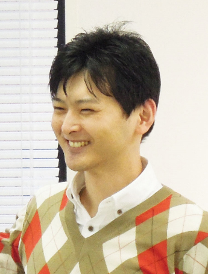
・運営サイト 天職探し心理学 ハッピーキャリア http://happy-career.com/
・天職探し心理学 公式ＬＩＮＥ ＱＲコード
＝＝＝＝＝＝＝＝＝＝＝＝＝＝＝＝＝＝＝＝
「うつ」な気分 を手放す方法
微笑みの練習帳
カウンセラーが自分のうつ を克服した考え方
発行日 ２０１８年７月20 日
著者 中越 裕史
表紙 中越 裕史
編集 小林 真美
https://booklog.jp/users/letters-mami
読者と著者の夢を叶える出版舎 夢叶舎（むくしゃ）
メールアドレス muku@mukusya.xyz
＝＝＝＝＝＝＝＝＝＝＝＝＝＝＝＝＝＝＝＝